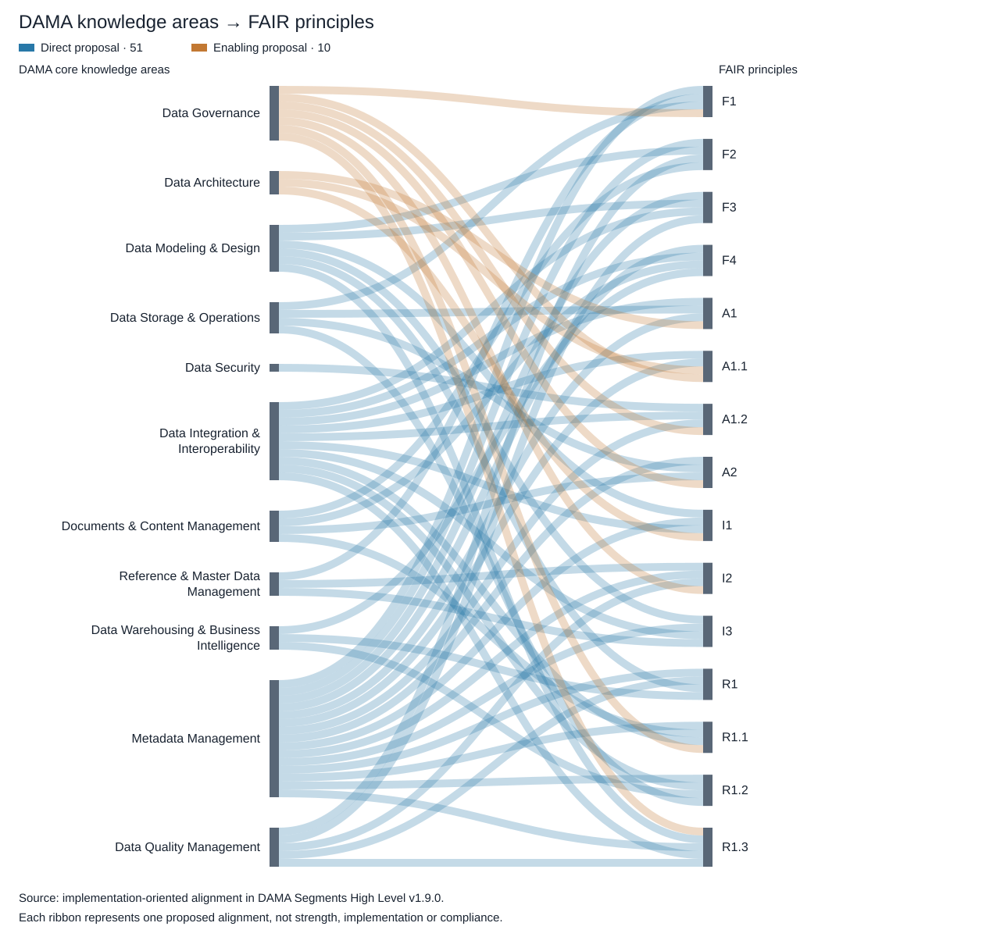

Back to the interactive Sankey · Markdown source
- Overview
- Situation — DAMA provides the delivery framework for FAIR
- Complication — Mapped support does not establish implementation
- Question — How can DAMA capabilities become demonstrable FAIR outcomes?
- Answer — Close the requirements gaps and establish evidence-based delivery
- Document scope and conventions
- DAMA-DMBOK Core Knowledge Areas
- DAMA Segments and FAIR Alignment
- Goals
- Inputs
- Tools
- Metrics
- Goals
- Inputs
- Tools
- Metrics
- 2. Data Architecture Management
- Goals
- Inputs
- Tools
- Metrics
- Goals
- Inputs
- Tools
- Metrics
- 4. Data Operations Management
- Goals
- Inputs
- Tools
- Metrics
- Goals
- Inputs
- Tools
- Metrics
- 6. Reference & Master Data Management
- Goals
- Inputs
- Tools
- Metrics
- 7. Data Warehousing & Business Intelligence Management
- Goals
- Inputs
- Tools
- Metrics
- 8. Document & Content Management
- Goals
- Inputs
- Tools
- Metrics
- Goals
- Inputs
- Tools
- Metrics
- Goals
- Inputs
- Tools
- Metrics
- 11. Data Integration & Interoperability
- Goals
- 12. Data Management Maturity Assessment
- Goals
- Implementation-oriented alignment for all 15 FAIR principles
- F1 — Globally unique, persistent identification
- F2 — Rich metadata describing data
- F3 — Metadata explicitly identifies the data described
- F4 — Registration or indexing in a searchable resource
- A1 — Retrieval by identifier through a standardized protocol
- A1.1 — Open, free and universally implementable retrieval protocol
- A1.2 — Authentication and authorization where needed
- A2 — Metadata remains accessible after data becomes unavailable
- I1 — Formal, shared language for knowledge representation
- I2 — Use of vocabularies that are themselves FAIR
- I3 — Qualified references to other data or metadata
- R1 — Accurate, relevant descriptions sufficient for reuse
- R1.1 — Clear, accessible data usage licence
- R1.3 — Conformance to relevant community standards
- Persona
- Appendix
Use DAMA's management disciplines to deliver FAIR outcomes: prioritize the five principles with only indirect alignment, assign accountable owners, and verify implementation against identified data and metadata resources.
DAMA-DMBOK organizes data management into 11 core knowledge areas. FAIR defines 15 principles for making data and metadata findable, accessible, interoperable and reusable. This document connects the two through activity-level mappings, expected deliverables, role descriptions and evidence requirements, providing a basis for incorporating FAIR into existing data management work.
The original ten-segment analysis identified potential direct support for ten FAIR principles, indirect support for four, and no identified support for A1.1. Adding the Data Integration & Interoperability activity analysis extends potential coverage to all 15 principles, but five still have indirect alignment only: persistent identifiers (F1), explicit data identifiers in metadata (F3), open retrieval protocols (A1.1), metadata persistence (A2), and data usage licensing (R1.1).
Even the ten directly aligned principles require implementation evidence. The source material also combines an older ten-segment structure with the 11 DMBOK2 knowledge areas, while persona relationships are inferred from area membership rather than confirmed individual accountability. Without explicit requirements, ownership and resource-level tests, broad capability coverage can be mistaken for demonstrated FAIR delivery.
How should the organization turn these potential alignments into a prioritized, accountable implementation program that addresses the five remaining direct-alignment gaps and verifies all 15 FAIR principles?
Use the knowledge-area activities as the delivery mechanism, with three priorities:
1. Specify the missing resource requirements. Define persistent identifier arrangements, mandatory data identifiers in metadata, open retrieval protocols, metadata survival after data withdrawal, and clear data usage licences. Translate these into concrete deliverables and acceptance criteria.
2. Assign ownership across the knowledge areas. Confirm a lead owner and supporting roles for each FAIR requirement, resolve the legacy-to-DMBOK2 activity coverage, and distinguish accountable delivery roles from suppliers and consumers. Use the persona catalog as a starting point for those decisions.
3. Verify results and sustain improvement. Test identified data and metadata resources, retain evidence against each principle, and use Data Management Maturity Assessment to prioritize investment and monitor progress. Maturity ratings should complement resource-level evidence.
The resulting program should track each FAIR principle from requirement to activity, owner, deliverable, test and retained evidence. This makes the mapping usable for implementation decisions and subsequent assurance.
The Sankey diagram summarizes the separate implementation-oriented proposal across all 11 core knowledge areas: 51 direct and 10 enabling connections to the 15 FAIR principles. It shows where implementation responsibilities could sit; it does not change the activity-analysis finding that five principles currently have indirect alignment only. Each ribbon represents one proposed mapping, not alignment strength, maturity or compliance. Data Management Maturity Assessment is a supporting discipline and is not an additional core knowledge-area node.

Duplicate images have been consolidated into eleven blocks. Activities corrects the spelling in the requested heading. Not shown in source identifies missing sections.
Activity codes: P — Planning; C — Control; D — Development; O — Operational.
Version 1.9.0 adds Data Management Maturity Assessment as section 12 from the supplied table. It supports assessment across the knowledge areas and has no assigned FAIR IDs; the principle coverage totals are unchanged.
Version 1.8.0 adds Data Integration & Interoperability as section 11, using the user-supplied table rather than a new workbook extraction. Original ten-segment aggregates remain the historical baseline; the summary and gap update include the additional section.
The overview is numbered 0 for consistency; it is unnumbered in the source. Its Mission is retained, and its Functions appear under Activities.
FAIR alignment source: DAMA-PDOC_FAIR-MASTER_2026-10-13.xlsx, columns H (direct support) and L (indirect support), from DataGovernance through DataArchitectureManagement. Direct alignment means a specific activity or deliverable can address a FAIR requirement; indirect alignment means an enabling contribution. These are potential alignments, not demonstrated implementation or compliance. IDs are deduplicated within each segment; an ID may occur in both categories across different activities.
Version 1.1.0 adds FAIR Alignment sections. The Data Management overview aggregates the ten segment mappings; it has no separate mapping row in the workbook.
The following table summarizes the 11 core knowledge areas of DAMA-DMBOK2 and the role each plays in managing data throughout its lifecycle. It provides a common reference for the implementation-oriented FAIR alignment later in this document. These 11 areas reflect the DMBOK2 structure; the earlier source images and worksheet-based mappings retain their original ten-segment structure.
| Area name | High-level description |
| Data Governance | Establishes policies, roles, and standards for managing data as a valuable business asset. Ensures compliance, accountability, and consistency across the organization. |
| Data Architecture | Designs and maintains data structures and frameworks that support business strategy. Includes defining data models, selecting technologies, and aligning data flows with enterprise goals. |
| Data Modeling & Design | Develops conceptual, logical, and physical representations of data to support business operations and analytics, enabling better integration and usability. |
| Data Storage & Operations | Ensures data is efficiently stored, retrieved, and maintained through database management, backup and recovery, and performance optimization. |
| Data Security | Protects data from unauthorized access, breaches, and loss through access controls, encryption, regulatory compliance, and security policies. |
| Data Integration & Interoperability | Enables data flow across systems and platforms through Extract, Transform, Load (ETL) processes, API-based integrations, and consistent data formats. |
| Documents & Content Management | Manages unstructured data, including documents, images, videos, and other content, ensuring digital assets are stored, categorized, and accessed according to business needs. |
| Reference & Master Data Management | Ensures consistency in core entities such as customers, products, and locations across business units. Provides a shared, authoritative source for key business information. |
| Data Warehousing & Business Intelligence | Supports analytics, reporting, and decision-making by organizing data for access through data warehouses, data lakes, and business intelligence tools. |
| Metadata Management | Maintains descriptions of data to improve understanding, governance, and accessibility. Uses metadata catalogs to track lineage, definitions, and usage across systems. |
| Data Quality Management | Ensures data is accurate, complete, consistent, timely, valid, and unique through quality metrics, error detection, cleansing, and enrichment. |
| DAMA Segments overview name | FAIR Direct IDs | FAIR Indirect IDs |
| 1. Data Governance | None identified | None identified |
| 2. Data Architecture Management | I1, I2, I3, R1.2, R1.3 | F1 |
| 3. Data Development | A1, I1, I3, R1.2 | None identified |
| 4. Data Operations Management | None identified | A2, R1.1, R1.2 |
| 5. Data Security Management | A1.2 | A1.2 |
| 6. Reference & Master Data Management | I3, R1.2 | None identified |
| 7. Data Warehousing & Business Intelligence Management | F4, A1 | None identified |
| 8. Document & Content Management | F2, F4, A1, A1.2, I2 | A2 |
| 9. Meta-data Management | F2, F4, A1, I1, I3, R1, R1.2, R1.3 | F3, A2 |
| 10. Data Quality Management | None identified | F2, R1 |
| 11. Data Integration & Interoperability | F2, F4, A1.2, R1, R1.2 | A1, A1.1, A1.2, A2, I1, I3, R1, R1.2, R1.3 |
| 12. Data Management Maturity Assessment |
The planning, execution and oversight of policies, practices and projects that acquire, control, protect, deliver, and enhance the value of data and information assets.
Mission: To meet the data availability, quality, and security needs of all stakeholders.
1. To understand the information needs of the enterprise and all its stakeholders.
2. To capture, store, protect, and ensure the integrity of data assets.
3. To continually improve the quality of data and information.
4. To ensure privacy and confidentiality, and to prevent unauthorized or inappropriate use of data and information.
5. To maximize effective use and value of data and information assets.
Across its ten segments, Data Management has potential direct alignment with rich descriptions and discovery (F2, F4), retrieval and controlled access (A1, A1.2), shared representations, FAIR vocabularies and qualified references (I1–I3), and reuse descriptions, provenance and community standards (R1, R1.2, R1.3). Indirect alignment covers persistent identification and explicit identifier references (F1, F3), descriptive quality (F2, R1), controlled access (A1.2), metadata persistence (A2), licensing (R1.1) and provenance (R1.2). The row below is an aggregate of the ten segment rows, rather than a separate workbook assessment.
| DAMA Segments overview name | FAIR Direct IDs | FAIR Indirect IDs |
| 0. Data Management | F2, F4, A1, A1.2, I1, I2, I3, R1, R1.2, R1.3 | F1, F2, F3, A1.2, A2, R1, R1.1, R1.2 |
- Business Strategy
- Business Activity
- IT Activity
- Data Issues
The overview labels these as Functions:
1. Data Governance
2. Data Architecture Management
3. Data Development
4. Database Operations Management
5. Data Security Management
6. Reference & Master Data Management
7. Data Warehousing & Business Intelligence Management
8. Document & Content Management
9. Meta-data Management
10. Data Quality Management
- Data Strategy
- Data Architecture
- Data Services
- Databases
- Data, Information, Knowledge and Wisdom
- Executives
- Data Creators
- External Sources
- Regulatory Bodies
- Data Creators
- Information Consumers
- Data Stewards
- Data Professionals
- Executives
- Clerical Workers
- Knowledge Workers
- Managers
- Executives
- Customers
- Data Modeling Tools
- Database Management Systems
- Data Integration and Quality Tools
- Business Intelligence Tools
- Document Management Tools
- Meta-data Repository Tools
- Data Value Metrics
- Data Quality Metrics
- DM Program Metrics
The exercise of authority and control (planning, monitoring, and enforcement) over the management of data assets.
1. To define, approve, and communicate data strategies, policies, standards, architecture, procedures, and metrics.
2. To track and enforce regulatory compliance and conformance to data policies, standards, architecture, and procedures.
3. To sponsor, track, and oversee the delivery of data management projects and services.
4. To manage and resolve data related issues.
5. To understand and promote the value of data assets.
No specific direct or indirect FAIR principle IDs are identified for this segment in the workbook. Governance can enable FAIR implementation through authority, ownership and oversight, but the supplied activities and deliverables do not establish a specific principle-level alignment.
| DAMA Segments overview name | FAIR Direct IDs | FAIR Indirect IDs |
| 1. Data Governance | None identified | None identified |
- Business Goals
- Business Strategies
- IT Objectives
- IT Strategies
- Data Needs
- Data Issues
- Regulatory Requirements
1. Data Management Planning (P)
1. Understand Strategic Enterprise Data Needs
2. Develop and Maintain the Data Strategy
3. Establish Data Professional Roles and Organizations
4. Identify and Appoint Data Stewards
5. Establish Data Governance and Stewardship Organizations
6. Develop and Approve Data Policies, Standards, and Procedures
7. Review and Approve Data Architecture
8. Plan and Sponsor Data Management Projects and Services
9. Estimate Data Asset Value and Associated Costs
2. Data Management Control (C)
1. Supervise Data Professional Organizations and Staff
2. Coordinate Data Governance Activities
3. Manage and Resolve Data Related Issues
4. Monitor and Ensure Regulatory Compliance
5. Monitor and Enforce Conformance With Data Policies, Standards, and Architecture
6. Oversee Data Management Projects and Services
7. Communicate and Promote the Value of Data Assets
- Data Policies
- Data Standards
- Resolved Issues
- Data Management Projects and Services
- Quality Data and Information
- Recognized Data Value
- Business Executives
- IT Executives
- Data Stewards
- Regulatory Bodies
- Executive Data Stewards
- Coordinating Data Stewards
- Business Data Stewards
- Data Professionals
- DM Executive
- CIO
- Data Producers
- Knowledge Workers
- Managers and Executives
- Data Professionals
- Customers
- Concise Messaging
- Contact List
- Logo
Source: the Data Governance & Stewardship row in Appendix — Activity Technical Drivers.
- Intranet Website
- Meta-data Tools
- Meta-data Repository
- Issue Management Tools
- Data Governance KPI Dashboard
- Data Value
- Data Management Cost
- Achievement of Objectives
- Number of Decisions Made
- Steward Representation / Coverage
- Data Professional Headcount
- Data Management Process Maturity
Source: DAMA-PDOC_FAIR-MASTER_2026-10-13.xlsx, worksheet DataGovernance. All populated table rows and all 12 columns are reproduced below. Blank cells remain blank; items previously separated by line breaks within cells are separated by semicolons.
| Activities | Deliverables | Responsible Roles | Approving Roles | Contributing Roles | Plan,Develop,Organise,Control | Relevant deliverables | FAIR principles supported | How they can support FAIR | Indirect support | What would demonstrate the supported FAIR requirement | FAIR principles indirectly supported |
| Understand Strategic Enterprise Data Needs (P) | Strategic Enterprise Data Needs | DM Executive | Data Governance Council, CDO | Data management professionals | P | No clear FAIR support identified. | Understand Strategic Enterprise Data Needs (P) \[source: DataGovernance!A2:F2\] — Deliverable: Strategic Enterprise Data Needs.; No clear FAIR support identified from the supplied activity and deliverable. This item can enable implementation, but it does not specify a defensible resource-level FAIR mechanism. No implementation evidence is supplied. | Indirect support: Governance authority, stewardship and review can assign ownership, fund services and enforce FAIR acceptance criteria. For this activity, use the named deliverable to connect decisions, responsibilities or oversight to measurable FAIR outcomes; a governance record alone is insufficient. | Supporting-process evidence: inspect the named deliverable, responsible/approving roles and dated operating or review records for this activity. No directly supported FAIR requirement is established. To demonstrate FAIR fulfilment, separately test identified data and metadata against the specific requirements commissioned through this process. | None identified | |
| Develop and Maintain the Data Strategy (P) | Data Strategy – Vision, Mission, Bus. Case, Goals, Objectives, Principles, Components, Metrics, Implementation Roadmap | DM Executive | Data Governance Council, CDO | Data management professionals, Data Stewards | P | No clear FAIR support identified. | Develop and Maintain the Data Strategy (P) \[source: DataGovernance!A3:F3\] — Deliverable: Data Strategy – Vision, Mission, Bus. Case, Goals, Objectives, Principles, Components, Metrics, Implementation Roadmap.; No clear FAIR support identified from the supplied activity and deliverable. This item can enable implementation, but it does not specify a defensible resource-level FAIR mechanism. No implementation evidence is supplied. | Indirect support: Governance authority, stewardship and review can assign ownership, fund services and enforce FAIR acceptance criteria. For this activity, use the named deliverable to connect decisions, responsibilities or oversight to measurable FAIR outcomes; a governance record alone is insufficient. | Supporting-process evidence: inspect the named deliverable, responsible/approving roles and dated operating or review records for this activity. No directly supported FAIR requirement is established. To demonstrate FAIR fulfilment, separately test identified data and metadata against the specific requirements commissioned through this process. | None identified | |
| Establish Data Management Professional Roles and Organizations (P) | Data Management Services organizations and staff | CDO | Data Governance Council | DM Executive | P | No clear FAIR support identified. | Establish Data Management Professional Roles and Organizations (P) \[source: DataGovernance!A4:F4\] — Deliverable: Data Management Services organizations and staff.; No clear FAIR support identified from the supplied activity and deliverable. This item can enable implementation, but it does not specify a defensible resource-level FAIR mechanism. No implementation evidence is supplied. | Indirect support: Governance authority, stewardship and review can assign ownership, fund services and enforce FAIR acceptance criteria. For this activity, use the named deliverable to connect decisions, responsibilities or oversight to measurable FAIR outcomes; a governance record alone is insufficient. | Supporting-process evidence: inspect the named deliverable, responsible/approving roles and dated operating or review records for this activity. No directly supported FAIR requirement is established. To demonstrate FAIR fulfilment, separately test identified data and metadata against the specific requirements commissioned through this process. | None identified | |
| Establish Data Governance and Stewardship Organizations (P) | Data Governance Council,; Data Stewardship Committee,; Data Stewardship Teams | DM Executive, CDO, Data Governance Council | Senior Mgmt | Data Stewards, Data management professionals | P | No clear FAIR support identified. | Establish Data Governance and Stewardship Organizations (P) \[source: DataGovernance!A5:F5\] — Deliverable: Data Governance Council,; Data Stewardship Committee,; Data Stewardship Teams.; No clear FAIR support identified from the supplied activity and deliverable. This item can enable implementation, but it does not specify a defensible resource-level FAIR mechanism. No implementation evidence is supplied. | Indirect support: Governance authority, stewardship and review can assign ownership, fund services and enforce FAIR acceptance criteria. For this activity, use the named deliverable to connect decisions, responsibilities or oversight to measurable FAIR outcomes; a governance record alone is insufficient. | Supporting-process evidence: inspect the named deliverable, responsible/approving roles and dated operating or review records for this activity. No directly supported FAIR requirement is established. To demonstrate FAIR fulfilment, separately test identified data and metadata against the specific requirements commissioned through this process. | None identified | |
| Identify and Appoint Data Stewards (P) | Business Data Stewards,; Coordinating Data Stewards,; Executive Data Stewards | DM Executive, Executive Data Stewards | Data Governance Council | Coordinating Data Stewards, Data management professionals | P | No clear FAIR support identified. | Identify and Appoint Data Stewards (P) \[source: DataGovernance!A6:F6\] — Deliverable: Business Data Stewards,; Coordinating Data Stewards,; Executive Data Stewards.; No clear FAIR support identified from the supplied activity and deliverable. This item can enable implementation, but it does not specify a defensible resource-level FAIR mechanism. No implementation evidence is supplied. | Indirect support: Governance authority, stewardship and review can assign ownership, fund services and enforce FAIR acceptance criteria. For this activity, use the named deliverable to connect decisions, responsibilities or oversight to measurable FAIR outcomes; a governance record alone is insufficient. | Supporting-process evidence: inspect the named deliverable, responsible/approving roles and dated operating or review records for this activity. No directly supported FAIR requirement is established. To demonstrate FAIR fulfilment, separately test identified data and metadata against the specific requirements commissioned through this process. | None identified | |
| Develop, Review and Approve Data Policies, Standards, and Procedures (P) | Data Policies,; Data Standards,; Data Management Procedures | DM Executive | Data Governance Council, CDO | Data Stewardship Committee, Data Stewardship Teams, Data management professionals | P | Data Policies,; Data Standards,; Data Management Procedures | No clear FAIR support identified. | Develop, Review and Approve Data Policies, Standards, and Procedures (P) \[source: DataGovernance!A7:F7\] — Deliverable: Data Policies,; Data Standards,; Data Management Procedures.; No clear FAIR support identified from the supplied activity and deliverable. This item can enable implementation, but it does not specify a defensible resource-level FAIR mechanism. No implementation evidence is supplied. | Indirect support: Governance authority, stewardship and review can assign ownership, fund services and enforce FAIR acceptance criteria. For this activity, use the named deliverable to connect decisions, responsibilities or oversight to measurable FAIR outcomes; a governance record alone is insufficient. | Supporting-process evidence: inspect the named deliverable, responsible/approving roles and dated operating or review records for this activity. No directly supported FAIR requirement is established. To demonstrate FAIR fulfilment, separately test identified data and metadata against the specific requirements commissioned through this process. | None identified |
| Review and Approve Data Architecture (P) | Adopted Enterprise Data Model,; Related Data Architecture | Data Governance Council | Data Governance Council, CDO | Enterprise Data Architect, Data Stewardship Committee, Data Stewards, Data Architects, DM Executive | P | Adopted Enterprise Data Model,; Related Data Architecture | No clear FAIR support identified. | Review and Approve Data Architecture (P) \[source: DataGovernance!A8:F8\] — Deliverable: Adopted Enterprise Data Model,; Related Data Architecture.; No clear FAIR support identified from the supplied activity and deliverable. This item can enable implementation, but it does not specify a defensible resource-level FAIR mechanism. No implementation evidence is supplied. | Indirect support: Governance authority, stewardship and review can assign ownership, fund services and enforce FAIR acceptance criteria. For this activity, use the named deliverable to connect decisions, responsibilities or oversight to measurable FAIR outcomes; a governance record alone is insufficient. | Supporting-process evidence: inspect the named deliverable, responsible/approving roles and dated operating or review records for this activity. No directly supported FAIR requirement is established. To demonstrate FAIR fulfilment, separately test identified data and metadata against the specific requirements commissioned through this process. | None identified |
| Plan and Sponsor Data Management Projects and Services (P) | Data Management Projects,Data Management Services | Data Governance Council | Data Governance Council, CDO, IT Steering Committee | DM Executive, Data management professionals, Data Stewards | P | No clear FAIR support identified. | Plan and Sponsor Data Management Projects and Services (P) \[source: DataGovernance!A9:F9\] — Deliverable: Data Management Projects,Data Management Services.; No clear FAIR support identified from the supplied activity and deliverable. This item can enable implementation, but it does not specify a defensible resource-level FAIR mechanism. No implementation evidence is supplied. | Indirect support: Governance authority, stewardship and review can assign ownership, fund services and enforce FAIR acceptance criteria. For this activity, use the named deliverable to connect decisions, responsibilities or oversight to measurable FAIR outcomes; a governance record alone is insufficient. | Supporting-process evidence: inspect the named deliverable, responsible/approving roles and dated operating or review records for this activity. No directly supported FAIR requirement is established. To demonstrate FAIR fulfilment, separately test identified data and metadata against the specific requirements commissioned through this process. | None identified | |
| Estimate Data Asset Value and Associated Costs (P) | Data Asset Value Estimates, | Data Stewards | Data Governance Council | DM Executive,Data management professionals | P | No clear FAIR support identified. | Estimate Data Asset Value and Associated Costs (P) \[source: DataGovernance!A10:F10\] — Deliverable: Data Asset Value Estimates,.; No clear FAIR support identified from the supplied activity and deliverable. This item can enable implementation, but it does not specify a defensible resource-level FAIR mechanism. No implementation evidence is supplied. | Indirect support: Governance authority, stewardship and review can assign ownership, fund services and enforce FAIR acceptance criteria. For this activity, use the named deliverable to connect decisions, responsibilities or oversight to measurable FAIR outcomes; a governance record alone is insufficient. | Supporting-process evidence: inspect the named deliverable, responsible/approving roles and dated operating or review records for this activity. No directly supported FAIR requirement is established. To demonstrate FAIR fulfilment, separately test identified data and metadata against the specific requirements commissioned through this process. | None identified | |
| Supervise Data Professional Organizations and Staff (C) | Data Management Services organization(s) and staff | DM Executives | CDO | Data management professionals | C | No clear FAIR support identified. | Supervise Data Professional Organizations and Staff (C) \[source: DataGovernance!A11:F11\] — Deliverable: Data Management Services organization(s) and staff.; No clear FAIR support identified from the supplied activity and deliverable. This item can enable implementation, but it does not specify a defensible resource-level FAIR mechanism. No implementation evidence is supplied. | Indirect support: Governance authority, stewardship and review can assign ownership, fund services and enforce FAIR acceptance criteria. For this activity, use the named deliverable to connect decisions, responsibilities or oversight to measurable FAIR outcomes; a governance record alone is insufficient. | Supporting-process evidence: inspect the named deliverable, responsible/approving roles and dated operating or review records for this activity. No directly supported FAIR requirement is established. To demonstrate FAIR fulfilment, separately test identified data and metadata against the specific requirements commissioned through this process. | None identified | |
| Coordinate Data Governance Activities (C) | Data Governance Organization Schedules, Meetings, Agendas, Documents, Minutes | DM Executive, Enterprise Data Architect,Data Architects | Data Governance Council,Data Stewardship Committee, Data Stewardship Teams, CDO | Data management professionals | C | No clear FAIR support identified. | Coordinate Data Governance Activities (C) \[source: DataGovernance!A12:F12\] — Deliverable: Data Governance Organization Schedules, Meetings, Agendas, Documents, Minutes.; No clear FAIR support identified from the supplied activity and deliverable. This item can enable implementation, but it does not specify a defensible resource-level FAIR mechanism. No implementation evidence is supplied. | Indirect support: Governance authority, stewardship and review can assign ownership, fund services and enforce FAIR acceptance criteria. For this activity, use the named deliverable to connect decisions, responsibilities or oversight to measurable FAIR outcomes; a governance record alone is insufficient. | Supporting-process evidence: inspect the named deliverable, responsible/approving roles and dated operating or review records for this activity. No directly supported FAIR requirement is established. To demonstrate FAIR fulfilment, separately test identified data and metadata against the specific requirements commissioned through this process. | None identified | |
| Manage and Resolve Data Related Issues (C) | Issue Log, Issue Resolutions | Data Stewardship Teams,Data Stewardship Committee,Data Governance Council | Data Stewardship Teams,Data Governance Council,Data Stewardship Committee | DM Executive, Data management professionals | C | No clear FAIR support identified. | Manage and Resolve Data Related Issues (C) \[source: DataGovernance!A13:F13\] — Deliverable: Issue Log, Issue Resolutions.; No clear FAIR support identified from the supplied activity and deliverable. This item can enable implementation, but it does not specify a defensible resource-level FAIR mechanism. No implementation evidence is supplied. | Indirect support: Governance authority, stewardship and review can assign ownership, fund services and enforce FAIR acceptance criteria. For this activity, use the named deliverable to connect decisions, responsibilities or oversight to measurable FAIR outcomes; a governance record alone is insufficient. | Supporting-process evidence: inspect the named deliverable, responsible/approving roles and dated operating or review records for this activity. No directly supported FAIR requirement is established. To demonstrate FAIR fulfilment, separately test identified data and metadata against the specific requirements commissioned through this process. | None identified | |
| Monitor and Ensure Regulatory Compliance (C) | Compliance Reporting, Non-compliance Issues | Data management professionals | Data Governance Council | DM Executive, CDO | C | No clear FAIR support identified. | Monitor and Ensure Regulatory Compliance (C) \[source: DataGovernance!A14:F14\] — Deliverable: Compliance Reporting, Non-compliance Issues.; No clear FAIR support identified from the supplied activity and deliverable. This item can enable implementation, but it does not specify a defensible resource-level FAIR mechanism. No implementation evidence is supplied. | Indirect support: Governance authority, stewardship and review can assign ownership, fund services and enforce FAIR acceptance criteria. For this activity, use the named deliverable to connect decisions, responsibilities or oversight to measurable FAIR outcomes; a governance record alone is insufficient. | Supporting-process evidence: inspect the named deliverable, responsible/approving roles and dated operating or review records for this activity. No directly supported FAIR requirement is established. To demonstrate FAIR fulfilment, separately test identified data and metadata against the specific requirements commissioned through this process. | None identified | |
| Communicate, Monitor and Enforce Conformance with Data Policies, Standards, Procedures, and Architecture (C) | Policy / Standards / Arch / Procedure Communication,Non-conformance Issues | Data management professionals, Data Stewards | Data Governance Council,Data Stewardship Committee | DM Executive | C | No clear FAIR support identified. | Communicate, Monitor and Enforce Conformance with Data Policies, Standards, Procedures, and Architecture (C) \[source: DataGovernance!A15:F15\] — Deliverable: Policy / Standards / Arch / Procedure Communication,Non-conformance Issues.; No clear FAIR support identified from the supplied activity and deliverable. This item can enable implementation, but it does not specify a defensible resource-level FAIR mechanism. No implementation evidence is supplied. | Indirect support: Governance authority, stewardship and review can assign ownership, fund services and enforce FAIR acceptance criteria. For this activity, use the named deliverable to connect decisions, responsibilities or oversight to measurable FAIR outcomes; a governance record alone is insufficient. | Supporting-process evidence: inspect the named deliverable, responsible/approving roles and dated operating or review records for this activity. No directly supported FAIR requirement is established. To demonstrate FAIR fulfilment, separately test identified data and metadata against the specific requirements commissioned through this process. | None identified | |
| Oversee Data Management Projects and Services (C) | Record of Oversight | DM Executive | Data Governance Council | Data management professionals | C | No clear FAIR support identified. | Oversee Data Management Projects and Services (C) \[source: DataGovernance!A16:F16\] — Deliverable: Record of Oversight.; No clear FAIR support identified from the supplied activity and deliverable. This item can enable implementation, but it does not specify a defensible resource-level FAIR mechanism. No implementation evidence is supplied. | Indirect support: Governance authority, stewardship and review can assign ownership, fund services and enforce FAIR acceptance criteria. For this activity, use the named deliverable to connect decisions, responsibilities or oversight to measurable FAIR outcomes; a governance record alone is insufficient. | Supporting-process evidence: inspect the named deliverable, responsible/approving roles and dated operating or review records for this activity. No directly supported FAIR requirement is established. To demonstrate FAIR fulfilment, separately test identified data and metadata against the specific requirements commissioned through this process. | None identified | |
| Communicate and Promote the Value of Data and Data Management (C) | Data Management Website,Understanding and Recognition,Data Management Newsletter | DM Executive,Data management professionals, Data Stewards,CDO | Data Governance Council | Data Stewards | C | No clear FAIR support identified. | Communicate and Promote the Value of Data and Data Management (C) \[source: DataGovernance!A17:F17\] — Deliverable: Data Management Website,Understanding and Recognition,Data Management Newsletter.; No clear FAIR support identified from the supplied activity and deliverable. This item can enable implementation, but it does not specify a defensible resource-level FAIR mechanism. No implementation evidence is supplied. | Indirect support: Governance authority, stewardship and review can assign ownership, fund services and enforce FAIR acceptance criteria. For this activity, use the named deliverable to connect decisions, responsibilities or oversight to measurable FAIR outcomes; a governance record alone is insufficient. | Supporting-process evidence: inspect the named deliverable, responsible/approving roles and dated operating or review records for this activity. No directly supported FAIR requirement is established. To demonstrate FAIR fulfilment, separately test identified data and metadata against the specific requirements commissioned through this process. | None identified |
Defining the data needs of the enterprise and designing the master blueprints to meet those needs.
1. To plan with vision and foresight to provide high quality data.
2. To identify and define common data requirements.
3. To design conceptual structures and plans to meet the current and long-term data requirements of the enterprise.
Direct alignment concerns formal shared representations (I1), FAIR vocabularies (I2), qualified links between resources (I3), provenance (R1.2) and domain-relevant community standards (R1.3). Architecture provides indirect alignment with globally unique, persistent identification (F1) by enabling identifier requirements and their implementation.
| DAMA Segments overview name | FAIR Direct IDs | FAIR Indirect IDs |
| 2. Data Architecture Management | I1, I2, I3, R1.2, R1.3 | F1 |
- Business Goals
- Business Strategies
- Business Architecture
- Process Architecture
- IT Objectives
- IT Strategies
- Data Strategies
- Data Issues
- Data Needs
- Technical Architecture
1. Understand Enterprise Information Needs (P)
2. Develop and Maintain the Enterprise Data Model (P)
3. Analyze and Align With Other Business Models (P)
4. Define and Maintain the Data Technology Architecture (P)
5. Define and Maintain the Data Integration Architecture (P)
6. Define and Maintain the DW/BI Architecture (P)
7. Define and Maintain Enterprise Taxonomies and Namespaces (P)
8. Define and Maintain the Meta-data Architecture (P)
- Enterprise Data Model
- Information Value Chain Analysis
- Data Technology Architecture
- Data Integration / MDM Architecture
- DW / BI Architecture
- Meta-data Architecture
- Enterprise Taxonomies and Namespaces
- Document Management Architecture
- Meta-data
- Executives
- Data Stewards
- Data Producers
- Information Consumers
- Data Stewards
- Subject Matter Experts (SMEs)
- Data Architects
- Data Analysts and Modelers
- Other Enterprise Architects
- DM Executive and Managers
- CIO and Other Executives
- Database Administrators
- Data Model Administrator
- Data Stewards
- Data Architects
- Data Analysts
- Database Administrators
- Software Developers
- Project Managers
- Data Producers
- Knowledge Workers
- Managers and Executives
- Lifecycle Reviews
- Diagramming Clarity
Source: the Data Architecture row in Appendix — Activity Technical Drivers.
- Data Modeling Tools
- Model Management Tool
- Meta-data Repository
- Office Productivity Tools
Not shown in source.
Source: DAMA-PDOC_FAIR-MASTER_2026-10-13.xlsx, worksheet DataArchitectureManagement. All populated table rows and all 12 columns are reproduced below. Blank cells remain blank; items previously separated by line breaks within cells are separated by semicolons.
| Activities | Deliverables | Responsible Roles | Approving Roles | Contributing Roles | Plan,Develop,Organise,Control | Relevant deliverables | FAIR principles supported | How they can support FAIR | Indirect support | What would demonstrate the supported FAIR requirement | FAIR principles indirectly supported |
| Understand Enterprise Information Needs (P) | Lists of essential information requirements | Enterprise Data Architect, Business SME’s | Data Governance Council, Data Architecture Steering Committee, DM Executive, CDO | P | No clear FAIR support identified. | Understand Enterprise Information Needs (P) \[source: DataArchitectureManagement!A2:F2\] — Deliverable: Lists of essential information requirements.; No clear FAIR support identified from the supplied activity and deliverable. This item can enable implementation, but it does not specify a defensible resource-level FAIR mechanism. No implementation evidence is supplied. | Indirect support: Architecture ownership and review can align implemented resources with agreed FAIR representations and service requirements. | Supporting-process evidence: inspect the named deliverable, responsible/approving roles and dated operating or review records for this activity. No directly supported FAIR requirement is established. To demonstrate FAIR fulfilment, separately test identified data and metadata against the specific requirements commissioned through this process. | None identified | ||
| Develop and Maintain the Enterprise Data Model (P) This will be the Enterprise Ontology and Knowledge Graph | Enterprise Data Model: Subject Area Model, Conceptual Model, Logical Model, Glossary | Enterprise Data Architect | Data Governance Council, Data Architecture Steering Committee, DM Executive, CDO | Data Architects, Data Stewards / Teams | P | Enterprise Data Model: Subject Area Model, Conceptual Model, Logical Model, Glossary | I1 — formal, accessible, shared knowledge representation; I2 — use of vocabularies that follow FAIR principles; I3 — qualified references to other data or metadata | Develop and Maintain the Enterprise Data Model (P) This will be the Enterprise Ontology and Knowledge Graph \[source: DataArchitectureManagement!A3:F3\] — Deliverable: Enterprise Data Model: Subject Area Model, Conceptual Model, Logical Model, Glossary.; Inferred support: the stated enterprise ontology/knowledge graph can implement shared formal representation, FAIR vocabulary use and qualified links. The deliverable also lists conceptual/logical models and a glossary, which alone do not establish these properties. No implementation evidence is supplied. | Indirect support: Architecture ownership and review can align implemented resources with agreed FAIR representations and service requirements. | I1: Inspect the implemented language, shared specification and sample data/metadata representations. Parse them independently and verify that the language is formal, accessible, shared and broadly applicable; schema syntax or diagrams alone are insufficient.; I2: Inspect the vocabulary term identifiers and versions actually used in data/metadata; assess the vocabulary itself for FAIR identifiers, discovery, access, representation, licensing and provenance. An internal glossary or taxonomy alone is insufficient.; I3: Inspect sample data/metadata for references to identifiable related resources with explicit relation types and context; check targets and meanings. Matching keys or diagrammed entity relationships alone are insufficient.; Supporting-process evidence: inspect the named deliverable and its approval/maintenance records separately from the resource tests. | None identified |
| Analyze and Align With Other Business Models (P) | Information Value Chain Analysis Matrices, Entity / Function, Entity / Org and Role, Entity / Application,; | Enterprise Data Architect | Data Governance Council, Data Architecture Steering Committee, DM Executive, CDO | Data Architects, Data Stewards / Teams, Enterprise Architects | P | No clear FAIR support identified. | Analyze and Align With Other Business Models (P) \[source: DataArchitectureManagement!A4:F4\] — Deliverable: Information Value Chain Analysis Matrices, Entity / Function, Entity / Org and Role, Entity / Application,.; No clear FAIR support identified from the supplied activity and deliverable. This item can enable implementation, but it does not specify a defensible resource-level FAIR mechanism. No implementation evidence is supplied. | Indirect support: Architecture ownership and review can align implemented resources with agreed FAIR representations and service requirements. | Supporting-process evidence: inspect the named deliverable, responsible/approving roles and dated operating or review records for this activity. No directly supported FAIR requirement is established. To demonstrate FAIR fulfilment, separately test identified data and metadata against the specific requirements commissioned through this process. | None identified | |
| Define and Maintain the Data Technology Architecture (P) | Data Technology Architecture (Technology, Distribution, Usage) | Enterprise Data Architect | DM Executive, CDO,Data Architecture Steering Committee, Data Governance Council | Database Administrators, Other Data Management. Professionals | P | Data Technology Architecture (Technology, Distribution, Usage) | No clear FAIR support identified. | Define and Maintain the Data Technology Architecture (P) \[source: DataArchitectureManagement!A5:F5\] — Deliverable: Data Technology Architecture (Technology, Distribution, Usage).; No clear FAIR support identified from the supplied activity and deliverable. This item can enable implementation, but it does not specify a defensible resource-level FAIR mechanism. No implementation evidence is supplied. | Indirect support: Architecture ownership and review can align implemented resources with agreed FAIR representations and service requirements. | Supporting-process evidence: inspect the named deliverable, responsible/approving roles and dated operating or review records for this activity. No directly supported FAIR requirement is established. To demonstrate FAIR fulfilment, separately test identified data and metadata against the specific requirements commissioned through this process. | None identified |
| Define and Maintain the Data Integration Architecture (P) | Data Integration Architecture Data Lineage / Flows Entity Lifecycles; | Enterprise Data Architect | DM Executive, CDO,Data Architecture Steering Committee, Data Governance Council | Database Administrators, Data Integration Specialists, Other Data Management Professionals | P | Data Integration Architecture Data Lineage / Flows Entity Lifecycles | I3 — qualified references to other data or metadata; R1.2 — detailed provenance associated with data and metadata | Define and Maintain the Data Integration Architecture (P) \[source: DataArchitectureManagement!A6:F6\] — Deliverable: Data Integration Architecture Data Lineage / Flows Entity Lifecycles.; Explicit partial support for R1.2: named Data Lineage/Flows and Entity Lifecycles can document origins and changes. Inferred support for I3: flows can be typed references between identifiable resources when implemented. No implementation evidence is supplied. | Indirect support: Architecture ownership and review can align implemented resources with agreed FAIR representations and service requirements. | I3: Inspect sample data/metadata for references to identifiable related resources with explicit relation types and context; check targets and meanings. Matching keys or diagrammed entity relationships alone are insufficient.; R1.2: Trace representative data and metadata to identified sources, contributors/agents, transformations, dates and versions. Inspect associated provenance records; an unlinked source assessment, ETL design or change log documents only part of the requirement.; Supporting-process evidence: inspect the named deliverable and its approval/maintenance records separately from the resource tests. | None identified |
| Define and Maintain the Data Warehouse / BI Architecture (P) | Data Warehouse / Business Intelligence Architecture | Data Warehouse Architect | Enterprise Data Architect, DM Executive, CDO,Data Architecture Steering Committee, Data Governance Council | Business Intelligence Specialists, Data Integration Specialists, Database Administrators, Other Data Management. Professionals | P | Data Warehouse / Business Intelligence Architecture | No clear FAIR support identified. | Define and Maintain the Data Warehouse / BI Architecture (P) \[source: DataArchitectureManagement!A7:F7\] — Deliverable: Data Warehouse / Business Intelligence Architecture.; No clear FAIR support identified from the supplied activity and deliverable. This item can enable implementation, but it does not specify a defensible resource-level FAIR mechanism. No implementation evidence is supplied. | Indirect support: Architecture ownership and review can align implemented resources with agreed FAIR representations and service requirements. | Supporting-process evidence: inspect the named deliverable, responsible/approving roles and dated operating or review records for this activity. No directly supported FAIR requirement is established. To demonstrate FAIR fulfilment, separately test identified data and metadata against the specific requirements commissioned through this process. | None identified |
| Define and Maintain Enterprise Ontologies, Taxonomies and Namespaces (P) | Enterprise Taxonomies, Industry Ontologies, ISO TC/68 alignment, XML Namespaces, Content Management Standards; | Enterprise Data Architect | DM Executive, CDO, Data Architecture Steering Committee, Data Governance Council; | Other Data Architects,Other Data Management Professionals | P | Enterprise Taxonomies, Industry Ontologies, ISO TC/68 alignment, XML Namespaces, Content Management Standards | I1 — formal, accessible, shared knowledge representation; I2 — use of vocabularies that follow FAIR principles; R1.3 — domain-relevant community standards | Define and Maintain Enterprise Ontologies, Taxonomies and Namespaces (P) \[source: DataArchitectureManagement!A8:F8\] — Deliverable: Enterprise Taxonomies, Industry Ontologies, ISO TC/68 alignment, XML Namespaces, Content Management Standards.; Inferred support: industry ontologies, taxonomies and XML namespaces can underpin formal representation and FAIR vocabulary use. ISO TC/68 alignment and content-management standards may support R1.3 where relevant to the domain community; no particular standard/version or conformance evidence is supplied. No implementation evidence is supplied. | Indirect support: Architecture ownership and review can align implemented resources with agreed FAIR representations and service requirements. Namespace governance can enable F1 only if identifiers for data and metadata are globally unique and persistent; XML namespaces alone do not establish F1. | I1: Inspect the implemented language, shared specification and sample data/metadata representations. Parse them independently and verify that the language is formal, accessible, shared and broadly applicable; schema syntax or diagrams alone are insufficient.; I2: Inspect the vocabulary term identifiers and versions actually used in data/metadata; assess the vocabulary itself for FAIR identifiers, discovery, access, representation, licensing and provenance. An internal glossary or taxonomy alone is insufficient.; R1.3: Identify the domain community and relevant standard/version, then validate representative data and metadata against its applicable requirements. Document exceptions; internal enterprise standards and a mention of an industry standard do not prove conformance.; Supporting-process evidence: inspect the named deliverable and its approval/maintenance records separately from the resource tests. | F1 |
| Define and Maintain the Metadata Architecture (P) | Metadata Architecture | Metadata Architect | Enterprise Data Architect, DM Executive, CDO, Data Architecture Steering Committee, Data Governance Council; | Metadata Specialists,Other Data Management. Professionals | P | Metadata Architecture | I1 — formal, accessible, shared knowledge representation | Define and Maintain the Metadata Architecture (P) \[source: DataArchitectureManagement!A9:F9\] — Deliverable: Metadata Architecture.; Inferred support: metadata architecture can select a shared formal representation; the source does not name the language or deployed records. No implementation evidence is supplied. | Indirect support: Architecture ownership and review can align implemented resources with agreed FAIR representations and service requirements. | I1: Inspect the implemented language, shared specification and sample data/metadata representations. Parse them independently and verify that the language is formal, accessible, shared and broadly applicable; schema syntax or diagrams alone are insufficient.; Supporting-process evidence: inspect the named deliverable and its approval/maintenance records separately from the resource tests. | None identified |
Designing, implementing, and maintaining solutions to meet the data needs of the enterprise.
1. Identify and define data requirements.
2. Design data structures and other solutions to these requirements.
3. Implement and maintain solution components that meet these requirements.
4. Ensure solution conformance to data architecture and standards as appropriate.
5. Ensure the integrity, security, usability, and maintainability of structured data assets.
Direct alignment concerns retrieval through a standardized communications protocol (A1), formal shared representations (I1), qualified references (I3) and provenance (R1.2). Development activities and deliverables can implement these resource and service properties. No additional indirect principle IDs are identified.
| DAMA Segments overview name | FAIR Direct IDs | FAIR Indirect IDs |
| 3. Data Development | A1, I1, I3, R1.2 | None identified |
- Business Goals and Strategies
- Data Needs and Strategies
- Data Standards
- Data Architecture
- Process Architecture
- Application Architecture
- Technical Architecture
1. Data Modeling, Analysis and Solution Design (D)
1. Analyze Information Requirements
2. Develop and Maintain Conceptual Data Models
3. Develop and Maintain Logical Data Models
4. Develop and Maintain Physical Data Models
2. Detailed Data Design (D)
1. Design Physical Databases
2. Design Information Products
3. Design Data Access Services
4. Design Data Integration Services
3. Data Model and Design Quality Management
1. Develop Data Modeling and Design Standards (P)
2. Review Data Model and Database Design Quality (C)
3. Manage Data Model Versioning and Integration (C)
4. Data Implementation (D)
1. Implement Development / Test Database Changes
2. Create and Maintain Test Data
3. Migrate and Convert Data
4. Build and Test Information Products
5. Build and Test Data Access Services
6. Validate Information Requirements
7. Prepare for Data Deployment
- Data Requirements and Business Rules
- Conceptual Data Models
- Logical Data Models and Specifications
- Physical Data Models and Specifications
- Meta-data (Business and Technical)
- Data Modeling and DB Design Standards
- Data Model and DB Design Reviews
- Version Controlled Data Models
- Test Data
- Development and Test Databases
- Information Products
- Data Access Services
- Data Integration Services
- Migrated and Converted Data
- Data Stewards
- Subject Matter Experts
- IT Steering Committee
- Data Governance Council
- Data Architects and Analysts
- Software Developers
- Data Producers
- Information Consumers
- Data Stewards and SMEs
- Data Architects and Analysts
- Database Administrators
- Data Model Administrators
- Software Developers
- Project Managers
- DM Executives and Other IT Management
- Data Producers
- Knowledge Workers
- Managers and Executives
- Customers
- Data Professionals
- Other IT Professionals
These techniques correspond to Data Modeling & Design and apply to the modeling and design activities within this legacy Data Development section.
- Naming conventions
- Forward/reverse engineering
- Approach determination
Source: the Data Modeling & Design row in Appendix — Activity Technical Drivers.
- Data Modeling Tools
- Database Management Systems
- Software Development Tools
- Testing Tools
- Data Profiling Tools
- Model Management Tools
- Configuration Management Tools
- Office Productivity Tools
Not shown in source.
Source: DAMA-PDOC_FAIR-MASTER_2026-10-13.xlsx, worksheet DataDevelopment. All populated table rows and all 12 columns are reproduced below. Blank cells remain blank; items previously separated by line breaks within cells are separated by semicolons.
| Activities | Deliverables | Responsible Roles | Approving Roles | Contributing Roles | Plan,Develop,Organise,Control | Relevant deliverables | FAIR principles supported | How they can support FAIR | Indirect support | What would demonstrate the supported FAIR requirement | FAIR principles indirectly supported |
| Analyze Information Requirements (D) | Information Requirement Specification Statements | Data Architects, Data Analysts | Data Stewards | Data Stewards, Other SMEs | D | No clear FAIR support identified. | Analyze Information Requirements (D) \[source: DataDevelopment!A2:F2\] — Deliverable: Information Requirement Specification Statements.; No clear FAIR support identified from the supplied activity and deliverable. This item can enable implementation, but it does not specify a defensible resource-level FAIR mechanism. No implementation evidence is supplied. | Indirect support: Development standards, design review and testing can incorporate explicit FAIR requirements into released data services and metadata. | Supporting-process evidence: inspect the named deliverable, responsible/approving roles and dated operating or review records for this activity. No directly supported FAIR requirement is established. To demonstrate FAIR fulfilment, separately test identified data and metadata against the specific requirements commissioned through this process. | None identified | |
| Develop and Maintain Conceptual Data Models (D) | Conceptual Data Model Diagrams and Reports | Data Architects, Data Analysts | Data Stewards, Data Architects | Data Stewards, Other SMEs | D | Conceptual Data Model Diagrams and Reports | No clear FAIR support identified. | Develop and Maintain Conceptual Data Models (D) \[source: DataDevelopment!A3:F3\] — Deliverable: Conceptual Data Model Diagrams and Reports.; No clear FAIR support identified from the supplied activity and deliverable. This item can enable implementation, but it does not specify a defensible resource-level FAIR mechanism. No implementation evidence is supplied. | Indirect support: Development standards, design review and testing can incorporate explicit FAIR requirements into released data services and metadata. | Supporting-process evidence: inspect the named deliverable, responsible/approving roles and dated operating or review records for this activity. No directly supported FAIR requirement is established. To demonstrate FAIR fulfilment, separately test identified data and metadata against the specific requirements commissioned through this process. | None identified |
| Develop and Maintain Logical Data Models (D) | Logical Data Model Diagrams and Reports | Data Architects, Data Analysts, Data Modelers | Data Stewards, Data Architects | Data Stewards, Other SMEs | D | Logical Data Model Diagrams and Reports | No clear FAIR support identified. | Develop and Maintain Logical Data Models (D) \[source: DataDevelopment!A4:F4\] — Deliverable: Logical Data Model Diagrams and Reports.; No clear FAIR support identified from the supplied activity and deliverable. This item can enable implementation, but it does not specify a defensible resource-level FAIR mechanism. No implementation evidence is supplied. | Indirect support: Development standards, design review and testing can incorporate explicit FAIR requirements into released data services and metadata. | Supporting-process evidence: inspect the named deliverable, responsible/approving roles and dated operating or review records for this activity. No directly supported FAIR requirement is established. To demonstrate FAIR fulfilment, separately test identified data and metadata against the specific requirements commissioned through this process. | None identified |
| Develop and Maintain Physical Data Models (D) | Physical Data Model Diagrams and Reports | Data Architects, Data Modelers, DBAs | DBAs, Data Architects | Software Developers | D | No clear FAIR support identified. | Develop and Maintain Physical Data Models (D) \[source: DataDevelopment!A5:F5\] — Deliverable: Physical Data Model Diagrams and Reports.; No clear FAIR support identified from the supplied activity and deliverable. This item can enable implementation, but it does not specify a defensible resource-level FAIR mechanism. No implementation evidence is supplied. | Indirect support: Development standards, design review and testing can incorporate explicit FAIR requirements into released data services and metadata. | Supporting-process evidence: inspect the named deliverable, responsible/approving roles and dated operating or review records for this activity. No directly supported FAIR requirement is established. To demonstrate FAIR fulfilment, separately test identified data and metadata against the specific requirements commissioned through this process. | None identified | |
| Design Physical Databases (D) | DDL Specifications, OLAP Cube Specs, XML schemas | DBAs, Application Architects, Software Developers | Data Architects, DBAs, Application Architects | Data Analysts, Data Modelers, Software Developers | D | DDL Specifications, OLAP Cube Specs, XML schemas | I1 — formal, accessible, shared knowledge representation | Design Physical Databases (D) \[source: DataDevelopment!A6:F6\] — Deliverable: DDL Specifications, OLAP Cube Specs, XML schemas.; Inferred support: XML schemas can support formal machine-readable representation if the implemented language is shared, accessible and broadly applicable. DDL or OLAP specifications alone are not sufficient knowledge representation. No implementation evidence is supplied. | Indirect support: Development standards, design review and testing can incorporate explicit FAIR requirements into released data services and metadata. | I1: Inspect the implemented language, shared specification and sample data/metadata representations. Parse them independently and verify that the language is formal, accessible, shared and broadly applicable; schema syntax or diagrams alone are insufficient.; Supporting-process evidence: inspect the named deliverable and its approval/maintenance records separately from the resource tests. | None identified |
| Design Information Products (D) | Application Screens, Reports | Software Developers | Application Architects | Data Analysts, DBAs | D | No clear FAIR support identified. | Design Information Products (D) \[source: DataDevelopment!A7:F7\] — Deliverable: Application Screens, Reports.; No clear FAIR support identified from the supplied activity and deliverable. This item can enable implementation, but it does not specify a defensible resource-level FAIR mechanism. No implementation evidence is supplied. | Indirect support: Development standards, design review and testing can incorporate explicit FAIR requirements into released data services and metadata. | Supporting-process evidence: inspect the named deliverable, responsible/approving roles and dated operating or review records for this activity. No directly supported FAIR requirement is established. To demonstrate FAIR fulfilment, separately test identified data and metadata against the specific requirements commissioned through this process. | None identified | |
| Design Data Access Services (D) | Data Access Service Design Specifications | Software Developers, DBAs | Application Architects, Data Architects | Data Analysts, DBAs | D | Data Access Service Design Specifications | A1 — retrieval by identifier via a standard communications protocol | Design Data Access Services (D) \[source: DataDevelopment!A8:F8\] — Deliverable: Data Access Service Design Specifications.; Inferred support: access-service design can specify identifier-based retrieval through a standard protocol; neither identifiers nor protocols are named in the source. No implementation evidence is supplied. | Indirect support: Development standards, design review and testing can incorporate explicit FAIR requirements into released data services and metadata. | A1: Starting with an identifier, retrieve representative data and metadata through a documented standard communications protocol; test each separately, including permitted restricted access. A portal, distribution process or accessible database alone is insufficient.; Supporting-process evidence: inspect the named deliverable and its approval/maintenance records separately from the resource tests. | None identified |
| Design Data Integration Services (D) | Source-to-Target Maps, ETL Design Specs, Conversion Designs | Data Integration Specialists, DBAs, Data Analysts | DBAs, Data Architects, Application Architects | Data Analysts, Data Stewards, DBAs | D | Source-to-Target Maps, ETL Design Specs, Conversion Designs | I3 — qualified references to other data or metadata; R1.2 — detailed provenance associated with data and metadata | Design Data Integration Services (D) \[source: DataDevelopment!A9:F9\] — Deliverable: Source-to-Target Maps, ETL Design Specs, Conversion Designs.; Explicit partial support for R1.2: source-to-target maps and ETL/conversion designs record transformation context. Inferred support for I3: those mappings can be expressed as typed references to identifiable source/target resources; design documents alone do not prove implementation. No implementation evidence is supplied. | Indirect support: Development standards, design review and testing can incorporate explicit FAIR requirements into released data services and metadata. | I3: Inspect sample data/metadata for references to identifiable related resources with explicit relation types and context; check targets and meanings. Matching keys or diagrammed entity relationships alone are insufficient.; R1.2: Trace representative data and metadata to identified sources, contributors/agents, transformations, dates and versions. Inspect associated provenance records; an unlinked source assessment, ETL design or change log documents only part of the requirement.; Supporting-process evidence: inspect the named deliverable and its approval/maintenance records separately from the resource tests. | None identified |
| Develop Data Modeling and Database Design Standards (P) | Data Modeling Standards Documents, Database Design Standards Documents | Data Architects, Data Analysts, Data Modelers, DBAs | DM Executive, Data Governance Council | Data Stewards, Application Architects, Software Developers | P | Data Modeling Standards Documents, Database Design Standards Documents | No clear FAIR support identified. | Develop Data Modeling and Database Design Standards (P) \[source: DataDevelopment!A10:F10\] — Deliverable: Data Modeling Standards Documents, Database Design Standards Documents.; No clear FAIR support identified from the supplied activity and deliverable. This item can enable implementation, but it does not specify a defensible resource-level FAIR mechanism. No implementation evidence is supplied. | Indirect support: Development standards, design review and testing can incorporate explicit FAIR requirements into released data services and metadata. | Supporting-process evidence: inspect the named deliverable, responsible/approving roles and dated operating or review records for this activity. No directly supported FAIR requirement is established. To demonstrate FAIR fulfilment, separately test identified data and metadata against the specific requirements commissioned through this process. | None identified |
| Review Data Model and Database Design Quality (C) | Design Review Findings | Data Architects, Data Analysts, Data Modelers, DBAs | DM Executive, Project Manager | Application Architects, Software Developers | C | No clear FAIR support identified. | Review Data Model and Database Design Quality (C) \[source: DataDevelopment!A11:F11\] — Deliverable: Design Review Findings.; No clear FAIR support identified from the supplied activity and deliverable. This item can enable implementation, but it does not specify a defensible resource-level FAIR mechanism. No implementation evidence is supplied. | Indirect support: Development standards, design review and testing can incorporate explicit FAIR requirements into released data services and metadata. | Supporting-process evidence: inspect the named deliverable, responsible/approving roles and dated operating or review records for this activity. No directly supported FAIR requirement is established. To demonstrate FAIR fulfilment, separately test identified data and metadata against the specific requirements commissioned through this process. | None identified | |
| Manage Data Model Versioning and Integration (C) | Model Management Libraries and Contents | Data Model Administrators, Data Modelers | Data Architects, DM Executive | Data Analysts, DBAs | C | Model Management Libraries and Contents | R1.2 — detailed provenance associated with data and metadata | Manage Data Model Versioning and Integration (C) \[source: DataDevelopment!A12:F12\] — Deliverable: Model Management Libraries and Contents.; Explicit partial support: model management libraries and versioning can record the provenance of model artefacts if these are in the FAIR scope. Version records must be associated with released model data/metadata; versioning alone is incomplete provenance. No implementation evidence is supplied. | Indirect support: Development standards, design review and testing can incorporate explicit FAIR requirements into released data services and metadata. | R1.2: Trace representative data and metadata to identified sources, contributors/agents, transformations, dates and versions. Inspect associated provenance records; an unlinked source assessment, ETL design or change log documents only part of the requirement.; Supporting-process evidence: inspect the named deliverable and its approval/maintenance records separately from the resource tests. | None identified |
| Implement Development and Test Database Changes (D) | Dev and Test DB Environments, Database Tables, Other DB Objects | DBAs | DM Executive | Data Architects, Data Analysts, Software Developers | D | No clear FAIR support identified. | Implement Development and Test Database Changes (D) \[source: DataDevelopment!A13:F13\] — Deliverable: Dev and Test DB Environments, Database Tables, Other DB Objects.; No clear FAIR support identified from the supplied activity and deliverable. This item can enable implementation, but it does not specify a defensible resource-level FAIR mechanism. No implementation evidence is supplied. | Indirect support: Development standards, design review and testing can incorporate explicit FAIR requirements into released data services and metadata. | Supporting-process evidence: inspect the named deliverable, responsible/approving roles and dated operating or review records for this activity. No directly supported FAIR requirement is established. To demonstrate FAIR fulfilment, separately test identified data and metadata against the specific requirements commissioned through this process. | None identified | |
| Create and Maintain Test Data (D) | Test Databases, Test Data | DBAs, Data Analysts, Software Developers, Test Analysts | Data Architects, Application Architects, Data Stewards | Data Stewards, Software Developers, Data Analysts | D | No clear FAIR support identified. | Create and Maintain Test Data (D) \[source: DataDevelopment!A14:F14\] — Deliverable: Test Databases, Test Data.; No clear FAIR support identified from the supplied activity and deliverable. This item can enable implementation, but it does not specify a defensible resource-level FAIR mechanism. No implementation evidence is supplied. | Indirect support: Development standards, design review and testing can incorporate explicit FAIR requirements into released data services and metadata. | Supporting-process evidence: inspect the named deliverable, responsible/approving roles and dated operating or review records for this activity. No directly supported FAIR requirement is established. To demonstrate FAIR fulfilment, separately test identified data and metadata against the specific requirements commissioned through this process. | None identified | |
| Migrate and Convert Data (D) | Migrated and Converted Data | DBAs, Software Developers | Data Stewards, Data Architects | Data Analysts | D | No clear FAIR support identified. | Migrate and Convert Data (D) \[source: DataDevelopment!A15:F15\] — Deliverable: Migrated and Converted Data.; No clear FAIR support identified from the supplied activity and deliverable. This item can enable implementation, but it does not specify a defensible resource-level FAIR mechanism. No implementation evidence is supplied. | Indirect support: Development standards, design review and testing can incorporate explicit FAIR requirements into released data services and metadata. | Supporting-process evidence: inspect the named deliverable, responsible/approving roles and dated operating or review records for this activity. No directly supported FAIR requirement is established. To demonstrate FAIR fulfilment, separately test identified data and metadata against the specific requirements commissioned through this process. | None identified | |
| Build and Test Information Products (D) | Information Products: Screens, Reports | Software Developers | Data Stewards, Application Architects, Data Architects | DBAs,Data Analysts | D | No clear FAIR support identified. | Build and Test Information Products (D) \[source: DataDevelopment!A16:F16\] — Deliverable: Information Products: Screens, Reports.; No clear FAIR support identified from the supplied activity and deliverable. This item can enable implementation, but it does not specify a defensible resource-level FAIR mechanism. No implementation evidence is supplied. | Indirect support: Development standards, design review and testing can incorporate explicit FAIR requirements into released data services and metadata. | Supporting-process evidence: inspect the named deliverable, responsible/approving roles and dated operating or review records for this activity. No directly supported FAIR requirement is established. To demonstrate FAIR fulfilment, separately test identified data and metadata against the specific requirements commissioned through this process. | None identified | |
| Build and Test Data Access Services (D) | Data Access Services,(interfaces) | Software Developers | Data Architects, Application Architects | DBAs | D | Data Access Services,(interfaces) | A1 — retrieval by identifier via a standard communications protocol | Build and Test Data Access Services (D) \[source: DataDevelopment!A17:F17\] — Deliverable: Data Access Services,(interfaces).; Inferred support: built and tested data access services can implement retrieval by identifier using a standard protocol; interface existence and generic service tests are insufficient. No implementation evidence is supplied. | Indirect support: Development standards, design review and testing can incorporate explicit FAIR requirements into released data services and metadata. | A1: Starting with an identifier, retrieve representative data and metadata through a documented standard communications protocol; test each separately, including permitted restricted access. A portal, distribution process or accessible database alone is insufficient.; Supporting-process evidence: inspect the named deliverable and its approval/maintenance records separately from the resource tests. | None identified |
| Build and Test Data Integration Services (D) | Data Integration Services (ETL, etc.) | Data Integration Specialists | Data Stewards, Data Architects | DBAs,Data Analysts | D | Data Integration Services (ETL, etc.) | No clear FAIR support identified. | Build and Test Data Integration Services (D) \[source: DataDevelopment!A18:F18\] — Deliverable: Data Integration Services (ETL, etc.).; No clear FAIR support identified from the supplied activity and deliverable. This item can enable implementation, but it does not specify a defensible resource-level FAIR mechanism. No implementation evidence is supplied. | Indirect support: Development standards, design review and testing can incorporate explicit FAIR requirements into released data services and metadata. | Supporting-process evidence: inspect the named deliverable, responsible/approving roles and dated operating or review records for this activity. No directly supported FAIR requirement is established. To demonstrate FAIR fulfilment, separately test identified data and metadata against the specific requirements commissioned through this process. | None identified |
| Validate Information Requirements (D) | Validated Requirements, User Acceptance Signoff | Data Stewards, Testing Specialists | Data Stewards | Data Analysts, Data Architects, DBAs | D | No clear FAIR support identified. | Validate Information Requirements (D) \[source: DataDevelopment!A19:F19\] — Deliverable: Validated Requirements, User Acceptance Signoff.; No clear FAIR support identified from the supplied activity and deliverable. This item can enable implementation, but it does not specify a defensible resource-level FAIR mechanism. No implementation evidence is supplied. | Indirect support: Development standards, design review and testing can incorporate explicit FAIR requirements into released data services and metadata. | Supporting-process evidence: inspect the named deliverable, responsible/approving roles and dated operating or review records for this activity. No directly supported FAIR requirement is established. To demonstrate FAIR fulfilment, separately test identified data and metadata against the specific requirements commissioned through this process. | None identified | |
| Prepare for Data Deployment (D) | User Training, User Documentation | Data Stewards, Business SMEs, Training Specialists, Data Analysts | Data Stewards, Data Architects | Data Stewards, Data Architects, DBAs | D | No clear FAIR support identified. | Prepare for Data Deployment (D) \[source: DataDevelopment!A20:F20\] — Deliverable: User Training, User Documentation.; No clear FAIR support identified from the supplied activity and deliverable. This item can enable implementation, but it does not specify a defensible resource-level FAIR mechanism. No implementation evidence is supplied. | Indirect support: Development standards, design review and testing can incorporate explicit FAIR requirements into released data services and metadata. | Supporting-process evidence: inspect the named deliverable, responsible/approving roles and dated operating or review records for this activity. No directly supported FAIR requirement is established. To demonstrate FAIR fulfilment, separately test identified data and metadata against the specific requirements commissioned through this process. | None identified |
Planning, control, and support for structured data assets across the data lifecycle, from creation and acquisition through archival and purge.
1. Protect and ensure the integrity of structured data assets.
2. Manage availability of data throughout its lifecycle.
3. Optimize performance of database transactions.
No direct principle IDs are identified. Operations provides indirect alignment with keeping metadata accessible after data is no longer available (A2), clear data usage licensing (R1.1), and provenance (R1.2). Retention, technology licensing and operational records require explicit resource-level requirements to support these FAIR outcomes; they do not establish them by themselves.
| DAMA Segments overview name | FAIR Direct IDs | FAIR Indirect IDs |
| 4. Data Operations Management | None identified | A2, R1.1, R1.2 |
- Data Requirements
- Data Architecture
- Data Models
- Legacy Data
- Service Level Agreements
1. Database Support
1. Implement and Control Database Environments (C)
2. Obtain Externally Sourced Data (O)
3. Plan for Data Recovery (P)
4. Backup and Recover Data (O)
5. Set Database Performance Service Levels (P)
6. Monitor and Tune Database Performance (C)
7. Plan for Data Retention (P)
8. Archive, Retain, and Purge Data (O)
9. Support Specialized Databases (O)
2. Data Technology Management
1. Understand Data Technology Requirements (P)
2. Define the Data Technology Architecture (P)
3. Evaluate Data Technology (P)
4. Install and Administer Data Technology (C)
5. Inventory and Track Data Technology Licenses (C)
6. Support Data Technology Usage and Issues (O)
- DBMS Technical Environments
- Dev/Test, QA, DR, and Production Databases
- Externally Sourced Data
- Database Performance
- Data Recovery Plans
- Business Continuity
- Data Retention Plan
- Archived and Purged Data
- Executives
- IT Steering Committee
- Data Governance Council
- Data Stewards
- Data Architects and Modelers
- Software Developers
- Database Administrators
- Software Developers
- Project Managers
- Data Stewards
- Data Architects and Analysts
- DM Executives and Other IT Management
- IT Operators
- Data Creators
- Information Consumers
- Enterprise Customers
- Data Professionals
- Other IT Professionals
- Test in Lower Environments
- Physical Naming Standards
- Script Usage for All Changes
Source: the Data Storage & Operations row in Appendix — Activity Technical Drivers.
- Database Management Systems
- Data Development Tools
- Database Administration Tools
- Office Productivity Tools
- Availability
- Performance
Source: DAMA-PDOC_FAIR-MASTER_2026-10-13.xlsx, worksheet DataOperationsManagement. All populated table rows and all 12 columns are reproduced below. Blank cells remain blank; items previously separated by line breaks within cells are separated by semicolons.
| Activities | Deliverables | Responsible Roles | Approving Roles | Contributing Roles | Plan,Develop,Organise,Control | Relevant deliverables | FAIR principles supported | How they can support FAIR | Indirect support | What would demonstrate the supported FAIR requirement | FAIR principles indirectly supported |
| Implement and Control Database Environments (O,C) | Production database environment maintenance, managed changes to production databases, releases | DBAs | DM Executive | System programmers, data stewards, data analysts, software developers, project managers | O,C | No clear FAIR support identified. | Implement and Control Database Environments (O,C) \[source: DataOperationsManagement!A2:F2\] — Deliverable: Production database environment maintenance, managed changes to production databases, releases.; No clear FAIR support identified from the supplied activity and deliverable. This item can enable implementation, but it does not specify a defensible resource-level FAIR mechanism. No implementation evidence is supplied. | Indirect support: Operations, availability and change management can sustain FAIR infrastructure where the relevant services are commissioned. | Supporting-process evidence: inspect the named deliverable, responsible/approving roles and dated operating or review records for this activity. No directly supported FAIR requirement is established. To demonstrate FAIR fulfilment, separately test identified data and metadata against the specific requirements commissioned through this process. | None identified | |
| Acquire Externally Sourced Data (O) | Externally sourced data | DBAs, data analysts, data stewards | Data Governance Council | Data stewards, data analysts | O | No clear FAIR support identified. | Acquire Externally Sourced Data (O) \[source: DataOperationsManagement!A3:F3\] — Deliverable: Externally sourced data.; No clear FAIR support identified from the supplied activity and deliverable. This item can enable implementation, but it does not specify a defensible resource-level FAIR mechanism. No implementation evidence is supplied. | Indirect support: Operations, availability and change management can sustain FAIR infrastructure where the relevant services are commissioned. Acquisition procedures can capture origin (R1.2) and establish release rights (R1.1), but neither is specified by the externally sourced data deliverable. | Supporting-process evidence: inspect the named deliverable, responsible/approving roles and dated operating or review records for this activity. No directly supported FAIR requirement is established. To demonstrate FAIR fulfilment, separately test identified data and metadata against the specific requirements commissioned through this process. | R1.1; R1.2 | |
| Plan for Data Recovery (P) | Data availability SLAs, data recovery plans | DBAs | DM Executive, Data Governance Council | P | No clear FAIR support identified. | Plan for Data Recovery (P) \[source: DataOperationsManagement!A4:F4\] — Deliverable: Data availability SLAs, data recovery plans.; No clear FAIR support identified from the supplied activity and deliverable. This item can enable implementation, but it does not specify a defensible resource-level FAIR mechanism. No implementation evidence is supplied. | Indirect support: Operations, availability and change management can sustain FAIR infrastructure where the relevant services are commissioned. Recovery, retention or archives can support availability. A2 additionally requires accessible metadata after the associated data cease to be available; this is not specified. | Supporting-process evidence: inspect the named deliverable, responsible/approving roles and dated operating or review records for this activity. No directly supported FAIR requirement is established. To demonstrate FAIR fulfilment, separately test identified data and metadata against the specific requirements commissioned through this process. | A2 | ||
| Backup and Recover Data (O) | Database backups and logs,restored databases,business continuity | DBAs | DM Executive | O | No clear FAIR support identified. | Backup and Recover Data (O) \[source: DataOperationsManagement!A5:F5\] — Deliverable: Database backups and logs,restored databases,business continuity.; No clear FAIR support identified from the supplied activity and deliverable. This item can enable implementation, but it does not specify a defensible resource-level FAIR mechanism. No implementation evidence is supplied. | Indirect support: Operations, availability and change management can sustain FAIR infrastructure where the relevant services are commissioned. Recovery, retention or archives can support availability. A2 additionally requires accessible metadata after the associated data cease to be available; this is not specified. | Supporting-process evidence: inspect the named deliverable, responsible/approving roles and dated operating or review records for this activity. No directly supported FAIR requirement is established. To demonstrate FAIR fulfilment, separately test identified data and metadata against the specific requirements commissioned through this process. | A2 | ||
| Set Database Performance Service Levels (P) | Database performance SLAs | DBAs | DM Executive, Data Governance Council | P | No clear FAIR support identified. | Set Database Performance Service Levels (P) \[source: DataOperationsManagement!A6:F6\] — Deliverable: Database performance SLAs.; No clear FAIR support identified from the supplied activity and deliverable. This item can enable implementation, but it does not specify a defensible resource-level FAIR mechanism. No implementation evidence is supplied. | Indirect support: Operations, availability and change management can sustain FAIR infrastructure where the relevant services are commissioned. | Supporting-process evidence: inspect the named deliverable, responsible/approving roles and dated operating or review records for this activity. No directly supported FAIR requirement is established. To demonstrate FAIR fulfilment, separately test identified data and metadata against the specific requirements commissioned through this process. | None identified | ||
| Monitor and Tune Database Performance (O) | Database performance reporting, Database performance | DBAs | O | No clear FAIR support identified. | Monitor and Tune Database Performance (O) \[source: DataOperationsManagement!A7:F7\] — Deliverable: Database performance reporting, Database performance.; No clear FAIR support identified from the supplied activity and deliverable. This item can enable implementation, but it does not specify a defensible resource-level FAIR mechanism. No implementation evidence is supplied. | Indirect support: Operations, availability and change management can sustain FAIR infrastructure where the relevant services are commissioned. | Supporting-process evidence: inspect the named deliverable, responsible/approving roles and dated operating or review records for this activity. No directly supported FAIR requirement is established. To demonstrate FAIR fulfilment, separately test identified data and metadata against the specific requirements commissioned through this process. | None identified | |||
| Plan for Data Retention (P) | Data retention plan, storage management procedures | DBAs | DM Executive | Storage management specialists | P | Data retention plan, storage management procedures | No clear FAIR support identified. | Plan for Data Retention (P) \[source: DataOperationsManagement!A8:F8\] — Deliverable: Data retention plan, storage management procedures.; No clear FAIR support identified from the supplied activity and deliverable. This item can enable implementation, but it does not specify a defensible resource-level FAIR mechanism. No implementation evidence is supplied. | Indirect support: Operations, availability and change management can sustain FAIR infrastructure where the relevant services are commissioned. Recovery, retention or archives can support availability. A2 additionally requires accessible metadata after the associated data cease to be available; this is not specified. | Supporting-process evidence: inspect the named deliverable, responsible/approving roles and dated operating or review records for this activity. No directly supported FAIR requirement is established. To demonstrate FAIR fulfilment, separately test identified data and metadata against the specific requirements commissioned through this process. For an A2 extension, withdraw a sample data resource and verify that its retained metadata remain retrievable. | A2 |
| Archive, Retrieve and Purge Data (O) | Archived data, retrieved data, purged data | DBAs | DM Executive | O | Archived data, retrieved data, purged data | No clear FAIR support identified. | Archive, Retrieve and Purge Data (O) \[source: DataOperationsManagement!A9:F9\] — Deliverable: Archived data, retrieved data, purged data.; No clear FAIR support identified from the supplied activity and deliverable. This item can enable implementation, but it does not specify a defensible resource-level FAIR mechanism. No implementation evidence is supplied. | Indirect support: Operations, availability and change management can sustain FAIR infrastructure where the relevant services are commissioned. Recovery, retention or archives can support availability. A2 additionally requires accessible metadata after the associated data cease to be available; this is not specified. | Supporting-process evidence: inspect the named deliverable, responsible/approving roles and dated operating or review records for this activity. No directly supported FAIR requirement is established. To demonstrate FAIR fulfilment, separately test identified data and metadata against the specific requirements commissioned through this process. For an A2 extension, withdraw a sample data resource and verify that its retained metadata remain retrievable. | A2 | |
| Manage Specialized Databases (O) | Geospatial databases, CAD / CAM databases, XML databases, object databases | DBAs | DM Executive | Data stewards, Subject matter experts | O | Geospatial databases, CAD / CAM databases, XML databases, object databases | No clear FAIR support identified. | Manage Specialized Databases (O) \[source: DataOperationsManagement!A10:F10\] — Deliverable: Geospatial databases, CAD / CAM databases, XML databases, object databases.; No clear FAIR support identified from the supplied activity and deliverable. This item can enable implementation, but it does not specify a defensible resource-level FAIR mechanism. No implementation evidence is supplied. | Indirect support: Operations, availability and change management can sustain FAIR infrastructure where the relevant services are commissioned. | Supporting-process evidence: inspect the named deliverable, responsible/approving roles and dated operating or review records for this activity. No directly supported FAIR requirement is established. To demonstrate FAIR fulfilment, separately test identified data and metadata against the specific requirements commissioned through this process. | None identified |
| Understand Data Technology Requirements (P) | Data technology requirements | Data architect, DBAs | DM Executive | Data stewards, other IT professionals | P | No clear FAIR support identified. | Understand Data Technology Requirements (P) \[source: DataOperationsManagement!A11:F11\] — Deliverable: Data technology requirements.; No clear FAIR support identified from the supplied activity and deliverable. This item can enable implementation, but it does not specify a defensible resource-level FAIR mechanism. No implementation evidence is supplied. | Indirect support: Operations, availability and change management can sustain FAIR infrastructure where the relevant services are commissioned. | Supporting-process evidence: inspect the named deliverable, responsible/approving roles and dated operating or review records for this activity. No directly supported FAIR requirement is established. To demonstrate FAIR fulfilment, separately test identified data and metadata against the specific requirements commissioned through this process. | None identified | |
| Define the Database Architecture (P) | Data technology architecture | Data architect | DM Executive, Data Governance Council | DBAs, data analysts, data stewards | P | Data technology architecture | No clear FAIR support identified. | Define the Database Architecture (P) \[source: DataOperationsManagement!A12:F12\] — Deliverable: Data technology architecture.; No clear FAIR support identified from the supplied activity and deliverable. This item can enable implementation, but it does not specify a defensible resource-level FAIR mechanism. No implementation evidence is supplied. | Indirect support: Operations, availability and change management can sustain FAIR infrastructure where the relevant services are commissioned. | Supporting-process evidence: inspect the named deliverable, responsible/approving roles and dated operating or review records for this activity. No directly supported FAIR requirement is established. To demonstrate FAIR fulfilment, separately test identified data and metadata against the specific requirements commissioned through this process. | None identified |
| Evaluate Data Technology (P) | Tool evaluation findings, tool selection decisions | Data analysts, DBAs | DM Executive, Data Governance Council | Data stewards, other IT professionals | P | No clear FAIR support identified. | Evaluate Data Technology (P) \[source: DataOperationsManagement!A13:F13\] — Deliverable: Tool evaluation findings, tool selection decisions.; No clear FAIR support identified from the supplied activity and deliverable. This item can enable implementation, but it does not specify a defensible resource-level FAIR mechanism. No implementation evidence is supplied. | Indirect support: Operations, availability and change management can sustain FAIR infrastructure where the relevant services are commissioned. | Supporting-process evidence: inspect the named deliverable, responsible/approving roles and dated operating or review records for this activity. No directly supported FAIR requirement is established. To demonstrate FAIR fulfilment, separately test identified data and metadata against the specific requirements commissioned through this process. | None identified | |
| Install and Administer Data Technology (O) | Installed technology | DBAs | DM Executive | Data analysts, other data professionals | O | No clear FAIR support identified. | Install and Administer Data Technology (O) \[source: DataOperationsManagement!A14:F14\] — Deliverable: Installed technology.; No clear FAIR support identified from the supplied activity and deliverable. This item can enable implementation, but it does not specify a defensible resource-level FAIR mechanism. No implementation evidence is supplied. | Indirect support: Operations, availability and change management can sustain FAIR infrastructure where the relevant services are commissioned. | Supporting-process evidence: inspect the named deliverable, responsible/approving roles and dated operating or review records for this activity. No directly supported FAIR requirement is established. To demonstrate FAIR fulfilment, separately test identified data and metadata against the specific requirements commissioned through this process. | None identified | |
| Inventory and Track Data Technology Licenses (C) | License inventory | DBAs | DM Executive | Other data professionals | C | No clear FAIR support identified. | Inventory and Track Data Technology Licenses (C) \[source: DataOperationsManagement!A15:F15\] — Deliverable: License inventory.; No clear FAIR support identified from the supplied activity and deliverable. This item can enable implementation, but it does not specify a defensible resource-level FAIR mechanism. No implementation evidence is supplied. | Indirect support: Operations, availability and change management can sustain FAIR infrastructure where the relevant services are commissioned. Technology licences concern software use; they do not establish R1.1 data usage licensing. | Supporting-process evidence: inspect the named deliverable, responsible/approving roles and dated operating or review records for this activity. No directly supported FAIR requirement is established. To demonstrate FAIR fulfilment, separately test identified data and metadata against the specific requirements commissioned through this process. Inspect data usage licences attached to released data/metadata separately from the software licence inventory. | R1.1 | |
| Support Data Technology Usage and Issues (O) | Identified and resolved technology issues | DBAs | DM Executive | Other data professionals | O | No clear FAIR support identified. | Support Data Technology Usage and Issues (O) \[source: DataOperationsManagement!A16:F16\] — Deliverable: Identified and resolved technology issues.; No clear FAIR support identified from the supplied activity and deliverable. This item can enable implementation, but it does not specify a defensible resource-level FAIR mechanism. No implementation evidence is supplied. | Indirect support: Operations, availability and change management can sustain FAIR infrastructure where the relevant services are commissioned. | Supporting-process evidence: inspect the named deliverable, responsible/approving roles and dated operating or review records for this activity. No directly supported FAIR requirement is established. To demonstrate FAIR fulfilment, separately test identified data and metadata against the specific requirements commissioned through this process. | None identified |
Planning, development, and execution of security policies and procedures to provide proper authentication, authorization, access, and auditing of data and information.
1. Enable appropriate, and prevent inappropriate, access and change to data assets.
2. Meet regulatory requirements for privacy and confidentiality.
3. Ensure the privacy and confidentiality needs of all stakeholders are met.
Both direct and indirect alignment concern protocols that allow authentication and authorization where necessary (A1.2). Specific access controls can address this requirement directly, while security policies and supporting processes can enable it indirectly. The same ID appears in both categories because different activities contribute in different ways.
| DAMA Segments overview name | FAIR Direct IDs | FAIR Indirect IDs |
| 5. Data Security Management | A1.2 | A1.2 |
- Business Goals
- Business Strategy
- Business Rules
- Business Process
- Data Strategy
- Data Privacy Issues
- Related IT Policies and Standards
1. Understand Data Security Needs and Regulatory Requirements (P)
2. Define Data Security Policy (P)
3. Define Data Security Standards (P)
4. Define Data Security Controls and Procedures (D)
5. Manage Users, Passwords, and Group Membership (C)
6. Manage Data Access Views and Permissions (C)
7. Monitor User Authentication and Access Behavior (C)
8. Classify Information Confidentiality (C)
9. Audit Data Security (C)
- Data Security Policies
- Data Privacy and Confidentiality Standards
- User Profiles, Passwords and Memberships
- Data Security Permissions
- Data Security Controls
- Data Access Views
- Document Classifications
- Authentication and Access History
- Data Security Audits
- Data Stewards
- IT Steering Committee
- Data Stewardship Council
- Government
- Customers
- Data Stewards
- Data Security Administrators
- Database Administrators
- BI Analysts
- Data Architects
- DM Leader
- CIO/CTO
- Help Desk Analysts
- Data Producers
- Knowledge Workers
- Managers
- Executives
- Customers
- Data Professionals
- CRUD Matrix Usage
- Immediate Security Patch Deployment
- Data Security Attributes in Metadata
- Security Needs in Project
- Efficient Search for Encrypted Data
- Document Sanitization
Source: the Data Security row in Appendix — Activity Technical Drivers.
- Database Management System
- Business Intelligence Tools
- Application Frameworks
- Identity Management Technologies
- Change Control Systems
Not shown in source.
Source: DAMA-PDOC_FAIR-MASTER_2026-10-13.xlsx, worksheet DataSecurityManagement. All populated table rows and all 12 columns are reproduced below. Blank cells remain blank; items previously separated by line breaks within cells are separated by semicolons.
| Activities | Deliverables | Responsible Roles | Approving Roles | Contributing Roles | Plan,Develop,Organise,Control | Relevant deliverables | FAIR principles supported | How they can support FAIR | Indirect support | What would demonstrate the supported FAIR requirement | FAIR principles indirectly supported |
| Understand Data Security Needs and Regulatory Requirements (P) | Data Security Requirements and Regulations | Data Stewards, DM Executive, Security Administrators | Data Governance Council | Data Stewards, Legal Department, IT Security | P | No clear FAIR support identified. | Understand Data Security Needs and Regulatory Requirements (P) \[source: DataSecurityManagement!A2:F2\] — Deliverable: Data Security Requirements and Regulations.; No clear FAIR support identified from the supplied activity and deliverable. This item can enable implementation, but it does not specify a defensible resource-level FAIR mechanism. No implementation evidence is supplied. | Indirect support: Security governance and classification can determine legitimate access conditions and oversee their operation. Security controls must be incorporated into the retrieval protocol to fulfil A1.2; source confidentiality does not imply a FAIR accessibility result. | Supporting-process evidence: inspect the named deliverable, responsible/approving roles and dated operating or review records for this activity. No directly supported FAIR requirement is established. To demonstrate FAIR fulfilment, separately test identified data and metadata against the specific requirements commissioned through this process. | A1.2 | |
| Define Data Security Policy (P) | Data Security Policy | Data Stewards, DM Executive, Security Administrators | Data Governance Council | Data Stewards, Legal Department, IT Security | P | No clear FAIR support identified. | Define Data Security Policy (P) \[source: DataSecurityManagement!A3:F3\] — Deliverable: Data Security Policy.; No clear FAIR support identified from the supplied activity and deliverable. This item can enable implementation, but it does not specify a defensible resource-level FAIR mechanism. No implementation evidence is supplied. | Indirect support: Security governance and classification can determine legitimate access conditions and oversee their operation. Security controls must be incorporated into the retrieval protocol to fulfil A1.2; source confidentiality does not imply a FAIR accessibility result. | Supporting-process evidence: inspect the named deliverable, responsible/approving roles and dated operating or review records for this activity. No directly supported FAIR requirement is established. To demonstrate FAIR fulfilment, separately test identified data and metadata against the specific requirements commissioned through this process. | A1.2 | |
| Define Data Security Standards (P) | Data Security Standards | Data Stewards, DM Executive, Security Administrators | Data Governance Council | Data Stewards, Legal Department, IT Security | P | No clear FAIR support identified. | Define Data Security Standards (P) \[source: DataSecurityManagement!A4:F4\] — Deliverable: Data Security Standards.; No clear FAIR support identified from the supplied activity and deliverable. This item can enable implementation, but it does not specify a defensible resource-level FAIR mechanism. No implementation evidence is supplied. | Indirect support: Security governance and classification can determine legitimate access conditions and oversee their operation. Security controls must be incorporated into the retrieval protocol to fulfil A1.2; source confidentiality does not imply a FAIR accessibility result. | Supporting-process evidence: inspect the named deliverable, responsible/approving roles and dated operating or review records for this activity. No directly supported FAIR requirement is established. To demonstrate FAIR fulfilment, separately test identified data and metadata against the specific requirements commissioned through this process. | A1.2 | |
| Define Data Security Controls and Procedures (D) | Data Security Controls and Procedures | Security Administrators | DM Executive | Data Stewards, IT Security | D | Data Security Controls and Procedures | A1.2 — retrieval protocol supports authentication and authorisation | Define Data Security Controls and Procedures (D) \[source: DataSecurityManagement!A5:F5\] — Deliverable: Data Security Controls and Procedures.; Inferred support: Data Security Controls and Procedures can define access checks when applied within a data/metadata retrieval protocol. Generic database security, credential management or access monitoring alone does not establish A1.2. No implementation evidence is supplied. | Indirect support: Security governance and classification can determine legitimate access conditions and oversee their operation. Security controls must be incorporated into the retrieval protocol to fulfil A1.2; source confidentiality does not imply a FAIR accessibility result. | A1.2: Test retrieval of identified data and metadata through the declared protocol with authorised, unauthorised and unauthenticated requests. Verify the documented authentication/authorisation procedure and expected decisions; unrestricted public access is not required.; Supporting-process evidence: inspect the named deliverable and its approval/maintenance records separately from the resource tests. | A1.2 |
| Manage Users, Passwords and Group Membership (C) | User Accounts, Passwords,Role Groups | Security Administrators, DBAs | Management | Data Producers, Data Consumers, Help Desk | C | User Accounts, Passwords,Role Groups | A1.2 — retrieval protocol supports authentication and authorisation | Manage Users, Passwords and Group Membership (C) \[source: DataSecurityManagement!A6:F6\] — Deliverable: User Accounts, Passwords,Role Groups.; Inferred support: user accounts, passwords and role groups can supply authentication and authorisation when applied within a data/metadata retrieval protocol. Generic database security, credential management or access monitoring alone does not establish A1.2. No implementation evidence is supplied. | Indirect support: Security governance and classification can determine legitimate access conditions and oversee their operation. Security controls must be incorporated into the retrieval protocol to fulfil A1.2; source confidentiality does not imply a FAIR accessibility result. | A1.2: Test retrieval of identified data and metadata through the declared protocol with authorised, unauthorised and unauthenticated requests. Verify the documented authentication/authorisation procedure and expected decisions; unrestricted public access is not required.; Supporting-process evidence: inspect the named deliverable and its approval/maintenance records separately from the resource tests. | A1.2 |
| Manage Data Access Views and Permissions (C) | Data Access Views Data Resource Permissions | Security Administrators, DBAs | Management | Data Producers, Data Consumers, Software Developers, Management, Help Desk | C | Data Access Views Data Resource Permissions | A1.2 — retrieval protocol supports authentication and authorisation | Manage Data Access Views and Permissions (C) \[source: DataSecurityManagement!A7:F7\] — Deliverable: Data Access Views Data Resource Permissions.; Inferred support: resource permissions and access views can enforce authorisation when applied within a data/metadata retrieval protocol. Generic database security, credential management or access monitoring alone does not establish A1.2. No implementation evidence is supplied. | Indirect support: Security governance and classification can determine legitimate access conditions and oversee their operation. Security controls must be incorporated into the retrieval protocol to fulfil A1.2; source confidentiality does not imply a FAIR accessibility result. | A1.2: Test retrieval of identified data and metadata through the declared protocol with authorised, unauthorised and unauthenticated requests. Verify the documented authentication/authorisation procedure and expected decisions; unrestricted public access is not required.; Supporting-process evidence: inspect the named deliverable and its approval/maintenance records separately from the resource tests. | A1.2 |
| Monitor User Authentication and Access Behavior (C) | Data Access Logs, Security Notification Alerts, Data Security Reports | Security Administrators, DBAs | DM Executive | Data Stewards, Help Desk | C | A1.2 — retrieval protocol supports authentication and authorisation | Monitor User Authentication and Access Behavior (C) \[source: DataSecurityManagement!A8:F8\] — Deliverable: Data Access Logs, Security Notification Alerts, Data Security Reports.; Inferred support: authentication monitoring and access logs can verify access decisions when applied within a data/metadata retrieval protocol. Generic database security, credential management or access monitoring alone does not establish A1.2. No implementation evidence is supplied. | Indirect support: Security governance and classification can determine legitimate access conditions and oversee their operation. Security controls must be incorporated into the retrieval protocol to fulfil A1.2; source confidentiality does not imply a FAIR accessibility result. | A1.2: Test retrieval of identified data and metadata through the declared protocol with authorised, unauthorised and unauthenticated requests. Verify the documented authentication/authorisation procedure and expected decisions; unrestricted public access is not required.; Supporting-process evidence: inspect the named deliverable and its approval/maintenance records separately from the resource tests. | A1.2 | |
| Classify Information Confidentiality (C) | Classified Documents, Classified Databases | Document Authors, Report Designers, Data Stewards | Management | Data Stewards | C | No clear FAIR support identified. | Classify Information Confidentiality (C) \[source: DataSecurityManagement!A9:F9\] — Deliverable: Classified Documents, Classified Databases.; No clear FAIR support identified from the supplied activity and deliverable. This item can enable implementation, but it does not specify a defensible resource-level FAIR mechanism. No implementation evidence is supplied. | Indirect support: Security governance and classification can determine legitimate access conditions and oversee their operation. Security controls must be incorporated into the retrieval protocol to fulfil A1.2; source confidentiality does not imply a FAIR accessibility result. | Supporting-process evidence: inspect the named deliverable, responsible/approving roles and dated operating or review records for this activity. No directly supported FAIR requirement is established. To demonstrate FAIR fulfilment, separately test identified data and metadata against the specific requirements commissioned through this process. | A1.2 | |
| Audit Data Security (C) | Data Security Audit Reports | Data Security Auditors | Data Governance Council, DM Executive | Security Administrators, DBAs, Data Stewards | C | No clear FAIR support identified. | Audit Data Security (C) \[source: DataSecurityManagement!A10:F10\] — Deliverable: Data Security Audit Reports.; No clear FAIR support identified from the supplied activity and deliverable. This item can enable implementation, but it does not specify a defensible resource-level FAIR mechanism. No implementation evidence is supplied. | Indirect support: Security governance and classification can determine legitimate access conditions and oversee their operation. Security controls must be incorporated into the retrieval protocol to fulfil A1.2; source confidentiality does not imply a FAIR accessibility result. | Supporting-process evidence: inspect the named deliverable, responsible/approving roles and dated operating or review records for this activity. No directly supported FAIR requirement is established. To demonstrate FAIR fulfilment, separately test identified data and metadata against the specific requirements commissioned through this process. | A1.2 |
Planning, implementation, and control activities to ensure consistency with a “golden version” of contextual data values.
1. Provide authoritative source of reconciled, high-quality master and reference data.
2. Lower cost and complexity through reuse and leverage of standards.
3. Support business intelligence and information integration efforts.
Direct alignment concerns qualified references between data or metadata (I3) and detailed provenance (R1.2). Reference and master data relationships and lineage can support these requirements when implemented with identifiable resources, explicit relation meanings and provenance records. No indirect principle IDs are identified.
| DAMA Segments overview name | FAIR Direct IDs | FAIR Indirect IDs |
| 6. Reference & Master Data Management | I3, R1.2 | None identified |
- Business Drivers
- Data Requirements
- Policy and Regulations
- Standards
- Code Sets
- Master Data
- Transactional Data
1. Understand Reference and Master Data Integration Needs (P)
2. Identify Master and Reference Data Sources and Contributors (P)
3. Define and Maintain the Data Integration Architecture (P)
4. Implement Reference and Master Data Management Solutions (D)
5. Define and Maintain Match Rules (C)
6. Establish “Golden” Records (C)
7. Define and Maintain Hierarchies and Affiliations (C)
8. Plan and Implement Integration of New Data Sources (D)
9. Replicate and Distribute Reference and Master Data (O)
10. Manage Changes to Reference and Master Data (O)
- Master and Reference Data Requirements
- Data Models and Documentation
- Reliable Reference and Master Data
- “Golden Record” Data Lineage
- Data Quality Metrics and Reports
- Data Cleansing Services
- Steering Committees
- Business Data Stewards
- Subject Matter Experts
- Data Consumers
- Standards Organizations
- Data Providers
- Data Stewards
- Subject Matter Experts
- Data Architects
- Data Analysts
- Application Architects
- Data Governance Council
- Data Providers
- Other IT Professionals
- Application Users
- BI and Reporting Users
- Application Developers and Architects
- Data Integration Developers and Architects
- BI Developers and Architects
- Vendors, Customers, and Partners
- Conditions-of-use agreements
- Business key cross references
- Processing Log analysis
Source: the Reference & Master Data row in Appendix — Activity Technical Drivers.
- Reference Data Management Applications
- Master Data Management Applications
- Data Modeling Tools
- Process Modeling Tools
- Meta-data Repositories
- Data Profiling Tools
- Data Cleansing Tools
- Data Integration Tools
- Business Process and Rule Engines
- Change Management Tools
- Reference and Master Data Quality
- Change Activity
- Issues, Costs, Volume
- Use and Re-Use
- Availability
- Data Steward Coverage
Source: DAMA-PDOC_FAIR-MASTER_2026-10-13.xlsx, worksheet ReferenceMasterDataManagement. All populated table rows and all 12 columns are reproduced below. Blank cells remain blank; items previously separated by line breaks within cells are separated by semicolons.
| Activities | Deliverables | Responsible Roles | Approving Roles | Contributing Roles | Plan,Develop,Organise,Control | Relevant deliverables | FAIR principles supported | How they can support FAIR | Indirect support | What would demonstrate the supported FAIR requirement | FAIR principles indirectly supported |
| Understand Reference Data Integration Needs (P) | Reference and Master Data Requirements | Business Analysts | Stakeholders, Data Governance Council | Business Data Stewards, Subject Matter Experts | P | No clear FAIR support identified. | Understand Reference Data Integration Needs (P) \[source: ReferenceMasterDataManagement!A2:F2\] — Deliverable: Reference and Master Data Requirements.; No clear FAIR support identified from the supplied activity and deliverable. This item can enable implementation, but it does not specify a defensible resource-level FAIR mechanism. No implementation evidence is supplied. | Indirect support: Source stewardship, matching and change control can sustain trusted reference records and semantic consistency. | Supporting-process evidence: inspect the named deliverable, responsible/approving roles and dated operating or review records for this activity. No directly supported FAIR requirement is established. To demonstrate FAIR fulfilment, separately test identified data and metadata against the specific requirements commissioned through this process. | None identified | |
| Identify Reference Data Sources and Contributors (P) | Description and Assessment of Sources and Contributors | Data Architects, Data Stewards | Data Governance Council | Data Analysts, Subject Matter Experts | P | Description and Assessment of Sources and Contributors | R1.2 — detailed provenance associated with data and metadata | Identify Reference Data Sources and Contributors (P) \[source: ReferenceMasterDataManagement!A3:F3\] — Deliverable: Description and Assessment of Sources and Contributors.; Explicit partial support: descriptions of sources and contributors capture origin and responsibility relevant to provenance; association with specific data/metadata and transformation history are still needed. No implementation evidence is supplied. | Indirect support: Source stewardship, matching and change control can sustain trusted reference records and semantic consistency. | R1.2: Trace representative data and metadata to identified sources, contributors/agents, transformations, dates and versions. Inspect associated provenance records; an unlinked source assessment, ETL design or change log documents only part of the requirement.; Supporting-process evidence: inspect the named deliverable and its approval/maintenance records separately from the resource tests. | None identified |
| Define and Maintain the Data Integration Architecture (P) | Reference and Master Data Integration Architecture and Roadmap,Data Integration Services Design Specifications | Data Architects, Data Architects, Application Architects | Data Governance Council, IT Management | Application Architects,Other IT Professionals, Stakeholders, Data Stewards | P | Reference and Master Data Integration Architecture and Roadmap,Data Integration Services Design Specifications | No clear FAIR support identified. | Define and Maintain the Data Integration Architecture (P) \[source: ReferenceMasterDataManagement!A4:F4\] — Deliverable: Reference and Master Data Integration Architecture and Roadmap,Data Integration Services Design Specifications.; No clear FAIR support identified from the supplied activity and deliverable. This item can enable implementation, but it does not specify a defensible resource-level FAIR mechanism. No implementation evidence is supplied. | Indirect support: Source stewardship, matching and change control can sustain trusted reference records and semantic consistency. | Supporting-process evidence: inspect the named deliverable, responsible/approving roles and dated operating or review records for this activity. No directly supported FAIR requirement is established. To demonstrate FAIR fulfilment, separately test identified data and metadata against the specific requirements commissioned through this process. | None identified |
| Implement Reference and Master Data Management Solutions (D) | Reference Data Management Applications and Databases, Master Data Management Application and Databases, Data Quality Services, Data Replication and Access Services for Applications, Data Replication and Access Services for Applications, Data Replication Services for Data Warehousing | Data Architects, Application Architects, Integration Developers | Data Governance Council | Other IT Professionals,Data Analysts, Other IT Professionals | D | Reference Data Management Applications and Databases, Master Data Management Application and Databases, Data Quality Services, Data Replication and Access Services for Applications, Data Replication and Access Services for Applications, Data Replication Services for Data Warehousing | No clear FAIR support identified. | Implement Reference and Master Data Management Solutions (D) \[source: ReferenceMasterDataManagement!A5:F5\] — Deliverable: Reference Data Management Applications and Databases, Master Data Management Application and Databases, Data Quality Services, Data Replication and Access Services for Applications, Data Replication and Access Services for Applications, Data Replication Services for Data Warehousing.; No clear FAIR support identified from the supplied activity and deliverable. This item can enable implementation, but it does not specify a defensible resource-level FAIR mechanism. No implementation evidence is supplied. | Indirect support: Source stewardship, matching and change control can sustain trusted reference records and semantic consistency. | Supporting-process evidence: inspect the named deliverable, responsible/approving roles and dated operating or review records for this activity. No directly supported FAIR requirement is established. To demonstrate FAIR fulfilment, separately test identified data and metadata against the specific requirements commissioned through this process. | None identified |
| Define and Maintain Match Rules (P) | Record Matching Rules (Functional Specifications) | Business Analysts, Data Architects, Business Data Stewards | Data Governance Council | Application Architects, Subject Matter Experts | P | No clear FAIR support identified. | Define and Maintain Match Rules (P) \[source: ReferenceMasterDataManagement!A6:F6\] — Deliverable: Record Matching Rules (Functional Specifications).; No clear FAIR support identified from the supplied activity and deliverable. This item can enable implementation, but it does not specify a defensible resource-level FAIR mechanism. No implementation evidence is supplied. | Indirect support: Source stewardship, matching and change control can sustain trusted reference records and semantic consistency. | Supporting-process evidence: inspect the named deliverable, responsible/approving roles and dated operating or review records for this activity. No directly supported FAIR requirement is established. To demonstrate FAIR fulfilment, separately test identified data and metadata against the specific requirements commissioned through this process. | None identified | |
| Establish Golden Records (C) | Reliable Reference and Master Data,; Cross-Reference Data,; Data Lineage Reports,; Data Quality Reports | Data Stewards,; Data Architects,; Data Analysts | Stakeholders, Data Stewards | Data Analysts, Data Architects, Subject Matter Experts, Other IT Professionals | C | Reliable Reference and Master Data,; Cross-Reference Data,; Data Lineage Reports,; Data Quality Reports | I3 — qualified references to other data or metadata; R1.2 — detailed provenance associated with data and metadata | Establish Golden Records (C) \[source: ReferenceMasterDataManagement!A7:F7\] — Deliverable: Reliable Reference and Master Data,; Cross-Reference Data,; Data Lineage Reports,; Data Quality Reports.; Explicit partial support for R1.2: Data Lineage Reports can record origins and changes. Inferred support for I3: Cross-Reference Data can become typed references to identified resources; reliable golden records alone do not establish FAIRness. No implementation evidence is supplied. | Indirect support: Source stewardship, matching and change control can sustain trusted reference records and semantic consistency. | I3: Inspect sample data/metadata for references to identifiable related resources with explicit relation types and context; check targets and meanings. Matching keys or diagrammed entity relationships alone are insufficient.; R1.2: Trace representative data and metadata to identified sources, contributors/agents, transformations, dates and versions. Inspect associated provenance records; an unlinked source assessment, ETL design or change log documents only part of the requirement.; Supporting-process evidence: inspect the named deliverable and its approval/maintenance records separately from the resource tests. | None identified |
| Define and Maintain Hierarchies and Affiliations (C) | Defined Hierarchies and Affiliations | Data Stewards | Stakeholders | Data Analysts, Data Providers | C | Defined Hierarchies and Affiliations | I3 — qualified references to other data or metadata | Define and Maintain Hierarchies and Affiliations (C) \[source: ReferenceMasterDataManagement!A8:F8\] — Deliverable: Defined Hierarchies and Affiliations.; Inferred support: hierarchies and affiliations define relationship meanings which could be encoded as qualified resource references; internal entity structures alone are insufficient. No implementation evidence is supplied. | Indirect support: Source stewardship, matching and change control can sustain trusted reference records and semantic consistency. | I3: Inspect sample data/metadata for references to identifiable related resources with explicit relation types and context; check targets and meanings. Matching keys or diagrammed entity relationships alone are insufficient.; Supporting-process evidence: inspect the named deliverable and its approval/maintenance records separately from the resource tests. | None identified |
| Plan and Implement Integration of New Sources (D) | Data Source Quality and Integration Assessments, Integrated new data source | Data Analysts, Data Architects, Application Architects, Data Architects, Application Architects | Data Stewards, IT Management, Stakeholders | Data Providers, Subject Matter Experts, Data Analysts, Other IT Professionals | D | No clear FAIR support identified. | Plan and Implement Integration of New Sources (D) \[source: ReferenceMasterDataManagement!A9:F9\] — Deliverable: Data Source Quality and Integration Assessments, Integrated new data source.; No clear FAIR support identified from the supplied activity and deliverable. This item can enable implementation, but it does not specify a defensible resource-level FAIR mechanism. No implementation evidence is supplied. | Indirect support: Source stewardship, matching and change control can sustain trusted reference records and semantic consistency. | Supporting-process evidence: inspect the named deliverable, responsible/approving roles and dated operating or review records for this activity. No directly supported FAIR requirement is established. To demonstrate FAIR fulfilment, separately test identified data and metadata against the specific requirements commissioned through this process. | None identified | |
| Replicate and Distribute Reference and Master Data (O) | Replicated Data | Data Architects, Application Architects | Data Stewards, Stakeholders, | Data Analysts, Other IT Professionals | O | No clear FAIR support identified. | Replicate and Distribute Reference and Master Data (O) \[source: ReferenceMasterDataManagement!A10:F10\] — Deliverable: Replicated Data.; No clear FAIR support identified from the supplied activity and deliverable. This item can enable implementation, but it does not specify a defensible resource-level FAIR mechanism. No implementation evidence is supplied. | Indirect support: Source stewardship, matching and change control can sustain trusted reference records and semantic consistency. | Supporting-process evidence: inspect the named deliverable, responsible/approving roles and dated operating or review records for this activity. No directly supported FAIR requirement is established. To demonstrate FAIR fulfilment, separately test identified data and metadata against the specific requirements commissioned through this process. | None identified | |
| Manage Changes to Reference and Master Data (C) | Change Request Procedures,; Change Requests and Responses,; Change Request Metrics | Data Architects, Data Stewards | Data Governance Council, Data Stewards | Other IT Professionals, Stakeholders,; Stakeholders, Data Analysts, Data Architects, Application Architects,; Data Analysts, Other IT Professionals | C | No clear FAIR support identified. | Manage Changes to Reference and Master Data (C) \[source: ReferenceMasterDataManagement!A11:F11\] — Deliverable: Change Request Procedures,; Change Requests and Responses,; Change Request Metrics.; No clear FAIR support identified from the supplied activity and deliverable. This item can enable implementation, but it does not specify a defensible resource-level FAIR mechanism. No implementation evidence is supplied. | Indirect support: Source stewardship, matching and change control can sustain trusted reference records and semantic consistency. | Supporting-process evidence: inspect the named deliverable, responsible/approving roles and dated operating or review records for this activity. No directly supported FAIR requirement is established. To demonstrate FAIR fulfilment, separately test identified data and metadata against the specific requirements commissioned through this process. | None identified |
Planning, implementation, and control processes to provide decision support data and support knowledge workers engaged in reporting, query and analysis.
1. To support and enable effective business analysis and decision making by knowledge workers.
2. To build and maintain the environment / infrastructure to support business intelligence activity, specifically leveraging all the other data management functions to cost effectively deliver consistent integrated data for all BI activity.
Direct alignment concerns registration or indexing in a searchable resource (F4) and retrieval by identifier through a standardized communications protocol (A1). Warehouse discovery and access services can support these requirements when explicitly implemented. No indirect principle IDs are identified.
| DAMA Segments overview name | FAIR Direct IDs | FAIR Indirect IDs |
| 7. Data Warehousing & Business Intelligence Management | F4, A1 | None identified |
- Business Drivers
- BI Data and Access Requirements
- Data Quality Requirements
- Data Security Requirements
- Data Architecture
- Technical Architecture
- Data Modeling Standards and Guidelines
- Transactional Data
- Master and Reference Data
- Industry and External Data
1. Understand Business Intelligence Information Needs (P)
2. Define and Maintain the DW / BI Architecture (P)
3. Implement Data Warehouses and Data Marts (D)
4. Implement BI Tools and User Interfaces (D)
5. Process Data for Business Intelligence (O)
6. Monitor and Tune Data Warehousing Processes (C)
7. Monitor and Tune BI Activity and Performance (C)
- DW/BI Architecture
- Data Warehouses
- Data Marts and OLAP Cubes
- Dashboards and Scorecards
- Analytic Applications
- File Extracts (for Data Mining / Stat. Tools)
- BI Tools and User Environments
- Data Quality Feedback Mechanism/Loop
- Executives and Managers
- Subject Matter Experts
- Data Governance Council
- Information Consumers (Internal and External)
- Data Producers
- Data Architects and Analysts
- Business Executives and Managers
- DM Execs and Other IT Mgmt
- BI Program Manager
- SMEs and Other Info Consumers
- Data Stewards
- Project Managers
- Data Architects and Analysts
- Data Integration (ETL) Specialists
- BI Specialists
- Database Administrators
- Data Security Administrators
- Data Quality Analysts
- Knowledge Workers
- Managers and Executives
- External Customers and Systems
- Internal Customers and Systems
- Data Professionals
- Other IT Professionals
- Prototypes to Drive Requirements
- Self Service BI
- Queryable Audit Data
Source: the Data Warehouse & Business Intelligence row in Appendix — Activity Technical Drivers.
- Database Management Systems
- Data Profiling Tools
- Data Integration Tools
- Data Cleansing Tools
- Business Intelligence Tools
- Analytic Applications
- Data Modeling Tools
- Performance Management Tools
- Meta-data Repository
- Data Quality Tools
- Data Security Tools
- Usage Metrics
- Customer/User Satisfaction
- Subject Area Coverage %s
- Response/Performance Metrics
Source: DAMA-PDOC_FAIR-MASTER_2026-10-13.xlsx, worksheet DWandBIActivities. All populated table rows and all 12 columns are reproduced below. Blank cells remain blank; items previously separated by line breaks within cells are separated by semicolons.
| Activities | Deliverables | Responsible Roles | Approving Roles | Contributing Roles | Plan,Develop,Organise,Control | Relevant deliverables | FAIR principles supported | How they can support FAIR | Indirect support | What would demonstrate the supported FAIR requirement | FAIR principles indirectly supported |
| Understand Business Intelligence Information Needs (P) | DW-BIM Project Requirements | Data / BI Analyst,BI Program Manager,SME | Data Steward,Business Executives and Managers | Metadata Specialist,Business Process Lead | P | No clear FAIR support identified. | Understand Business Intelligence Information Needs (P) \[source: DWandBIActivities!A2:F2\] — Deliverable: DW-BIM Project Requirements.; No clear FAIR support identified from the supplied activity and deliverable. This item can enable implementation, but it does not specify a defensible resource-level FAIR mechanism. No implementation evidence is supplied. | Indirect support: Warehouse delivery and performance control can sustain consumer-facing datasets and supporting metadata services. | Supporting-process evidence: inspect the named deliverable, responsible/approving roles and dated operating or review records for this activity. No directly supported FAIR requirement is established. To demonstrate FAIR fulfilment, separately test identified data and metadata against the specific requirements commissioned through this process. | None identified | |
| Define the Data Warehouse / BI Architecture (P) | Data Warehouse / Business Intelligence Architecture | Data Warehouse Architect,Business Intelligence Architect; | Enterprise Data Architect, DM Executive, CDO,Data Architecture Steering Committee, Data Governance Council; | Business Intelligence Specialists,Data Integration Specialists, DBAs, Other Data Mgmt. Professionals,IT Architects; | P | Data Warehouse / Business Intelligence Architecture | No clear FAIR support identified. | Define the Data Warehouse / BI Architecture (P) \[source: DWandBIActivities!A3:F3\] — Deliverable: Data Warehouse / Business Intelligence Architecture.; No clear FAIR support identified from the supplied activity and deliverable. This item can enable implementation, but it does not specify a defensible resource-level FAIR mechanism. No implementation evidence is supplied. | Indirect support: Warehouse delivery and performance control can sustain consumer-facing datasets and supporting metadata services. | Supporting-process evidence: inspect the named deliverable, responsible/approving roles and dated operating or review records for this activity. No directly supported FAIR requirement is established. To demonstrate FAIR fulfilment, separately test identified data and metadata against the specific requirements commissioned through this process. | None identified |
| Implement Data Warehouses and Data Marts (D) | Data Warehouses, Data Marts, OLAP Cubes | Business Intelligence Specialists | Data Warehouse Architect, Data Stewardship Teams | Data Integration Specialists, DBAs, Other Data Mgmt. Professionals, Other IT Professionals | D | No clear FAIR support identified. | Implement Data Warehouses and Data Marts (D) \[source: DWandBIActivities!A4:F4\] — Deliverable: Data Warehouses, Data Marts, OLAP Cubes.; No clear FAIR support identified from the supplied activity and deliverable. This item can enable implementation, but it does not specify a defensible resource-level FAIR mechanism. No implementation evidence is supplied. | Indirect support: Warehouse delivery and performance control can sustain consumer-facing datasets and supporting metadata services. | Supporting-process evidence: inspect the named deliverable, responsible/approving roles and dated operating or review records for this activity. No directly supported FAIR requirement is established. To demonstrate FAIR fulfilment, separately test identified data and metadata against the specific requirements commissioned through this process. | None identified | |
| Implement Business Intelligence Tools and User Interfaces (D) | BI Tools and User Environments, Query and Reporting, Dashboards, Scorecards, Analytic Applications, etc. | Business Intelligence Specialists | Data Warehouse Architect, Data Stewardship Committee, Data Governance Council, Business Executives and Managers | Data Warehouse Architect, Other Data Mgmt. Professionals,, Other IT Professionals | D | F4 — registration/indexing in a searchable resource | Implement Business Intelligence Tools and User Interfaces (D) \[source: DWandBIActivities!A5:F5\] — Deliverable: BI Tools and User Environments, Query and Reporting, Dashboards, Scorecards, Analytic Applications, etc..; Inferred support: query/reporting interfaces can provide searchable registration for datasets or metadata if those resources are indexed. Querying business facts, dashboards or scorecards alone does not establish F4. No implementation evidence is supplied. | Indirect support: Warehouse delivery and performance control can sustain consumer-facing datasets and supporting metadata services. | F4: Search the deployed index/catalogue using several attributes and confirm representative data/metadata records are registered and returned. Database tuning indexes and a repository without search do not establish F4.; Supporting-process evidence: inspect the named deliverable and its approval/maintenance records separately from the resource tests. | None identified | |
| Process Data for Business Intelligence (O) | Accessible Integrated Data, Data Quality Feedback Details | Data Integration Specialists | Data Stewards | Other Data Mgmt. Professionals,Other IT Professionals | O | Accessible Integrated Data, Data Quality Feedback Details | A1 — retrieval by identifier via a standard communications protocol | Process Data for Business Intelligence (O) \[source: DWandBIActivities!A6:F6\] — Deliverable: Accessible Integrated Data, Data Quality Feedback Details.; Inferred support: Accessible Integrated Data can be exposed for retrieval if identified resources are served through a standard protocol; the deliverable does not specify this mechanism. No implementation evidence is supplied. | Indirect support: Warehouse delivery and performance control can sustain consumer-facing datasets and supporting metadata services. | A1: Starting with an identifier, retrieve representative data and metadata through a documented standard communications protocol; test each separately, including permitted restricted access. A portal, distribution process or accessible database alone is insufficient.; Supporting-process evidence: inspect the named deliverable and its approval/maintenance records separately from the resource tests. | None identified |
| Monitor and Tune Data Warehousing Processes (C) | DW Performance Reports | DBAs,Data Integration Specialists | IT Operators | C | No clear FAIR support identified. | Monitor and Tune Data Warehousing Processes (C) \[source: DWandBIActivities!A7:F7\] — Deliverable: DW Performance Reports.; No clear FAIR support identified from the supplied activity and deliverable. This item can enable implementation, but it does not specify a defensible resource-level FAIR mechanism. No implementation evidence is supplied. | Indirect support: Warehouse delivery and performance control can sustain consumer-facing datasets and supporting metadata services. | Supporting-process evidence: inspect the named deliverable, responsible/approving roles and dated operating or review records for this activity. No directly supported FAIR requirement is established. To demonstrate FAIR fulfilment, separately test identified data and metadata against the specific requirements commissioned through this process. | None identified | ||
| Monitor and Tune BI Activity and Performance (C) | BI Performance Reports, New Indexes, New Aggregations | Business Intelligence Specialists, DBAs,Business Intelligence Analysts | Other Data Mgmt. Professionals,IT Operators,IT Auditors | C | No clear FAIR support identified. | Monitor and Tune BI Activity and Performance (C) \[source: DWandBIActivities!A8:F8\] — Deliverable: BI Performance Reports, New Indexes, New Aggregations.; No clear FAIR support identified from the supplied activity and deliverable. This item can enable implementation, but it does not specify a defensible resource-level FAIR mechanism. No implementation evidence is supplied. | Indirect support: Warehouse delivery and performance control can sustain consumer-facing datasets and supporting metadata services. | Supporting-process evidence: inspect the named deliverable, responsible/approving roles and dated operating or review records for this activity. No directly supported FAIR requirement is established. To demonstrate FAIR fulfilment, separately test identified data and metadata against the specific requirements commissioned through this process. | None identified |
Planning, implementation, and control activities to store, protect, and access data found within electronic files and physical records (including text, graphics, images, audio, and video).
1. To safeguard and ensure the availability of data assets stored in less structured formats.
2. To enable effective and efficient retrieval and use of data and information in unstructured formats.
3. To comply with legal obligations and customer expectations.
4. To ensure business continuity through retention, recovery, and conversion.
5. To control document storage operating costs.
Direct alignment concerns rich metadata descriptions (F2), searchable registration or indexing (F4), standardized retrieval (A1), authentication and authorization where necessary (A1.2), and FAIR vocabularies (I2). Retention and records management provide indirect alignment with continued metadata accessibility after the underlying data is unavailable (A2).
| DAMA Segments overview name | FAIR Direct IDs | FAIR Indirect IDs |
| 8. Document & Content Management | F2, F4, A1, A1.2, I2 | A2 |
- Text Documents
- Reports
- Spreadsheets
- Instant Messages
- Faxes
- Voicemail
- Images
- Video recordings
- Audio recordings
- Printed paper files
- Microfiche
- Graphics
1. Document / Records Management
1. Plan for Managing Documents / Records (P)
2. Implement Document / Records Management Systems for Acquisition, Storage, Access, and Security Controls (O, C)
3. Backup and Recover Documents / Records (O)
4. Retain and Dispose of Documents / Records (O)
5. Audit Document / Records Management (C)
2. Content Management
1. Define and Maintain Enterprise Taxonomies (P)
2. Document / Index Information Content Meta-data (O)
3. Provide Content Access and Retrieval (O)
4. Govern for Quality Content (C)
- Managed records in many media formats
- E-discovery records
- Outgoing letters and emails
- Contracts and financial documents
- Policies and procedures
- Audit trails and logs
- Meeting minutes
- Formal reports
- Significant memoranda
- Employees
- External parties
- All Employees
- Data Stewards
- DM Professionals
- Records Management Staff
- Other IT Professionals
- Data Management Executive
- Other IT Managers
- Chief Information Officer
- Chief Knowledge Officer
- Business and IT users
- Government regulatory agencies
- Senior management
- External customers
- Metadata tagging
- Data markup and exchange format
- Data mapping
- Storyboarding
- Infographics
Source: the Document & Content Management row in Appendix — Activity Technical Drivers.
- Stored Documents
- Office Productivity Tools
- Image and Workflow Management Tools
- Records Management Tools
- XML Development Tools
- Collaboration Tools
- Internet
- Email Systems
- Return on investment
- Key Performance Indicators
- Balanced Scorecards
Source: DAMA-PDOC_FAIR-MASTER_2026-10-13.xlsx, worksheet DocumentContentManagement. All populated table rows and all 12 columns are reproduced below. Blank cells remain blank; items previously separated by line breaks within cells are separated by semicolons.
| Activities | Deliverables | Responsible Roles | Approving Roles | Contributing Roles | Plan,Develop,Organise,Control | Relevant deliverables | FAIR principles supported | How they can support FAIR | Indirect support | What would demonstrate the supported FAIR requirement | FAIR principles indirectly supported |
| Plan for Managing Documents / Records (P) | Document Management Strategy and Roadmap | Document System Managers, Records Managers | Data Governance Council | Data Architects, Data Analysts, Business Data Stewards | P | No clear FAIR support identified. | Plan for Managing Documents / Records (P) \[source: DocumentContentManagement!A2:F2\] — Deliverable: Document Management Strategy and Roadmap.; No clear FAIR support identified from the supplied activity and deliverable. This item can enable implementation, but it does not specify a defensible resource-level FAIR mechanism. No implementation evidence is supplied. | Indirect support: Records governance and lifecycle management can sustain content descriptions, controlled access and preservation commitments. | Supporting-process evidence: inspect the named deliverable, responsible/approving roles and dated operating or review records for this activity. No directly supported FAIR requirement is established. To demonstrate FAIR fulfilment, separately test identified data and metadata against the specific requirements commissioned through this process. | None identified | |
| Implement Document / Record Management Systems for Acquisition, Storage, Access, and Security Controls (O, C) | Document / Record Management Systems (including image and e-mail systems), Portals,Paper and Electronic Documents (text, graphics, images, audio, video) | Document System Managers, Records Managers | Subject Matter Experts | O,C | Document / Record Management Systems (including image and e-mail systems), Portals,Paper and Electronic Documents (text, graphics, images, audio, video) | A1 — retrieval by identifier via a standard communications protocol; A1.2 — retrieval protocol supports authentication and authorisation | Implement Document / Record Management Systems for Acquisition, Storage, Access, and Security Controls (O, C) \[source: DocumentContentManagement!A3:F3\] — Deliverable: Document / Record Management Systems (including image and e-mail systems), Portals,Paper and Electronic Documents (text, graphics, images, audio, video).; Inferred support: access and security controls in electronic document systems can implement identifier-based protocol retrieval and authorisation. Paper documents, storage or portals alone do not meet those requirements. No implementation evidence is supplied. | Indirect support: Records governance and lifecycle management can sustain content descriptions, controlled access and preservation commitments. | A1: Starting with an identifier, retrieve representative data and metadata through a documented standard communications protocol; test each separately, including permitted restricted access. A portal, distribution process or accessible database alone is insufficient.; A1.2: Test retrieval of identified data and metadata through the declared protocol with authorised, unauthorised and unauthenticated requests. Verify the documented authentication/authorisation procedure and expected decisions; unrestricted public access is not required.; Supporting-process evidence: inspect the named deliverable and its approval/maintenance records separately from the resource tests. | None identified | |
| Backup and Recover Documents / Records (O) | Backup Files,Business Continuity | Document Systems Managers, Records Managers | O | No clear FAIR support identified. | Backup and Recover Documents / Records (O) \[source: DocumentContentManagement!A4:F4\] — Deliverable: Backup Files,Business Continuity.; No clear FAIR support identified from the supplied activity and deliverable. This item can enable implementation, but it does not specify a defensible resource-level FAIR mechanism. No implementation evidence is supplied. | Indirect support: Records governance and lifecycle management can sustain content descriptions, controlled access and preservation commitments. Backups and archives are not proof of A2. Commission independent metadata retention and test access after content withdrawal. | Supporting-process evidence: inspect the named deliverable, responsible/approving roles and dated operating or review records for this activity. No directly supported FAIR requirement is established. To demonstrate FAIR fulfilment, separately test identified data and metadata against the specific requirements commissioned through this process. | A2 | |||
| Retain and Dispose Documents / Records (O) | Archive Files, Managed Storage | Document Systems Managers, Records Managers | O | Archive Files, Managed Storage | No clear FAIR support identified. | Retain and Dispose Documents / Records (O) \[source: DocumentContentManagement!A5:F5\] — Deliverable: Archive Files, Managed Storage.; No clear FAIR support identified from the supplied activity and deliverable. This item can enable implementation, but it does not specify a defensible resource-level FAIR mechanism. No implementation evidence is supplied. | Indirect support: Records governance and lifecycle management can sustain content descriptions, controlled access and preservation commitments. Backups and archives are not proof of A2. Commission independent metadata retention and test access after content withdrawal. | Supporting-process evidence: inspect the named deliverable, responsible/approving roles and dated operating or review records for this activity. No directly supported FAIR requirement is established. To demonstrate FAIR fulfilment, separately test identified data and metadata against the specific requirements commissioned through this process. For an A2 extension, withdraw a sample data resource and verify that its retained metadata remain retrievable. | A2 | ||
| Audit Document / Record Management (C) | Document / Record Management Audits | Audit Department, Management | Management | C | No clear FAIR support identified. | Audit Document / Record Management (C) \[source: DocumentContentManagement!A6:F6\] — Deliverable: Document / Record Management Audits.; No clear FAIR support identified from the supplied activity and deliverable. This item can enable implementation, but it does not specify a defensible resource-level FAIR mechanism. No implementation evidence is supplied. | Indirect support: Records governance and lifecycle management can sustain content descriptions, controlled access and preservation commitments. | Supporting-process evidence: inspect the named deliverable, responsible/approving roles and dated operating or review records for this activity. No directly supported FAIR requirement is established. To demonstrate FAIR fulfilment, separately test identified data and metadata against the specific requirements commissioned through this process. | None identified | ||
| Define and Maintain Enterprise Taxonomies (P) | Enterprise Taxonomies (Information Content Architecture) | Knowledge Managers | Data Governance Council | Data Architects, Data Analysts, Business Data Stewards | P | Enterprise Taxonomies (Information Content Architecture) | I2 — use of vocabularies that follow FAIR principles | Define and Maintain Enterprise Taxonomies (P) \[source: DocumentContentManagement!A7:F7\] — Deliverable: Enterprise Taxonomies (Information Content Architecture).; Inferred support: enterprise taxonomies can supply controlled terms for content metadata; I2 additionally requires the vocabulary resources themselves to be FAIR. No implementation evidence is supplied. | Indirect support: Records governance and lifecycle management can sustain content descriptions, controlled access and preservation commitments. | I2: Inspect the vocabulary term identifiers and versions actually used in data/metadata; assess the vocabulary itself for FAIR identifiers, discovery, access, representation, licensing and provenance. An internal glossary or taxonomy alone is insufficient.; Supporting-process evidence: inspect the named deliverable and its approval/maintenance records separately from the resource tests. | None identified |
| Document / Index Information Content Metadata (D) | Indexed Keywords, Metadata | Document Systems Managers, Records Managers | D | Indexed Keywords, Metadata | F2 — rich metadata describing data; F4 — registration/indexing in a searchable resource | Document / Index Information Content Metadata (D) \[source: DocumentContentManagement!A8:F8\] — Deliverable: Indexed Keywords, Metadata.; Explicit partial support: indexing content metadata and keywords can enable searchable registration and descriptions. Index search and sufficient descriptive richness must be demonstrated. No implementation evidence is supplied. | Indirect support: Records governance and lifecycle management can sustain content descriptions, controlled access and preservation commitments. | F2: Inspect representative metadata linked to the described data; validate descriptive fields against a discovery profile covering meaning, scope, creator, temporal coverage and intended use as applicable. A requirements document or tool inventory alone is insufficient.; F4: Search the deployed index/catalogue using several attributes and confirm representative data/metadata records are registered and returned. Database tuning indexes and a repository without search do not establish F4.; Supporting-process evidence: inspect the named deliverable and its approval/maintenance records separately from the resource tests. | None identified | ||
| Provide Content Access and Retrieval (O) | Portals, Content Analysis, Leveraged Information | Document Systems Managers, Records Managers | Subject Matter Experts | Data Architects, Data Analysts | O | Portals, Content Analysis, Leveraged Information | A1 — retrieval by identifier via a standard communications protocol | Provide Content Access and Retrieval (O) \[source: DocumentContentManagement!A9:F9\] — Deliverable: Portals, Content Analysis, Leveraged Information.; Inferred support: content access and retrieval can satisfy A1 if electronic content and metadata are retrieved by identifier via a standard protocol; the named portals do not establish this. No implementation evidence is supplied. | Indirect support: Records governance and lifecycle management can sustain content descriptions, controlled access and preservation commitments. | A1: Starting with an identifier, retrieve representative data and metadata through a documented standard communications protocol; test each separately, including permitted restricted access. A portal, distribution process or accessible database alone is insufficient.; Supporting-process evidence: inspect the named deliverable and its approval/maintenance records separately from the resource tests. | None identified |
| Govern for Quality Content (C) | Leveraged Information | Document Systems Managers, Records Managers | Business Data Stewards | Data Management Professionals | C | No clear FAIR support identified. | Govern for Quality Content (C) \[source: DocumentContentManagement!A10:F10\] — Deliverable: Leveraged Information.; No clear FAIR support identified from the supplied activity and deliverable. This item can enable implementation, but it does not specify a defensible resource-level FAIR mechanism. No implementation evidence is supplied. | Indirect support: Records governance and lifecycle management can sustain content descriptions, controlled access and preservation commitments. | Supporting-process evidence: inspect the named deliverable, responsible/approving roles and dated operating or review records for this activity. No directly supported FAIR requirement is established. To demonstrate FAIR fulfilment, separately test identified data and metadata against the specific requirements commissioned through this process. | None identified |
Planning, implementation, and control activities to enable easy access to high quality, integrated meta-data.
1. Provide organizational understanding of terms, and usage.
2. Integrate meta-data from diverse source.
3. Provide easy, integrated access to meta-data.
4. Ensure meta-data quality and security.
Direct alignment spans rich discovery and reuse descriptions (F2, R1), searchable registration (F4), standardized retrieval (A1), formal shared representations (I1), qualified references (I3), provenance (R1.2) and community standards (R1.3). Indirect alignment concerns explicitly including the described data identifier in metadata (F3) and keeping metadata accessible when data is no longer available (A2).
| DAMA Segments overview name | FAIR Direct IDs | FAIR Indirect IDs |
| 9. Meta-data Management | F2, F4, A1, I1, I3, R1, R1.2, R1.3 | F3, A2 |
- Meta-data Requirements
- Meta-data Issues
- Data Architecture
- Business Meta-data
- Technical Meta-data
- Process Meta-data
- Operational Meta-data
- Data Stewardship Meta-data
1. Understand Meta-data Requirements (P)
2. Define the Meta-data Architecture (P)
3. Develop and Maintain Meta-data Standards (P)
4. Implement a Managed Meta-data Environment (D)
5. Create and Maintain Meta-data (O)
6. Integrate Meta-data (C)
7. Manage Meta-data Repositories (C)
8. Distribute and Deliver Meta-data (C)
9. Query, Report, and Analyze Meta-data (O)
- Meta-data Repositories
- Quality Meta-data
- Meta-data Models and Architecture
- Meta-data Management Operational Analysis
- Meta-data Analysis
- Data Lineage
- Change Impact Analysis
- Meta-data Control Procedures
- Data Stewards
- Data Architects
- Data Modelers
- Database Administrators
- Other Data Professionals
- Data Brokers
- Government and Industry Regulators
- Meta-data Specialist
- Data Integration Architects
- Data Stewards
- Data Architects and Modelers
- Database Administrators
- Other DM Professionals
- Other IT Professionals
- DM Executive
- Business Users
- Data Stewards
- Data Professionals
- Other IT Professionals
- Knowledge Workers
- Managers and Executives
- Customers and Collaborators
- Business Users
- Data Lineage and Impact Analysis
- Metadata for Big Data Ingest
Source: the Metadata Management row in Appendix — Activity Technical Drivers.
- Meta-data Repositories
- Data Modeling Tools
- Database Management Systems
- Data Integration Tools
- Business Intelligence Tools
- System Management Tools
- Object Modeling Tools
- Process Modeling Tools
- Report Generating Tools
- Data Quality Tools
- Data Development and Administration Tools
- Reference and Master Data Management Tools
- Meta Data Quality
- Master Data Service Data Compliance
- Meta-data Repository Contribution
- Meta-data Documentation Quality
- Steward Representation / Coverage
- Meta-data Usage / Reference
- Meta-data Management Maturity
- Meta-data Repository Availability
Source: DAMA-PDOC_FAIR-MASTER_2026-10-13.xlsx, worksheet MetadataManagement. All populated table rows and all 12 columns are reproduced below. Blank cells remain blank; items previously separated by line breaks within cells are separated by semicolons.
| Activities | Deliverables | Responsible Roles | Approving Roles | Contributing Roles | Plan,Develop,Organise,Control | Relevant deliverables | FAIR principles supported | How they can support FAIR | Indirect support | What would demonstrate the supported FAIR requirement | FAIR principles indirectly supported |
| Understand Metadata Requirements (P) | Metadata requirements | Metadata Specialists,; Data Stewards,; Data Architects and Modelers,; Database Administrators | Enterprise Data Architect,DM Leader,Data Stewardship Committee, DM Leader,Data Stewardship Committee,Data Stewardship Committee,; DM Leader,Data Stewardship Committee,; Data Stewardship Committee | Other IT Professionals, Other DM Professionals, Other DM Professionals | P | F2 — rich metadata describing data; R1 — multiple accurate, relevant descriptive attributes | Understand Metadata Requirements (P) \[source: MetadataManagement!A2:F2\] — Deliverable: Metadata requirements.; Inferred support: metadata requirements can specify rich discovery and reuse descriptions, but required fields and implementation are not supplied. No implementation evidence is supplied. | Indirect support: Metadata ownership, maintenance and standards can sustain resource coverage, descriptive quality and consistent changes. Specify the data identifier explicitly in metadata for F3 and metadata survival for A2; these requirements are absent from the activity labels. | F2: Inspect representative metadata linked to the described data; validate descriptive fields against a discovery profile covering meaning, scope, creator, temporal coverage and intended use as applicable. A requirements document or tool inventory alone is insufficient.; R1: Validate representative descriptions for multiple accurate and relevant attributes needed for reuse, including meaning, scope, creation context and limitations. Compare with authoritative sources; generic business-data quality is not evidence of rich descriptions.; Supporting-process evidence: inspect the named deliverable and its approval/maintenance records separately from the resource tests. | F3; A2 | |
| Define the Metadata Architecture (P) | Metadata architecture | Metadata Architects,Data Integration Architects | Enterprise Data Architect,; DM Leader,; CDO,; Data Stewardship Committee Database Administrators | Metadata Specialists,; Other Data Mgmt. Professionals,; Other IT Professionals | P | Metadata architecture | I1 — formal, accessible, shared knowledge representation | Define the Metadata Architecture (P) \[source: MetadataManagement!A3:F3\] — Deliverable: Metadata architecture.; Inferred support: metadata architecture can define a shared formal representation. No language or serialisation is specified in the source label. No implementation evidence is supplied. | Indirect support: Metadata ownership, maintenance and standards can sustain resource coverage, descriptive quality and consistent changes. Specify the data identifier explicitly in metadata for F3 and metadata survival for A2; these requirements are absent from the activity labels. | I1: Inspect the implemented language, shared specification and sample data/metadata representations. Parse them independently and verify that the language is formal, accessible, shared and broadly applicable; schema syntax or diagrams alone are insufficient.; Supporting-process evidence: inspect the named deliverable and its approval/maintenance records separately from the resource tests. | F3; A2 |
| Develop and Maintain Metadata Standards (P) | Metadata standards | Metadata and Data Architects, ; Data Stewards,; Database Administrators | Enterprise Data Architect, DM Leader, Data Stewardship Committee | Other IT Professionals,Other DM Professionals | P | Metadata standards | R1.3 — domain-relevant community standards | Develop and Maintain Metadata Standards (P) \[source: MetadataManagement!A4:F4\] — Deliverable: Metadata standards.; Inferred support: metadata standards can implement community conventions if they are domain-relevant and externally adopted; the source does not identify the standards. No implementation evidence is supplied. | Indirect support: Metadata ownership, maintenance and standards can sustain resource coverage, descriptive quality and consistent changes. Specify the data identifier explicitly in metadata for F3 and metadata survival for A2; these requirements are absent from the activity labels. | R1.3: Identify the domain community and relevant standard/version, then validate representative data and metadata against its applicable requirements. Document exceptions; internal enterprise standards and a mention of an industry standard do not prove conformance.; Supporting-process evidence: inspect the named deliverable and its approval/maintenance records separately from the resource tests. | F3; A2 |
| Implement a Managed Metadata Environment (D) | Metadata metrics | Database Administrators | Enterprise Data Architect,Data Stewardship Committee,DM Leader | Other IT Professionals | D | No clear FAIR support identified. | Implement a Managed Metadata Environment (D) \[source: MetadataManagement!A5:F5\] — Deliverable: Metadata metrics.; No clear FAIR support identified from the supplied activity and deliverable. This item can enable implementation, but it does not specify a defensible resource-level FAIR mechanism. No implementation evidence is supplied. | Indirect support: Metadata ownership, maintenance and standards can sustain resource coverage, descriptive quality and consistent changes. Specify the data identifier explicitly in metadata for F3 and metadata survival for A2; these requirements are absent from the activity labels. | Supporting-process evidence: inspect the named deliverable, responsible/approving roles and dated operating or review records for this activity. No directly supported FAIR requirement is established. To demonstrate FAIR fulfilment, separately test identified data and metadata against the specific requirements commissioned through this process. | F3; A2 | |
| Create and Maintain Metadata (O) | Data Modelling Tools,; Database Management Systems,; Data Integration Tools,; Business Intelligence Tools,; System Management Tools,Database Management Systems; Object Modeling Tools,; Process Modeling Tools,; Report Generating Tools,; Data Quality Tools ,; Data Development and Administration Tools,; Reference and Master Data Management Tools | Metadata Specialists, Database Administrators,Data Stewards,; Data Architects and Modelers,Data Stewards | Enterprise Data Architect, DM Leader, Data Stewardship Committee | Other IT Professionals | O | F2 — rich metadata describing data; R1 — multiple accurate, relevant descriptive attributes | Create and Maintain Metadata (O) \[source: MetadataManagement!A6:F6\] — Deliverable: Data Modelling Tools,; Database Management Systems,; Data Integration Tools,; Business Intelligence Tools,; System Management Tools,Database Management Systems; Object Modeling Tools,; Process Modeling Tools,; Report Generating Tools,; Data Quality Tools ,; Data Development and Administration Tools,; Reference and Master Data Management Tools.; Explicit partial support: creating and maintaining metadata supplies descriptions that can enable discovery and reuse. The deliverable is a tool list, so metadata richness and accuracy require record-level inspection. No implementation evidence is supplied. | Indirect support: Metadata ownership, maintenance and standards can sustain resource coverage, descriptive quality and consistent changes. Specify the data identifier explicitly in metadata for F3 and metadata survival for A2; these requirements are absent from the activity labels. | F2: Inspect representative metadata linked to the described data; validate descriptive fields against a discovery profile covering meaning, scope, creator, temporal coverage and intended use as applicable. A requirements document or tool inventory alone is insufficient.; R1: Validate representative descriptions for multiple accurate and relevant attributes needed for reuse, including meaning, scope, creation context and limitations. Compare with authoritative sources; generic business-data quality is not evidence of rich descriptions.; Supporting-process evidence: inspect the named deliverable and its approval/maintenance records separately from the resource tests. | F3; A2 | |
| Integrate Metadata (C) | Integrated Metadata repositories | Integration Data Architects,; Metadata Specialists,; Data Stewards,; Data Architects and Modelers,; Database Administrators | Enterprise Data Architect, ; DM Leader,; Data Stewardship Committee | Other IT Professionals | C | Integrated Metadata repositories | I1 — formal, accessible, shared knowledge representation; I3 — qualified references to other data or metadata | Integrate Metadata (C) \[source: MetadataManagement!A7:F7\] — Deliverable: Integrated Metadata repositories.; Inferred support: integrated metadata repositories can exchange shared representations and qualified resource links; technical integration alone does not establish either requirement. No implementation evidence is supplied. | Indirect support: Metadata ownership, maintenance and standards can sustain resource coverage, descriptive quality and consistent changes. Specify the data identifier explicitly in metadata for F3 and metadata survival for A2; these requirements are absent from the activity labels. | I1: Inspect the implemented language, shared specification and sample data/metadata representations. Parse them independently and verify that the language is formal, accessible, shared and broadly applicable; schema syntax or diagrams alone are insufficient.; I3: Inspect sample data/metadata for references to identifiable related resources with explicit relation types and context; check targets and meanings. Matching keys or diagrammed entity relationships alone are insufficient.; Supporting-process evidence: inspect the named deliverable and its approval/maintenance records separately from the resource tests. | F3; A2 |
| Manage Metadata Repositories (C) | Managed Metadata repositories ,; Administration, ; Principles, Practices, Tactics | Metadata Specialists,Metadata Specialists,; Data Stewards,; Data Architects and Modelers,; Database Administrators | Enterprise Data Architect, ; DM Leader,; Data Stewardship Committee | Other IT Professionals | C | Managed Metadata repositories ,; Administration, ; Principles, Practices, Tactics | F4 — registration/indexing in a searchable resource | Manage Metadata Repositories (C) \[source: MetadataManagement!A8:F8\] — Deliverable: Managed Metadata repositories ,; Administration, ; Principles, Practices, Tactics.; Inferred support: managed metadata repositories can register metadata in a searchable resource if indexing and query facilities are implemented; repository administration alone is insufficient. No implementation evidence is supplied. | Indirect support: Metadata ownership, maintenance and standards can sustain resource coverage, descriptive quality and consistent changes. Specify the data identifier explicitly in metadata for F3 and metadata survival for A2; these requirements are absent from the activity labels. | F4: Search the deployed index/catalogue using several attributes and confirm representative data/metadata records are registered and returned. Database tuning indexes and a repository without search do not establish F4.; Supporting-process evidence: inspect the named deliverable and its approval/maintenance records separately from the resource tests. | F3; A2 |
| Distribute and Deliver Metadata (O) | Distribution of Metadata, Metadata Models and Architecture | Database Administrators | Enterprise Data Architect,; DM Leader,; Data Stewardship Committee | Metadata Architects | O | Distribution of Metadata, Metadata Models and Architecture | A1 — retrieval by identifier via a standard communications protocol | Distribute and Deliver Metadata (O) \[source: MetadataManagement!A9:F9\] — Deliverable: Distribution of Metadata, Metadata Models and Architecture.; Inferred support: metadata distribution can expose retrievable metadata if delivery is by identifier through a standard protocol; the source does not identify either. No implementation evidence is supplied. | Indirect support: Metadata ownership, maintenance and standards can sustain resource coverage, descriptive quality and consistent changes. Specify the data identifier explicitly in metadata for F3 and metadata survival for A2; these requirements are absent from the activity labels. | A1: Starting with an identifier, retrieve representative data and metadata through a documented standard communications protocol; test each separately, including permitted restricted access. A portal, distribution process or accessible database alone is insufficient.; Supporting-process evidence: inspect the named deliverable and its approval/maintenance records separately from the resource tests. | F3; A2 |
| Query, Report and Analyse Metadata (O) | Quality Metadata, Metadata Management Operational Analysis, Metadata Analysis,; Data Lineage,; Change Impact Analysis | Data Analysts,Metadata Analysts | Enterprise Data Architect,DM Leader,Data Stewardship Committee | Business Intelligence Specialists, Data Integration Specialists, Database Administrators, Other Data Mgmt. Professionals, Data Integration Specialists, Database Administrators, Other Data Mgmt. Professionals | O | Quality Metadata, Metadata Management Operational Analysis, Metadata Analysis,; Data Lineage,; Change Impact Analysis | F4 — registration/indexing in a searchable resource; R1 — multiple accurate, relevant descriptive attributes; R1.2 — detailed provenance associated with data and metadata | Query, Report and Analyse Metadata (O) \[source: MetadataManagement!A10:F10\] — Deliverable: Quality Metadata, Metadata Management Operational Analysis, Metadata Analysis,; Data Lineage,; Change Impact Analysis.; Explicit partial support: metadata query/reporting supports discovery, quality metadata supports reuse descriptions, and the named Data Lineage deliverable supports provenance. Search indexing, rich accurate attributes and detailed associated lineage remain to be verified. No implementation evidence is supplied. | Indirect support: Metadata ownership, maintenance and standards can sustain resource coverage, descriptive quality and consistent changes. Specify the data identifier explicitly in metadata for F3 and metadata survival for A2; these requirements are absent from the activity labels. | F4: Search the deployed index/catalogue using several attributes and confirm representative data/metadata records are registered and returned. Database tuning indexes and a repository without search do not establish F4.; R1: Validate representative descriptions for multiple accurate and relevant attributes needed for reuse, including meaning, scope, creation context and limitations. Compare with authoritative sources; generic business-data quality is not evidence of rich descriptions.; R1.2: Trace representative data and metadata to identified sources, contributors/agents, transformations, dates and versions. Inspect associated provenance records; an unlinked source assessment, ETL design or change log documents only part of the requirement.; Supporting-process evidence: inspect the named deliverable and its approval/maintenance records separately from the resource tests. | F3; A2 |
Planning, implementation, and control activities that apply quality management techniques to measure, assess, improve, and ensure the fitness of data for use.
1. To measurably improve the quality of data in relation to defined business expectations.
2. To define requirements and specifications for integrating data quality control into the system development lifecycle.
3. To provide defined processes for measuring, monitoring, and reporting conformance to acceptable levels of data quality.
No direct principle IDs are identified. Quality requirements, profiling and monitoring provide indirect alignment with rich metadata (F2) and multiple accurate, relevant descriptive attributes for reuse (R1). These activities support FAIR when applied to resource descriptions; general data quality alone does not establish these requirements.
| DAMA Segments overview name | FAIR Direct IDs | FAIR Indirect IDs |
| 10. Data Quality Management | None identified | F2, R1 |
- Business Requirements
- Data Requirements
- Data Quality Expectations
- Data Policies and Standards
- Business Meta-data
- Technical Meta-data
- Data Sources and Data Stores
1. Develop and Promote Data Quality Awareness (O)
2. Define Data Quality Requirements (D)
3. Profile, Analyze, and Assess Data Quality (D)
4. Define Data Quality Metrics (P)
5. Define Data Quality Business Rules (P)
6. Test and Validate Data Quality Requirements (D)
7. Set and Evaluate Data Quality Service Levels (P)
8. Continuously Measure and Monitor Data Quality (C)
9. Manage Data Quality Issues (C)
10. Clean and Correct Data Quality Defects (O)
11. Design and Implement Operational DQM Procedures (D)
12. Monitor Operational DQM Procedures and Performance (C)
- Improved Quality Data
- Data Management Operational Analysis
- Data Profiles
- Data Quality Certification Reports
- Data Quality Service Level Agreements
- External Sources
- Regulatory Bodies
- Business Subject Matter Experts
- Information Consumers
- Data Producers
- Data Architects
- Data Modelers
- Data Stewards
- Data Quality Analysts
- Data Analysts
- Database Administrators
- Data Stewards
- Other Data Professionals
- DRM Director
- Data Stewardship Council
- Data Stewards
- Data Professionals
- Other IT Professionals
- Knowledge Workers
- Managers and Executives
- Customers
- Data Quality Metrics
- Profiling
- Preventive and Corrective Actions
- Root Cause Analysis
- Corrections
Source: the Data Quality Management row in Appendix — Activity Technical Drivers.
- Data Profiling Tools
- Statistical Analysis Tools
- Data Cleansing Tools
- Data Integration Tools
- Issue and Event Management Tools
- Data Value Statistics
- Errors / Requirement Violations
- Conformance to Expectations
- Conformance to Service Levels
Source: DAMA-PDOC_FAIR-MASTER_2026-10-13.xlsx, worksheet DataQuality. All populated table rows and all 12 columns are reproduced below. Blank cells remain blank; items previously separated by line breaks within cells are separated by semicolons.
| Activities | Deliverables | Responsible Roles | Approving Roles | Contributing Roles | Plan,Develop,Organise,Control | Relevant deliverables | FAIR principles supported | How they can support FAIR | Indirect support | What would demonstrate the supported FAIR requirement | FAIR principles indirectly supported |
| Develop and Promote Data Quality Awareness (O) | Data quality training,Data Governance Processes,Established Data Stewardship Council | Data Quality Manager | Business Managers,DRM Director | Information Architects,Subject Matter Experts | O | No clear FAIR support identified. | Develop and Promote Data Quality Awareness (O) \[source: DataQuality!A2:F2\] — Deliverable: Data quality training,Data Governance Processes,Established Data Stewardship Council.; No clear FAIR support identified from the supplied activity and deliverable. This item can enable implementation, but it does not specify a defensible resource-level FAIR mechanism. No implementation evidence is supplied. | Indirect support: Quality requirements, tests, monitoring and remediation can maintain reliable data; extend them to FAIR metadata and resource tests explicitly. Data accuracy, cleanliness and fitness for business use do not by themselves establish F2 or R1 metadata richness, or any other FAIR requirement. | Supporting-process evidence: inspect the named deliverable, responsible/approving roles and dated operating or review records for this activity. No directly supported FAIR requirement is established. To demonstrate FAIR fulfilment, separately test identified data and metadata against the specific requirements commissioned through this process. | F2; R1 | |
| Define Data Quality Requirements ((D) | Data Quality Requirements Document | Data Quality Manager,Data Quality Analysts | Business Managers,DRM Director | Information Architects,Subject Matter Experts | D | No clear FAIR support identified. | Define Data Quality Requirements ((D) \[source: DataQuality!A3:F3\] — Deliverable: Data Quality Requirements Document.; No clear FAIR support identified from the supplied activity and deliverable. This item can enable implementation, but it does not specify a defensible resource-level FAIR mechanism. No implementation evidence is supplied. | Indirect support: Quality requirements, tests, monitoring and remediation can maintain reliable data; extend them to FAIR metadata and resource tests explicitly. Data accuracy, cleanliness and fitness for business use do not by themselves establish F2 or R1 metadata richness, or any other FAIR requirement. | Supporting-process evidence: inspect the named deliverable, responsible/approving roles and dated operating or review records for this activity. No directly supported FAIR requirement is established. To demonstrate FAIR fulfilment, separately test identified data and metadata against the specific requirements commissioned through this process. | F2; R1 | |
| Profile, Analyze, and Assess Data Quality (D) | Data Quality Assessment Report | Data Quality Analysts | Business Managers,DRM Director | Data Stewardship Council | D | Data Quality Assessment Report | No clear FAIR support identified. | Profile, Analyze, and Assess Data Quality (D) \[source: DataQuality!A4:F4\] — Deliverable: Data Quality Assessment Report.; No clear FAIR support identified from the supplied activity and deliverable. This item can enable implementation, but it does not specify a defensible resource-level FAIR mechanism. No implementation evidence is supplied. | Indirect support: Quality requirements, tests, monitoring and remediation can maintain reliable data; extend them to FAIR metadata and resource tests explicitly. Data accuracy, cleanliness and fitness for business use do not by themselves establish F2 or R1 metadata richness, or any other FAIR requirement. | Supporting-process evidence: inspect the named deliverable, responsible/approving roles and dated operating or review records for this activity. No directly supported FAIR requirement is established. To demonstrate FAIR fulfilment, separately test identified data and metadata against the specific requirements commissioned through this process. | F2; R1 |
| Define Data Quality Metrics (P) | Data Quality Metrics Document | Data Quality Manager,Data Quality Analysts | Business Managers,DRM Director | Data Stewardship Council | P | No clear FAIR support identified. | Define Data Quality Metrics (P) \[source: DataQuality!A5:F5\] — Deliverable: Data Quality Metrics Document.; No clear FAIR support identified from the supplied activity and deliverable. This item can enable implementation, but it does not specify a defensible resource-level FAIR mechanism. No implementation evidence is supplied. | Indirect support: Quality requirements, tests, monitoring and remediation can maintain reliable data; extend them to FAIR metadata and resource tests explicitly. Data accuracy, cleanliness and fitness for business use do not by themselves establish F2 or R1 metadata richness, or any other FAIR requirement. | Supporting-process evidence: inspect the named deliverable, responsible/approving roles and dated operating or review records for this activity. No directly supported FAIR requirement is established. To demonstrate FAIR fulfilment, separately test identified data and metadata against the specific requirements commissioned through this process. | F2; R1 | |
| Define Data Quality Business Rules (P) | Data Quality Business Rules | Data Quality Analysts | Business Managers, DRM Director,Data Quality Manager | Information Architects,Subject Matter Experts,Data Stewardship Council | P | No clear FAIR support identified. | Define Data Quality Business Rules (P) \[source: DataQuality!A6:F6\] — Deliverable: Data Quality Business Rules.; No clear FAIR support identified from the supplied activity and deliverable. This item can enable implementation, but it does not specify a defensible resource-level FAIR mechanism. No implementation evidence is supplied. | Indirect support: Quality requirements, tests, monitoring and remediation can maintain reliable data; extend them to FAIR metadata and resource tests explicitly. Data accuracy, cleanliness and fitness for business use do not by themselves establish F2 or R1 metadata richness, or any other FAIR requirement. | Supporting-process evidence: inspect the named deliverable, responsible/approving roles and dated operating or review records for this activity. No directly supported FAIR requirement is established. To demonstrate FAIR fulfilment, separately test identified data and metadata against the specific requirements commissioned through this process. | F2; R1 | |
| Test and Validate Data Quality Requirements (D) | Data Quality Test Cases | Data Quality Analysts | Business Managers, DRM Director | Information Architects, Subject Matter Experts | D | No clear FAIR support identified. | Test and Validate Data Quality Requirements (D) \[source: DataQuality!A7:F7\] — Deliverable: Data Quality Test Cases.; No clear FAIR support identified from the supplied activity and deliverable. This item can enable implementation, but it does not specify a defensible resource-level FAIR mechanism. No implementation evidence is supplied. | Indirect support: Quality requirements, tests, monitoring and remediation can maintain reliable data; extend them to FAIR metadata and resource tests explicitly. Data accuracy, cleanliness and fitness for business use do not by themselves establish F2 or R1 metadata richness, or any other FAIR requirement. | Supporting-process evidence: inspect the named deliverable, responsible/approving roles and dated operating or review records for this activity. No directly supported FAIR requirement is established. To demonstrate FAIR fulfilment, separately test identified data and metadata against the specific requirements commissioned through this process. | F2; R1 | |
| Set and Evaluate Data Quality Service Levels (P) | Data Quality Service Levels | Data Quality Manager | Business Managers,DRM Director | Data Stewardship Council | P | No clear FAIR support identified. | Set and Evaluate Data Quality Service Levels (P) \[source: DataQuality!A8:F8\] — Deliverable: Data Quality Service Levels.; No clear FAIR support identified from the supplied activity and deliverable. This item can enable implementation, but it does not specify a defensible resource-level FAIR mechanism. No implementation evidence is supplied. | Indirect support: Quality requirements, tests, monitoring and remediation can maintain reliable data; extend them to FAIR metadata and resource tests explicitly. Data accuracy, cleanliness and fitness for business use do not by themselves establish F2 or R1 metadata richness, or any other FAIR requirement. | Supporting-process evidence: inspect the named deliverable, responsible/approving roles and dated operating or review records for this activity. No directly supported FAIR requirement is established. To demonstrate FAIR fulfilment, separately test identified data and metadata against the specific requirements commissioned through this process. | F2; R1 | |
| Continuously Measure and Monitor Data Quality (C) | Data Quality Reports | Data Quality Manager | Business Managers,DRM Director | Data Stewardship Council | C | Data Quality Reports | No clear FAIR support identified. | Continuously Measure and Monitor Data Quality (C) \[source: DataQuality!A9:F9\] — Deliverable: Data Quality Reports.; No clear FAIR support identified from the supplied activity and deliverable. This item can enable implementation, but it does not specify a defensible resource-level FAIR mechanism. No implementation evidence is supplied. | Indirect support: Quality requirements, tests, monitoring and remediation can maintain reliable data; extend them to FAIR metadata and resource tests explicitly. Data accuracy, cleanliness and fitness for business use do not by themselves establish F2 or R1 metadata richness, or any other FAIR requirement. | Supporting-process evidence: inspect the named deliverable, responsible/approving roles and dated operating or review records for this activity. No directly supported FAIR requirement is established. To demonstrate FAIR fulfilment, separately test identified data and metadata against the specific requirements commissioned through this process. | F2; R1 |
| Manage Data Quality Issues © | Data Quality Issues Log | Data Quality Manager,Data Quality Analysts | Business Managers,DRM Director | Data Stewardship Council | C | No clear FAIR support identified. | Manage Data Quality Issues © \[source: DataQuality!A10:F10\] — Deliverable: Data Quality Issues Log.; No clear FAIR support identified from the supplied activity and deliverable. This item can enable implementation, but it does not specify a defensible resource-level FAIR mechanism. No implementation evidence is supplied. | Indirect support: Quality requirements, tests, monitoring and remediation can maintain reliable data; extend them to FAIR metadata and resource tests explicitly. Data accuracy, cleanliness and fitness for business use do not by themselves establish F2 or R1 metadata richness, or any other FAIR requirement. | Supporting-process evidence: inspect the named deliverable, responsible/approving roles and dated operating or review records for this activity. No directly supported FAIR requirement is established. To demonstrate FAIR fulfilment, separately test identified data and metadata against the specific requirements commissioned through this process. | F2; R1 | |
| Clean and Correct Data Quality Defects (O) | Data Quality Defect Resolution Log | Data Quality Analysts | Business Managers,DRM Director | Information Architects, Subject Matter Experts | O | No clear FAIR support identified. | Clean and Correct Data Quality Defects (O) \[source: DataQuality!A11:F11\] — Deliverable: Data Quality Defect Resolution Log.; No clear FAIR support identified from the supplied activity and deliverable. This item can enable implementation, but it does not specify a defensible resource-level FAIR mechanism. No implementation evidence is supplied. | Indirect support: Quality requirements, tests, monitoring and remediation can maintain reliable data; extend them to FAIR metadata and resource tests explicitly. Data accuracy, cleanliness and fitness for business use do not by themselves establish F2 or R1 metadata richness, or any other FAIR requirement. | Supporting-process evidence: inspect the named deliverable, responsible/approving roles and dated operating or review records for this activity. No directly supported FAIR requirement is established. To demonstrate FAIR fulfilment, separately test identified data and metadata against the specific requirements commissioned through this process. | F2; R1 | |
| Design and Implement Operational DQM Procedures (D) | Operational DQM Procedures | Data Quality Manager,Data Quality Analysts | Business Managers,DRM Director | Information Architects,Subject Matter Experts,Data Stewardship Council; | D | No clear FAIR support identified. | Design and Implement Operational DQM Procedures (D) \[source: DataQuality!A12:F12\] — Deliverable: Operational DQM Procedures.; No clear FAIR support identified from the supplied activity and deliverable. This item can enable implementation, but it does not specify a defensible resource-level FAIR mechanism. No implementation evidence is supplied. | Indirect support: Quality requirements, tests, monitoring and remediation can maintain reliable data; extend them to FAIR metadata and resource tests explicitly. Data accuracy, cleanliness and fitness for business use do not by themselves establish F2 or R1 metadata richness, or any other FAIR requirement. | Supporting-process evidence: inspect the named deliverable, responsible/approving roles and dated operating or review records for this activity. No directly supported FAIR requirement is established. To demonstrate FAIR fulfilment, separately test identified data and metadata against the specific requirements commissioned through this process. | F2; R1 | |
| Monitor Operational DQM Procedures and Performance (C) | Operational DQM Metrics | Data Quality Manager,Data Quality Analysts; | DRM Director,Business Managers | Data Stewardship Council | C | No clear FAIR support identified. | Monitor Operational DQM Procedures and Performance (C) \[source: DataQuality!A13:F13\] — Deliverable: Operational DQM Metrics.; No clear FAIR support identified from the supplied activity and deliverable. This item can enable implementation, but it does not specify a defensible resource-level FAIR mechanism. No implementation evidence is supplied. | Indirect support: Quality requirements, tests, monitoring and remediation can maintain reliable data; extend them to FAIR metadata and resource tests explicitly. Data accuracy, cleanliness and fitness for business use do not by themselves establish F2 or R1 metadata richness, or any other FAIR requirement. | Supporting-process evidence: inspect the named deliverable, responsible/approving roles and dated operating or review records for this activity. No directly supported FAIR requirement is established. To demonstrate FAIR fulfilment, separately test identified data and metadata against the specific requirements commissioned through this process. | F2; R1 |
Worksheet name: DataIntegrationInteroperability. This section adds the DMBOK2 knowledge area to the earlier ten-segment structure; the section number is a document continuation, not a DMBOK knowledge-area number.
Working summary: Plan, design, develop and operate the movement and transformation of data between sources and consumers so it is available where, when and in the form required.
1. Make data available from disparate sources in the format and timeframe needed.
2. Lower cost and complexity by developing shared models and interfaces.
3. Identify meaningful events and automatically trigger alerts and actions.
4. Support business intelligence, analytics, master data management and operational efficiency.
The supplied table proposes direct alignment with rich discovery and reuse descriptions (F2, R1), searchable registration (F4), protected access procedures (A1.2), and provenance (R1.2). Indirect alignment covers identifier-based retrieval (A1), open retrieval protocols (A1.1), authentication and authorization (A1.2), metadata persistence (A2), shared representations (I1), qualified references (I3), reuse descriptions (R1), provenance (R1.2), and community standards (R1.3). Each mapping remains conditional on the implementation and evidence described in its row.
| DAMA Segments overview name | FAIR Direct IDs | FAIR Indirect IDs |
| 11. Data Integration & Interoperability | F2, F4, A1.2, R1, R1.2 | A1, A1.1, A1.2, A2, I1, I3, R1, R1.2, R1.3 |
The activity table below contains 15 subactivities, grouped under Plan & Analyze, Design DII Solutions, Develop DII Solutions, and Implement and Monitor. Activity names use the agreed prefix_suffix convention.
Role lists below reproduce the supplier, participant and consumer names supplied for this area in the conversation; activity-level responsibility and approval assignments remain proposed.
- Data Producers
- IT Steering Committee
- Executives and Managers
- Subject Matter Experts
- Data Architects
- Business and Data Analysts
- Data Modelers
- Data Stewards
- ETL, Service, Interface Developers
- Project and Program Managers
- Information Consumers
- Knowledge Workers
- Managers and Executives
- Loosely coupled applications
- Minimize the number of interfaces
- Create standard canonical interfaces
- Service Orchestration
Source: the Data Integration & Interoperability row in Appendix — Activity Technical Drivers.
Source: user-supplied Data Integration Interoperability table, provided on 31 October 2026. The duplicate header has been removed; all 15 activity rows and 12 columns are retained, including blanks. Role assignments and deliverable associations are proposed. P = Planning; D = Development; O = Operational. The O code is retained despite the existing column heading. The diagram's activity labels and grouping are retained, including Examine Business Rule Compliance and Maintain DII Metadata under Implement and Monitor.
| Activities | Deliverables | Responsible Roles | Approving Roles | Contributing Roles | Plan,Develop,Organise,Control | Relevant deliverables | FAIR principles supported | How they can support FAIR | Indirect support | What would demonstrate the supported FAIR requirement | FAIR principles indirectly supported |
| Plan & Analyze_Define data integration and lifecycle requirements | DII Architecture; Data Exchange Specifications; Data Access Agreements | Business and Data Analysts; Data Stewards; Data Architects | Executives and Managers | Data Producers; Subject Matter Experts; Project and Program Managers | P | Business and technical metadata; integration, access and retention requirements | F2; R1 | Requirements analysis creates descriptive metadata that can explain resource meaning, structure, context and intended use. | Access and retention requirements can commission protected retrieval and metadata preservation when explicitly included. | Inspect populated metadata associated with identified resources for accurate discovery and reuse descriptions. For indirect support, inspect explicit authentication requirements and independent metadata-retention requirements. | A1.2; A2 |
| Plan & Analyze_Perform Data Discovery | DII Architecture; Data Exchange Specifications | Business and Data Analysts; Data Architects | Data Producers; Subject Matter Experts; Data Stewards | P | Organizational data inventory maintained in a metadata repository | F2; F4 | Discovery can enrich resource descriptions and register resources in a searchable inventory. F4 depends on the inventory being searchable. | Source suitability findings can improve descriptions of scope, limitations and fitness for reuse. | Inspect inventory entries linked to identified datasets; test search retrieval; verify descriptions against actual sources. For R1, verify that reuse-relevant findings are incorporated into metadata. | R1 | |
| Plan & Analyze_Document Data Lineage | Data Exchange Specifications; DII Architecture | Business and Data Analysts; Data Architects | ETL, Service, Interface Developers; Data Producers; Subject Matter Experts; Data Stewards | P | Source, movement, transformation and usage lineage | R1.2 | Lineage can describe resource origins, transformations, processing rules and change frequency. | Lineage relationships can support qualified references when identifiable resources and explicit relationship types are recorded. | Inspect provenance linked to resource versions, including sources, transformations, agents and times. For I3, inspect typed references to identifiable related resources. | I3 | |
| Plan & Analyze_Profile Data | Data Exchange Specifications | Business and Data Analysts | ETL, Service, Interface Developers; Data Stewards; Data Producers; Subject Matter Experts | P | Profiling results recorded in a metadata repository; corrected structural and descriptive metadata | F2; R1 | Recorded profiling results can improve metadata accuracy and describe formats, population, valid values, relationships and limitations relevant to reuse. | Profiling can identify candidate relationships and vocabulary inconsistencies for later modeling. | Inspect resource-linked metadata containing verified profiling findings and limitations. General cleansing or quality scores alone do not demonstrate F2 or R1. | ||
| Plan & Analyze_Examine Business Rule Compliance | Data Exchange Specifications | Business and Data Analysts; Data Stewards | Executives and Managers | Subject Matter Experts; Data Producers; ETL, Service, Interface Developers | P | Harvested business terms, constraints, derivations and rule-compliance findings | R1 | Documented rules can explain the meaning, constraints and derivation of data for reuse. | Rules can support community-standard validation when explicitly derived from applicable domain standards. Internal rules alone do not establish R1.3. | Inspect published or accessible resource descriptions containing applicable rules and interpretation constraints. For R1.3, trace validation rules to named community standards and versions. | R1.3 |
| Design DII Solutions_Design DII Architecture | DII Architecture; Data Exchange Specifications; Data Access Agreements | Data Architects | IT Steering Committee | Business and Data Analysts; Data Modelers; Data Stewards; ETL, Service, Interface Developers; Project and Program Managers | P | Integration architecture; interaction models; exchange patterns; security and lifecycle designs | Architecture can specify FAIR-capable services, but an architectural design alone does not establish implemented resource properties. | Commission identifier-based retrieval, open protocols, authentication and metadata persistence. The text does not mandate these specific mechanisms. | Inspect explicit protocol, identifier, authentication and metadata-survival requirements; verify the resulting services and retained metadata independently. | A1; A1.1; A1.2; A2 | |
| Design DII Solutions_Model Data Hubs, Interfaces, Messages, and Data Services | DII Architecture; Data Exchange Specifications | Data Modelers; Data Architects | Data Architects; Data Stewards | Business and Data Analysts; ETL, Service, Interface Developers; Subject Matter Experts | P | Persistent and transient data models; canonical message models; interface and service models | Models can support formal representations and explicit resource relationships when these are deliberately designed. Structural models alone are insufficient. | Provide a basis for shared knowledge representation and qualified links. | Inspect implemented representations using an accessible, shared formal language; verify semantic definitions and explicitly typed references to identifiable resources. | I1; I3 | |
| Design DII Solutions_Map Sources to Targets | Data Exchange Specifications | Business and Data Analysts; Data Modelers | Data Architects; Data Stewards | ETL, Service, Interface Developers; Data Producers; Subject Matter Experts | P | Attribute-level source-to-target mappings; transformation and derivation specifications | R1.2 | Mapping specifications can document how target attributes originate and are transformed, providing design-time provenance. | Mappings can preserve resource references and vocabulary identifiers when explicitly specified. | Trace identified target attributes and versions to sources and transformation rules. For I3, verify that qualified resource references survive transformation; mappings alone are not qualified references. | I3 |
| Design DII Solutions_Design Data Orchestration | DII Architecture; Data Exchange Specifications | Data Architects; ETL, Service, Interface Developers | Data Architects | Business and Data Analysts; Project and Program Managers | P | Data-flow designs; processing dependencies; schedules and event triggers | R1.2 | Documented processing steps and dependencies can describe the planned derivation of resources. | Provide a basis for capturing execution-level provenance. | Inspect resource-linked workflow definitions and transformation dependencies; associate actual runs, inputs and outputs with these definitions to establish execution provenance. | |
| Develop DII Solutions_Develop Data Services | Data Services; Data Exchange Specifications | ETL, Service, Interface Developers | Data Architects | Business and Data Analysts; Data Modelers; Data Stewards; Project and Program Managers | D | Implemented access, transformation and delivery services | Services can implement FAIR retrieval, but the text does not establish identifier-based retrieval or an open protocol. | Enable retrieval by identifier through standardized, open protocols and authentication where required. Vendor tooling does not automatically satisfy these requirements. | Retrieve identified data and metadata through documented standardized protocols; verify protocol specifications are open and freely implementable; test required authentication and authorization flows. | A1; A1.1; A1.2 | |
| Develop DII Solutions_Develop Data Flow | Data Services | ETL, Service, Interface Developers | Data Architects | Business and Data Analysts; Data Modelers; Data Producers; Project and Program Managers | D | Implemented ETL flows; schedules; mappings; coordination points | Data movement alone does not demonstrate a FAIR requirement. | Flows can capture provenance and preserve qualified references if those capabilities are explicitly implemented. | Inspect run-linked provenance identifying source and target versions, transformations and execution times; test preservation of explicitly typed resource references. | R1.2; I3 | |
| Develop DII Solutions_Develop Data Migration Approach | Data Exchange Specifications; Data Services | ETL, Service, Interface Developers; Business and Data Analysts | Project and Program Managers; Data Architects | Data Producers; Data Modelers; Data Stewards; Subject Matter Experts | D | Migration specifications; transformation rules; test and reconciliation results | Migration can maintain FAIR properties, but moving data between applications does not establish those properties. | Preserve provenance and explicit resource relationships through migration. | Trace migrated resources to source versions and transformation records; verify preservation of qualified references and document any changes in resource identity. | R1.2; I3 | |
| Develop DII Solutions_Develop a Publication Approach | Data Services; Data Exchange Specifications; Data Access Agreements | Data Architects; ETL, Service, Interface Developers | Data Stewards; Executives and Managers | Data Producers; Business and Data Analysts; Data Modelers; Project and Program Managers | D | Publication and subscription mechanisms; canonical messages; access-authority rules | A1.2 | The text explicitly restricts subscription to consumers with appropriate access authority. Implemented protocol-level authentication and authorization can support A1.2. | Publication interfaces can support identifier-based standardized retrieval and formal shared representations, but publication and canonical messages alone do not establish them. | Test permitted and denied subscription/access requests and the authentication/authorization procedure. For A1 and I1, inspect identifier-based retrieval and the actual shared knowledge-representation language. | A1; I1 |
| Develop DII Solutions_Develop Complex Event Processing Flows | Complex Event Processing Thresholds and Alerts; Data Services | ETL, Service, Interface Developers | Executives and Managers | Business and Data Analysts; Subject Matter Experts; Data Producers; Data Architects | D | Predictive-model inputs; event-processing rules; thresholds; alerts and triggered actions | Event detection and automated responses have no inherent FAIR alignment. | Recording historical inputs, model versions, events and triggered actions can provide provenance for derived outputs. | Inspect provenance linking identified outputs to input versions, predictive-model versions, processing rules and execution events. Alerts alone do not demonstrate provenance. | R1.2 | |
| Implement and Monitor_Maintain DII Metadata | DII Architecture; Data Exchange Specifications; Data Services | Data Stewards; Business and Data Analysts; ETL, Service, Interface Developers | Data Stewards; Data Architects | Data Modelers; Data Producers; Subject Matter Experts | O | Maintained business and technical definitions; transformation metadata; operational lineage; service registry | F2; F4; R1; R1.2 | Maintained definitions and transformation records support rich discovery and reuse descriptions and provenance. A searchable service registry can support F4 where its entries identify the data or metadata resources accessible through services. | Review and approval can sustain metadata quality and consistency over time. | Inspect current resource-linked descriptions and provenance; search registry entries for identified resources; trace metadata changes to business and technical approvals. Service names alone are insufficient for F4. |
Worksheet name: DMMaturityAssessment. This is a supporting assessment discipline across the knowledge areas, rather than an additional core DMBOK2 knowledge area. The section number continues the document numbering.
Working summary: Evaluate current data management capabilities against a defined maturity framework, identify strengths and improvement opportunities, and establish and monitor a prioritized improvement roadmap.
1. Evaluate the current state of critical data management activities in order to plan for improvement.
2. Support the organization's operational and strategic direction.
3. Develop a cohesive vision for data that supports the overall organizational strategy.
4. Enable an integrated plan for improvement.
Maturity assessment can enable FAIR implementation by defining assessment criteria, gathering evidence, identifying gaps, informing investment decisions, commissioning improvements and checking progress. These contributions depend on explicitly including FAIR criteria and resource-level tests in the selected assessment framework. The supplied table assigns no specific direct or indirect FAIR principle IDs, so those fields remain blank. General enabling support is not treated as a principle-specific mapping, and maturity scores alone do not demonstrate FAIR fulfilment.
| DAMA Segments overview name | FAIR Direct IDs | FAIR Indirect IDs |
| 12. Data Management Maturity Assessment |
The supplied table contains 11 activity rows: five planning subactivities, two assessment subactivities, two interpretation subactivities, one improvement-roadmap subactivity, and re-assessment. Activity names retain the agreed prefix_suffix convention; Re-assess Maturity has no suffix.
Role lists below reproduce the supplier, participant and consumer names supplied for this area in the conversation; activity-level responsibility and approval assignments remain proposed.
- Executives
- Data Stewards
- DM Executives
- Subject Matter Experts
- Employees
- CDO/CIO
- Business Management
- DM Executives & Data Governance Bodies
- Data Governance Office
- Maturity Assessors
- Employees
- Executives
- Audit / Compliance
- Regulators
- Data Stewards
- Data Governance Bodies
- Organizational Effectiveness Group
- Data Management Maturity Frameworks Selection
- Using DAMA-DMBOK
- Reference Existing Benchmarks
Source: the Data Management Maturity Assessment row in Appendix — Activity Technical Drivers.
Source: user-supplied Data Management Maturity Assessment table, provided on 31 October 2026. All 11 activity rows and 12 columns are reproduced below, including blanks. Role assignments and deliverable associations are proposed. P = Planning; C = Control; D = Development.
| Activities | Deliverables | Responsible Roles | Approving Roles | Contributing Roles | Plan,Develop,Organise,Control | Relevant deliverables | FAIR principles supported | How they can support FAIR | Indirect support | What would demonstrate the supported FAIR requirement | FAIR principles indirectly supported |
| Plan the Assessment Activities_Define Objectives | Assessment Engagement; Readiness Assessment | Data Governance Office; Maturity Assessors | CDO/CIO; Business Management | DM Executives; Data Governance Bodies | P | Assessment objectives incorporating FAIR criteria | Define the FAIR requirements to be assessed. | Establish assessment objectives and evidence requirements. | Approved objectives linking specific FAIR IDs to resources and acceptance criteria. | ||
| Plan the Assessment Activities_Choose a Framework | Assessment Engagement; Readiness Assessment | Maturity Assessors | DM Executives | Data Governance Office; Subject Matter Experts | P | Assessment framework incorporating FAIR criteria | Select a framework that explicitly evaluates FAIR requirements. | Establish a consistent assessment method. | Documented framework mapping assessment criteria and tests to specific FAIR IDs. | ||
| Plan the Assessment Activities_Define Organizational Scope | Assessment Engagement; Readiness Assessment | Data Governance Office; Maturity Assessors | Business Management; DM Executives | Data Stewards; Subject Matter Experts | P | Defined scope of resources and organizational responsibilities | Identify the resources and services subject to FAIR assessment. | Establish assessment boundaries and ownership. | Approved inventory of in-scope resources, services and accountable owners. | ||
| Plan the Assessment Activities_Define Interaction Approach | Assessment Engagement; Readiness Assessment | Maturity Assessors | Data Governance Office | Business Management; Subject Matter Experts; Employees | P | Assessment engagement approach | Define how FAIR implementation evidence will be obtained and reviewed. | Coordinate assessors, resource owners and technical specialists. | Documented evidence-gathering procedures and assigned assessment responsibilities. | ||
| Plan the Assessment Activities_Plan Communications | Assessment Engagement; Readiness Assessment | Data Governance Office | DM Executives | Maturity Assessors; Business Management; Employees | P | Communications plan | Communicate FAIR assessment objectives, evidence needs and reporting arrangements. | Support stakeholder participation and understanding. | Communications plan identifying audiences, responsibilities, required evidence and reporting milestones. | ||
| Perform Maturity Assessment_Gather Information | Risk Assessment; Ratings and Ranks; Maturity Baseline | Maturity Assessors | Data Stewards; Subject Matter Experts; Employees; DM Executives; Business Management | C | Evidence supporting FAIR assessment | Gather evidence against explicitly selected FAIR criteria. | Establish an evidence base for identifying gaps. | Traceable evidence linked to specific FAIR IDs, identified resources and assessment dates. | |||
| Perform Maturity Assessment_Perform Assessment | Risk Assessment; Ratings and Ranks; Maturity Baseline | Maturity Assessors | Data Governance Office; Business Management; Data Stewards; Subject Matter Experts; Employees | C | FAIR-specific assessment findings and baseline | Evaluate resource-level FAIR implementation where included in the framework. | Identify weaknesses and establish improvement priorities. | Recorded resource-level test results, scoring criteria, supporting evidence and limitations. | |||
| Interpret Results_Report Assessment Results | Executive Briefings; Ratings and Ranks; Investment and Outcomes Options | Maturity Assessors | DM Executives; Data Governance Bodies | Data Governance Office; Business Management; Subject Matter Experts | D | Report describing FAIR assessment findings | Explain identified FAIR gaps and their implications. | Inform improvement decisions. | Findings traceable to specific FAIR IDs, assessed resources and supporting test results. | ||
| Interpret Results_Develop Executive Briefings | Executive Briefings; Ratings and Ranks; Investment and Outcomes Options | Maturity Assessors; Data Governance Office | DM Executives | Business Management | D | Executive briefings addressing FAIR gaps | Translate FAIR findings into investment and accountability decisions. | Communicate risks, priorities and resource needs. | Briefings linking recommendations to assessed gaps, with documented decisions and accountable owners. | ||
| Create Targeted Program for Improvements_Identify Actions and Create a Roadmap | Roadmap; Investment and Outcomes Options | Data Governance Office; Business Management; DM Executives | CDO/CIO; Data Governance Bodies | Maturity Assessors; Data Stewards; Subject Matter Experts; Organizational Effectiveness Group | P | Roadmap containing explicit FAIR implementation actions | Commission improvements addressing specific FAIR requirements. | Assign actions, owners, funding, milestones and acceptance criteria. | Funded roadmap linking FAIR IDs to affected resources, deliverables and acceptance tests, followed by implementation evidence. | ||
| Re-assess Maturity | Ratings and Ranks; Maturity Baseline — updated | Maturity Assessors; Data Governance Office | DM Executives; Data Governance Bodies | Business Management; Data Stewards; Subject Matter Experts; Employees | C | Updated FAIR assessment results | Evaluate whether FAIR improvements have been implemented and sustained. | Monitor progress, detect regression and revise priorities. | Repeatable resource-level tests, comparable baseline and current evidence, and documented resolution of FAIR gaps. |
Version 1.9.0 addition: DMMaturityAssessment provides an assessment and improvement process but adds no specific FAIR principle IDs. Combined coverage remains ten principles with potential direct alignment and five with indirect alignment only.
Updated position (version 1.8.0): Adding the user-supplied DataIntegrationInteroperability analysis brings combined potential coverage to all 15 FAIR principles: ten have direct alignment and five have indirect alignment only (F1, F3, A1.1, A2, R1.1). A1.1 now has proposed indirect support from integration architecture and data services; it still has no direct mapping. The original ten-segment findings and workbook references below are retained as the historical baseline and exclude the new table.
Across all ten DAMA segments, 10 of the 15 FAIR principles have direct alignment, four have indirect alignment only, and one has no identified alignment. These counts describe the combined mappings, not the coverage of each individual segment.
| Gap category | FAIR principle ID | Requirement | Alignment found |
| No alignment identified | A1.1 | The retrieval protocol is open, free and universally implementable | Neither direct nor indirect |
| Indirect only | F1 | Data and metadata receive globally unique, persistent identifiers | Data Architecture Management |
| Indirect only | F3 | Metadata explicitly includes the identifier of the data it describes | Meta-data Management |
| Indirect only | A2 | Metadata remains accessible when the data is no longer available | Meta-data Management; Document & Content Management; Data Operations Management |
| Indirect only | R1.1 | Data and metadata are released with a clear, accessible data usage licence | Data Operations Management |
The remaining principles have potential direct alignment somewhere in the mappings:
F2, F4, A1, A1.2, I1, I2, I3, R1, R1.2, R1.3.
These IDs appear explicitly in column H, FAIR principles supported, in the workbook cells listed below. The table identifies every segment containing each ID in that column. “Potential” reflects the workbook’s assessment of activity and deliverable descriptions; these mappings do not establish implementation or compliance.
| FAIR principle ID | DAMA segment with potential direct alignment | Workbook evidence (column H) |
| F2 | 9. Meta-data Management | MetadataManagement!H2, H6 |
| F2 | 8. Document & Content Management | DocumentContentManagement!H8 |
| F4 | 9. Meta-data Management | MetadataManagement!H8, H10 |
| F4 | 7. Data Warehousing & Business Intelligence Management | DWandBIActivities!H5 |
| F4 | 8. Document & Content Management | DocumentContentManagement!H8 |
| A1 | 9. Meta-data Management | MetadataManagement!H9 |
| A1 | 7. Data Warehousing & Business Intelligence Management | DWandBIActivities!H6 |
| A1 | 8. Document & Content Management | DocumentContentManagement!H3, H9 |
| A1 | 3. Data Development | DataDevelopment!H8, H17 |
| A1.2 | 5. Data Security Management | DataSecurityManagement!H5, H6, H7, H8 |
| A1.2 | 8. Document & Content Management | DocumentContentManagement!H3 |
| I1 | 9. Meta-data Management | MetadataManagement!H3, H7 |
| I1 | 3. Data Development | DataDevelopment!H6 |
| I1 | 2. Data Architecture Management | DataArchitectureManagement!H3, H8, H9 |
| I2 | 8. Document & Content Management | DocumentContentManagement!H7 |
| I2 | 2. Data Architecture Management | DataArchitectureManagement!H3, H8 |
| I3 | 9. Meta-data Management | MetadataManagement!H7 |
| I3 | 6. Reference & Master Data Management | ReferenceMasterDataManagement!H7, H8 |
| I3 | 3. Data Development | DataDevelopment!H9 |
| I3 | 2. Data Architecture Management | DataArchitectureManagement!H3, H6 |
| R1 | 9. Meta-data Management | MetadataManagement!H2, H6, H10 |
| R1.2 | 9. Meta-data Management | MetadataManagement!H10 |
| R1.2 | 6. Reference & Master Data Management | ReferenceMasterDataManagement!H3, H7 |
| R1.2 | 3. Data Development | DataDevelopment!H9, H12 |
| R1.2 | 2. Data Architecture Management | DataArchitectureManagement!H6 |
| R1.3 | 9. Meta-data Management | MetadataManagement!H4 |
| R1.3 | 2. Data Architecture Management | DataArchitectureManagement!H8 |
Two distinctions matter when interpreting these gaps:
- Parent principles do not establish their subprinciples. Alignment with A1 does not establish A1.1, and alignment with R1 does not establish R1.1.
- Mapped alignment is not evidence of implementation. Even the ten directly aligned principles still need implementation evidence and validation. The workbook identifies potential support from activities and deliverables.
The main additions needed are therefore explicit requirements for persistent identifiers, identifiers within metadata, open retrieval protocols, metadata persistence, and data usage licensing. In particular, software or technology licensing in operations does not by itself establish a FAIR data usage licence.
Source: DAMA-PDOC_FAIR-MASTER_2026-10-13.xlsx, columns H (direct support) and L (indirect support), across the ten segment worksheets from DataGovernance through DataArchitectureManagement.
Added in version 1.2.0.
Version 1.3.0 adds the principle-to-segment table and exact workbook cell references for potential direct alignment.
This proposed implementation-oriented alignment uses the 11 DMBOK2 knowledge areas, which differ from the ten areas in the earlier DAMA images—for example, Data Integration & Interoperability is a separate area. These are proposed responsibilities and deliverables, extending beyond what was explicitly identified in the spreadsheet. They are not an official DAMA–FAIR crosswalk. DAMA-DMBOK framework
In the tables, Direct means the proposed deliverable can implement or demonstrate the principle. Enabling means the knowledge area supplies policy, architecture or oversight.
A1.1 concerns the communications protocol, not whether the software or data is free. Keeping metadata accessible after data deletion belongs to A2. Schema.org is a vocabulary rather than a harvesting protocol, and REST alone does not establish A1.1. GO FAIR’s A1.1 interpretation
The principle descriptions below are abbreviated from the FAIR Guiding Principles. The knowledge-area assignments and deliverables are proposed expert mappings.
| DAMA-DMBOK Knowledge Area | Core Alignment with F1 | Key Technical Deliverables / Targets |
| Metadata Management | Direct: Assign and maintain identifiers for data and metadata resources. | Identifier register; separate data and metadata identifiers; version identification rules. |
| Reference & Master Data Management | Direct: Maintain stable entity identifiers and mappings between identifier systems. | Governed namespaces; identifier crosswalks; non-reassignment rules. Internal keys alone do not establish global uniqueness or persistence. |
| Data Storage & Operations | Direct: Sustain identifier services through migrations and retirement. | Maintained resolver services; redirect records; persistence monitoring. |
| Data Governance | Enabling: Establish ownership and long-term commitments for identification. | Identifier policy; accountable custodians; funded persistence arrangements. |
| DAMA-DMBOK Knowledge Area | Core Alignment with F2 | Key Technical Deliverables / Targets |
| Metadata Management | Direct: Capture sufficient description to discover and understand a resource. | Metadata profiles covering subject, creator, scope, coverage, format and access conditions. |
| Data Modeling & Design | Direct: Structure metadata fields and relationships for consistent interpretation. | Implemented metadata schemas; field definitions; cardinalities; validation rules. |
| Data Quality Management | Direct: Assess completeness and usefulness of discovery metadata. | Required-field checks; description-quality rules; remediation reports. |
| Document & Content Management | Direct: Apply descriptive metadata to documents and other content. | Populated content metadata; document classifications; searchable descriptions. |
| DAMA-DMBOK Knowledge Area | Core Alignment with F3 | Key Technical Deliverables / Targets |
| Metadata Management | Direct: Record the data identifier explicitly in its metadata. | Mandatory resource-identifier field; distinction between metadata-record ID and data ID. |
| Data Modeling & Design | Direct: Model an unambiguous relationship between metadata and the described resource. | Explicit “describes” relationship; version-specific resource references. |
| Data Integration & Interoperability | Direct: Preserve identifiers through metadata harvesting and exchange. | Identifier-preserving mappings; round-trip exchange tests. |
| Data Quality Management | Direct: Verify identifier presence and correct resource association. | Missing-identifier checks; mismatched-reference detection; identifier consistency tests. |
| DAMA-DMBOK Knowledge Area | Core Alignment with F4 | Key Technical Deliverables / Targets |
| Metadata Management | Direct: Register resources in searchable catalogs. | Catalog records; discovery indexes; searchable metadata interfaces. |
| Data Integration & Interoperability | Direct: Feed and synchronize metadata with discovery services. | Harvesting connectors; indexing pipelines; update and deletion synchronization. |
| Document & Content Management | Direct: Make managed content discoverable through indexed descriptions. | Content indexes; document search; metadata-based filtering. |
| Data Warehousing & Business Intelligence | Direct: Register published analytical resources for discovery. | Searchable inventories of datasets, reports and semantic models with stable resource references. |
| DAMA-DMBOK Knowledge Area | Core Alignment with A1 | Key Technical Deliverables / Targets |
| Data Integration & Interoperability | Direct: Connect identifiers to standardized retrieval interfaces. | Identifier-based retrieval APIs; documented protocol bindings; retrieval tests. |
| Data Storage & Operations | Direct: Operate the services that return identified resources. | Retrieval endpoints; resolver-to-resource routing; availability monitoring. |
| Metadata Management | Direct: Support retrieval of metadata and describe data access routes. | Retrievable metadata records; distribution and access-service descriptions. |
| Data Architecture | Enabling: Define how identifiers, resolvers and retrieval services work together. | Access architecture; endpoint conventions; service contracts. |
| DAMA-DMBOK Knowledge Area | Core Alignment with A1.1 | Key Technical Deliverables / Targets |
| Data Integration & Interoperability | Direct: Implement retrieval through protocols that independent clients can implement freely. | HTTP/HTTPS interfaces; documented protocol behavior; independent-client interoperability tests. |
| Metadata Management | Direct: Expose metadata through qualifying protocols. | Metadata retrieval over HTTPS; harvesting interfaces using open protocol specifications. |
| Data Architecture | Enabling: Select protocols without proprietary implementation dependencies. | Approved protocol catalog; protocol-selection criteria; interoperability architecture. |
| Data Governance | Enabling: Require protocol openness in procurement and service approval. | Checks for freely available specifications and unrestricted implementation; exception review. |
| DAMA-DMBOK Knowledge Area | Core Alignment with A1.2 | Key Technical Deliverables / Targets |
| Data Security | Direct: Provide identity verification and access decisions within the retrieval process. | Authentication services; authorization policies; access-control tests. |
| Data Integration & Interoperability | Direct: Integrate protected access into data and metadata interfaces. | Supported authentication flows; token validation; documented access responses. |
| Metadata Management | Direct: Describe access conditions and the procedure for obtaining access. | Machine-readable access requirements; authorization-service references. |
| Data Governance | Enabling: Assign decision rights for access approval and review. | Access policies; approval responsibilities; periodic entitlement reviews. |
| DAMA-DMBOK Knowledge Area | Core Alignment with A2 | Key Technical Deliverables / Targets |
| Metadata Management | Direct: Retain an accessible description of withdrawn or unavailable data. | Persistent metadata records; withdrawal status; tombstone records. |
| Data Storage & Operations | Direct: Preserve metadata services independently of data retention. | Separate metadata retention; service continuity; post-deletion retrieval tests. |
| Document & Content Management | Direct: Retain descriptive records when content is disposed of. | Disposition records linked to retained metadata; archival descriptions. |
| Data Governance | Enabling: Define metadata survival obligations and ownership. | Metadata retention policy; decommissioning criteria; preservation responsibilities. |
| DAMA-DMBOK Knowledge Area | Core Alignment with I1 | Key Technical Deliverables / Targets |
| Data Modeling & Design | Direct: Express meaning and relationships using an appropriate formal representation. | Implemented semantic models; RDF/OWL where appropriate; explicit relation definitions. |
| Metadata Management | Direct: Publish metadata in a shared, machine-interpretable representation. | Semantic metadata profiles; documented representation specifications. |
| Data Integration & Interoperability | Direct: Preserve meaning when exchanging representations. | Semantic mappings; transformation tests; independently parseable outputs. |
| Data Architecture | Enabling: Establish enterprise conventions for knowledge representation. | Approved representation languages; semantic architecture; interoperability patterns. |
A file format or schema alone does not demonstrate that the representation conveys shared meaning.
| DAMA-DMBOK Knowledge Area | Core Alignment with I2 | Key Technical Deliverables / Targets |
| Reference & Master Data Management | Direct: Manage and publish reusable vocabularies and code lists as FAIR resources. | Persistent term identifiers; accessible vocabulary versions; licences and provenance. |
| Metadata Management | Direct: Reference identified vocabulary terms in metadata. | Vocabulary bindings; vocabulary registry; recorded term and scheme versions. |
| Data Quality Management | Direct: Check actual vocabulary use and the FAIR properties of referenced vocabularies. | Term-validity checks; vocabulary assessment; deprecated-term detection. |
| Data Governance | Enabling: Assign vocabulary stewardship and approval responsibilities. | Vocabulary lifecycle policy; approved sources; replacement and retirement procedures. |
A controlled vocabulary does not satisfy I2 merely because its terms are standardized internally.
| DAMA-DMBOK Knowledge Area | Core Alignment with I3 | Key Technical Deliverables / Targets |
| Data Modeling & Design | Direct: Specify the meaning of relationships between identified resources. | Typed relationships such as “derived from,” “is version of” and “is part of.” |
| Metadata Management | Direct: Record explicit, meaningful links to related resources. | Related-resource metadata; relation types; contextual qualifiers. |
| Data Integration & Interoperability | Direct: Preserve and exchange qualified links across systems. | Relationship mappings; linked-resource interfaces; reference-preservation tests. |
| Reference & Master Data Management | Direct: Express governed identity and hierarchical relationships. | Qualified entity links; crosswalk semantics; hierarchy and affiliation records. |
| DAMA-DMBOK Knowledge Area | Core Alignment with R1 | Key Technical Deliverables / Targets |
| Metadata Management | Direct: Capture the context a consumer needs to assess reuse. | Descriptions of meaning, methods, units, scope, limitations and intended use. |
| Data Quality Management | Direct: Validate descriptive attributes and communicate relevant quality limitations. | Metadata accuracy checks; quality statements; documented limitations. |
| Data Modeling & Design | Direct: Make interpretation requirements explicit. | Data dictionaries; unit definitions; constraints; missing-value conventions. |
| Data Warehousing & Business Intelligence | Direct: Explain how analytical outputs should be interpreted and reused. | Metric definitions; calculation logic; dimensional context; refresh and coverage statements. |
| DAMA-DMBOK Knowledge Area | Core Alignment with R1.1 | Key Technical Deliverables / Targets |
| Metadata Management | Direct: Associate each resource with an accessible licence. | Licence identifier or URI; machine-readable licence field; explicit applicability to data and metadata. |
| Document & Content Management | Direct: Publish and retain the applicable licence text and version. | Accessible licence documents; resource-to-licence links; retained licence versions. |
| Data Integration & Interoperability | Direct: Carry licence information with published and exchanged resources. | Licence fields in distribution metadata; licence-preservation checks. |
| Data Governance | Enabling: Establish authority and processes for approving usage terms. | Rights assessment; licence-selection policy; approval and exception records. |
Data Security can enforce access restrictions, but access permission does not itself supply a data usage licence.
| DAMA-DMBOK Knowledge Area | Core Alignment with R1.2 | Key Technical Deliverables / Targets |
| Metadata Management | Direct: Associate resources with their origins and processing history. | Provenance records identifying sources, agents, activities, dates and versions. |
| Data Integration & Interoperability | Direct: Capture transformations and movement between resources. | Source-to-target lineage; transformation versions; execution identifiers. |
| Data Warehousing & Business Intelligence | Direct: Explain derivation of analytical datasets and measures. | Dataset and column lineage; calculation history; source snapshots. |
| Data Storage & Operations | Direct: Preserve operational evidence linked to resource versions. | Ingestion records; version history; retained provenance logs and links. |
| DAMA-DMBOK Knowledge Area | Core Alignment with R1.3 | Key Technical Deliverables / Targets |
| Data Governance | Enabling: Identify applicable domain standards and assign responsibility for adoption. | Standards register; adoption policy; documented exceptions and versions. |
| Data Modeling & Design | Direct: Implement community information models and constraints. | Conformant schemas; domain model mappings; standard units and representations. |
| Metadata Management | Direct: Apply the relevant community metadata requirements. | Community metadata profiles; required descriptive elements; conformance declarations. |
| Data Integration & Interoperability | Direct: Exchange resources according to domain standards. | Standard exchange interfaces; implementation guides; interoperability tests. |
| Data Quality Management | Direct: Validate actual resources against those standards. | Conformance rules; validation reports; remediation records. |
This broader mapping gives all 15 principles a proposed implementation home. It does not change the earlier workbook finding: that assessment identified support in the supplied activities, while this proposal identifies what the knowledge areas could explicitly implement, including the previously missing A1.1 alignment.
This table catalogs every unique name in the Suppliers, Participants and Consumers lists for the document's numbered sections. Descriptions are concise working interpretations of the roles, not additional source quotations or formal responsibility assignments. Each of the last three columns lists the knowledge areas or supporting sections in which that name appears in the stated capacity. A blank means no occurrence was recorded in that category.
Names are deduplicated exactly as written. Source variants such as CIO and Chief Information Officer, singular and plural titles, and combined groups are retained separately to preserve traceability; they should not be read as necessarily distinct organizational posts. The original section names are retained, including Data Development and Meta-data Management. Data Management is the overall overview, and Data Management Maturity Assessment is a supporting discipline rather than a separate core knowledge area. Supplier or consumer status alone does not establish responsibility or approval authority.
For sections 11 and 12, the source role lists supplied in the conversation have been added to their respective sections. The catalog uses those explicit lists rather than deriving supplier/participant/consumer status from proposed activity-level assignments. Organizations, systems and collective groups named in the lists are included alongside individual job roles.
The Direct FAIR Principle and Indirect FAIR Principle columns are derived relationships through the areas listed in the three role-category columns. For each persona, each column is the deduplicated union of the corresponding direct or indirect FAIR IDs in those areas' FAIR Alignment summaries. Supplier, participant and consumer appearances are all included. These are area-level inferences, not activity-specific role assignments, proof of implementation, or claims of personal accountability. A principle may appear in both columns where different area mappings support it differently. A blank means no principle ID is identified in the corresponding area summaries, not that the persona has no possible FAIR contribution.
The Data Management overview contributes its documented original ten-segment aggregate where listed. Maturity Assessment contributes no specific IDs. Composite names and source variants remain separate, following the catalog's existing naming convention.
| Persona / source name | High-level description | Supplier in | Participant in | Consumer in | Direct FAIR Principle | Indirect FAIR Principle |
| All Employees | Contribute to organization-wide creation, use and handling of information. | Document & Content Management | F2, F4, A1, A1.2, I2 | A2 | ||
| Application Architects | Design application structures and their use of data and integration services. | Reference & Master Data Management | I3, R1.2 | |||
| Application Developers and Architects | Design and build applications that create, access and process data. | Reference & Master Data Management | I3, R1.2 | |||
| Application Users | Use applications to perform business tasks and access data. | Reference & Master Data Management | I3, R1.2 | |||
| Audit / Compliance | Review controls, evidence and adherence to organizational or regulatory requirements. | Data Management Maturity Assessment | ||||
| BI Analysts | Analyze business information and define reporting and analytical requirements. | Data Security Management | A1.2 | A1.2 | ||
| BI and Reporting Users | Consume analytical datasets, dashboards and reports. | Reference & Master Data Management | I3, R1.2 | |||
| BI Developers and Architects | Design and implement analytical platforms, models and reporting services. | Reference & Master Data Management | I3, R1.2 | |||
| BI Program Manager | Coordinate the portfolio, resources and outcomes of business intelligence initiatives. | Data Warehousing & Business Intelligence Management | F4, A1 | |||
| BI Specialists | Provide specialist expertise in analytical platforms, models and reporting. | Data Warehousing & Business Intelligence Management | F4, A1 | |||
| Business and Data Analysts | Translate business needs into data requirements and examine data behavior and meaning. | Data Integration & Interoperability | F2, F4, A1.2, R1, R1.2 | A1, A1.1, A1.2, A2, I1, I3, R1, R1.2, R1.3 | ||
| Business and IT users | Use managed content to support business and technology work. | Document & Content Management | F2, F4, A1, A1.2, I2 | A2 | ||
| Business Data Stewards | Define and oversee business meaning, rules and quality for data domains. | Reference & Master Data Management | Data Governance | I3, R1.2 | ||
| Business Executives | Sponsor business priorities and align data investment with business outcomes. | Data Governance | ||||
| Business Executives and Managers | Direct business functions and sponsor information and analytical requirements. | Data Warehousing & Business Intelligence Management | F4, A1 | |||
| Business Management | Set business priorities and guide operational improvement and resource use. | Data Management Maturity Assessment | ||||
| Business Subject Matter Experts | Explain business concepts, rules and expectations relevant to data quality. | Data Quality Management | F2, R1 | |||
| Business Users | Use business data and metadata to perform operational and analytical tasks. | Meta-data Management | Meta-data Management | F2, F4, A1, I1, I3, R1, R1.2, R1.3 | F3, A2 | |
| CDO/CIO | Provide executive leadership spanning data strategy and information technology. | Data Management Maturity Assessment | ||||
| Chief Information Officer | Direct enterprise information technology strategy and services. | Document & Content Management | F2, F4, A1, A1.2, I2 | A2 | ||
| Chief Knowledge Officer | Lead knowledge management, sharing and organizational learning. | Document & Content Management | F2, F4, A1, A1.2, I2 | A2 | ||
| CIO | Direct enterprise information technology strategy and services. | Data Governance | ||||
| CIO and Other Executives | Provide technology and enterprise leadership for data-related decisions. | Data Architecture Management | I1, I2, I3, R1.2, R1.3 | F1 | ||
| CIO/CTO | Provide executive leadership for information technology and technology architecture. | Data Security Management | A1.2 | A1.2 | ||
| Clerical Workers | Capture, process and retrieve information in administrative workflows. | Data Management | F2, F4, A1, A1.2, I1, I2, I3, R1, R1.2, R1.3 | F1, F2, F3, A1.2, A2, R1, R1.1, R1.2 | ||
| Coordinating Data Stewards | Coordinate stewardship practices and resolve issues across domains or teams. | Data Governance | ||||
| Customers | Receive products, services or information and provide requirements or feedback. | Data Security Management | Data Management; Data Governance; Data Development; Data Security Management; Data Quality Management | F2, F4, A1, A1.2, I1, I2, I3, R1, R1.2, R1.3 | F1, F2, F3, A1.2, A2, R1, R1.1, R1.2 | |
| Customers and Collaborators | Use or exchange data and metadata in customer or collaborative relationships. | Meta-data Management | F2, F4, A1, I1, I3, R1, R1.2, R1.3 | F3, A2 | ||
| Data Analysts | Investigate data content, requirements, patterns and fitness for use. | Reference & Master Data Management; Data Quality Management | Data Architecture Management | I1, I2, I3, R1.2, R1.3 | F1, F2, R1 | |
| Data Analysts and Modelers | Analyze requirements and represent data structures, relationships and rules. | Data Architecture Management | I1, I2, I3, R1.2, R1.3 | F1 | ||
| Data Architects | Design enterprise and solution data structures, flows and architectural standards. | Meta-data Management; Data Quality Management | Data Architecture Management; Data Security Management; Reference & Master Data Management; Data Integration & Interoperability | Data Architecture Management | F2, F4, A1, A1.2, I1, I2, I3, R1, R1.2, R1.3 | F1, F2, F3, A1, A1.1, A1.2, A2, I1, I3, R1, R1.2, R1.3 |
| Data Architects and Analysts | Translate information needs into architectural designs and analytical requirements. | Data Development; Data Warehousing & Business Intelligence Management | Data Development; Data Operations Management; Data Warehousing & Business Intelligence Management | F4, A1, I1, I3, R1.2 | A2, R1.1, R1.2 | |
| Data Architects and Modelers | Design data architectures and detailed models of structures and relationships. | Data Operations Management | Meta-data Management | F2, F4, A1, I1, I3, R1, R1.2, R1.3 | F3, A2, R1.1, R1.2 | |
| Data Brokers | Mediate the sourcing, provision or exchange of data between parties. | Meta-data Management | F2, F4, A1, I1, I3, R1, R1.2, R1.3 | F3, A2 | ||
| Data Consumers | Use supplied data for business processes, applications or analysis. | Reference & Master Data Management | I3, R1.2 | |||
| Data Creators | Generate and record data through business or technical activities. | Data Management | Data Management | Data Operations Management | F2, F4, A1, A1.2, I1, I2, I3, R1, R1.2, R1.3 | F1, F2, F3, A1.2, A2, R1, R1.1, R1.2 |
| Data Governance Bodies | Provide collective oversight of data policies, responsibilities and decisions. | Data Management Maturity Assessment | ||||
| Data Governance Council | Set data governance direction and resolve cross-domain policy and ownership issues. | Data Development; Data Operations Management; Data Warehousing & Business Intelligence Management | Reference & Master Data Management | F4, A1, I1, I3, R1.2 | A2, R1.1, R1.2 | |
| Data Governance Office | Coordinate governance processes, stewardship support and governance reporting. | Data Management Maturity Assessment | ||||
| Data Integration (ETL) Specialists | Implement extraction, transformation and loading of data between systems. | Data Warehousing & Business Intelligence Management | F4, A1 | |||
| Data Integration Architects | Design patterns and architectures for data exchange and transformation. | Meta-data Management | F2, F4, A1, I1, I3, R1, R1.2, R1.3 | F3, A2 | ||
| Data Integration Developers and Architects | Design and implement data exchange and transformation solutions. | Reference & Master Data Management | I3, R1.2 | |||
| Data Management Executive | Lead enterprise data management strategy, investment and accountability. | Document & Content Management | F2, F4, A1, A1.2, I2 | A2 | ||
| Data Model Administrator | Manage model repositories, versions, access and modeling conventions. | Data Architecture Management | I1, I2, I3, R1.2, R1.3 | F1 | ||
| Data Model Administrators | Manage model repositories, versions, access and modeling conventions. | Data Development | A1, I1, I3, R1.2 | |||
| Data Modelers | Create conceptual, logical and physical representations of data. | Meta-data Management; Data Quality Management | Data Integration & Interoperability | F2, F4, A1, A1.2, I1, I3, R1, R1.2, R1.3 | F2, F3, A1, A1.1, A1.2, A2, I1, I3, R1, R1.2, R1.3 | |
| Data Producers | Supply data created or maintained by operational systems and processes. | Data Architecture Management; Data Development; Data Warehousing & Business Intelligence Management; Data Quality Management; Data Integration & Interoperability | Data Governance; Data Architecture Management; Data Development; Data Security Management | F2, F4, A1, A1.2, I1, I2, I3, R1, R1.2, R1.3 | F1, F2, A1, A1.1, A1.2, A2, I1, I3, R1, R1.2, R1.3 | |
| Data Professionals | Design, implement and maintain data management capabilities. | Data Management; Data Governance | Data Governance; Data Development; Data Operations Management; Data Security Management; Data Warehousing & Business Intelligence Management; Meta-data Management; Data Quality Management | F2, F4, A1, A1.2, I1, I2, I3, R1, R1.2, R1.3 | F1, F2, F3, A1.2, A2, R1, R1.1, R1.2 | |
| Data Providers | Deliver data and associated documentation to consuming services or organizations. | Reference & Master Data Management | Reference & Master Data Management | I3, R1.2 | ||
| Data Quality Analysts | Profile data, investigate defects and assess conformance to quality requirements. | Data Warehousing & Business Intelligence Management; Data Quality Management | F4, A1 | F2, R1 | ||
| Data Security Administrators | Administer data access permissions and security controls. | Data Security Management; Data Warehousing & Business Intelligence Management | F4, A1, A1.2 | A1.2 | ||
| Data Stewards | Maintain business definitions, quality rules and accountable handling of data. | Data Governance; Data Architecture Management; Data Development; Data Operations Management; Data Security Management; Meta-data Management; Data Quality Management; Data Management Maturity Assessment | Data Management; Data Architecture Management; Data Operations Management; Data Security Management; Reference & Master Data Management; Data Warehousing & Business Intelligence Management; Document & Content Management; Meta-data Management; Data Quality Management; Data Integration & Interoperability | Data Architecture Management; Meta-data Management; Data Quality Management; Data Management Maturity Assessment | F2, F4, A1, A1.2, I1, I2, I3, R1, R1.2, R1.3 | F1, F2, F3, A1, A1.1, A1.2, A2, I1, I3, R1, R1.1, R1.2, R1.3 |
| Data Stewards and SMEs | Combine stewardship accountability with specialist knowledge of business data. | Data Development | A1, I1, I3, R1.2 | |||
| Data Stewardship Council | Coordinate stewardship responsibilities, standards and issue resolution. | Data Security Management | Data Quality Management | A1.2 | F2, A1.2, R1 | |
| Database Administrators | Configure, operate, secure and tune database environments. | Meta-data Management | Data Architecture Management; Data Development; Data Operations Management; Data Security Management; Data Warehousing & Business Intelligence Management; Meta-data Management; Data Quality Management | Data Architecture Management | F2, F4, A1, A1.2, I1, I2, I3, R1, R1.2, R1.3 | F1, F2, F3, A1.2, A2, R1, R1.1, R1.2 |
| DM Execs and Other IT Mgmt | Coordinate data management and wider technology leadership and delivery. | Data Warehousing & Business Intelligence Management | F4, A1 | |||
| DM Executive | Lead the data management program, priorities and resources. | Data Governance; Meta-data Management | F2, F4, A1, I1, I3, R1, R1.2, R1.3 | F3, A2 | ||
| DM Executive and Managers | Lead and coordinate data management delivery and resources. | Data Architecture Management | I1, I2, I3, R1.2, R1.3 | F1 | ||
| DM Executives | Lead data management strategy, investment and program delivery. | Data Management Maturity Assessment | ||||
| DM Executives & Data Governance Bodies | Combine data management leadership with governance direction and oversight. | Data Management Maturity Assessment | ||||
| DM Executives and Other IT Management | Coordinate data management and wider technology leadership and delivery. | Data Development; Data Operations Management | A1, I1, I3, R1.2 | A2, R1.1, R1.2 | ||
| DM Leader | Direct data management practices and coordinate implementation priorities. | Data Security Management | A1.2 | A1.2 | ||
| DM Professionals | Apply professional data management practices and deliver supporting capabilities. | Document & Content Management | F2, F4, A1, A1.2, I2 | A2 | ||
| DRM Director | Provide director-level oversight of the data-related management function; the source does not expand DRM. | Data Quality Management | F2, R1 | |||
| Employees | Create, supply or use data and participate in organizational processes. | Document & Content Management; Data Management Maturity Assessment | Data Management Maturity Assessment | F2, F4, A1, A1.2, I2 | A2 | |
| Enterprise Customers | Use enterprise data services and provide service requirements and feedback. | Data Operations Management | A2, R1.1, R1.2 | |||
| ETL, Service, Interface Developers | Build data extraction, transformation, service and interface implementations. | Data Integration & Interoperability | F2, F4, A1.2, R1, R1.2 | A1, A1.1, A1.2, A2, I1, I3, R1, R1.2, R1.3 | ||
| Executive Data Stewards | Provide senior accountability for data domains and stewardship decisions. | Data Governance | ||||
| Executives | Set strategic direction, authorize investment and oversee organizational outcomes. | Data Management; Data Architecture Management; Data Operations Management; Data Management Maturity Assessment | Data Management | Data Management; Data Security Management; Data Management Maturity Assessment | F2, F4, A1, A1.2, I1, I2, I3, R1, R1.2, R1.3 | F1, F2, F3, A1.2, A2, R1, R1.1, R1.2 |
| Executives and Managers | Set priorities, oversee delivery and use information for management decisions. | Data Warehousing & Business Intelligence Management; Data Integration & Interoperability | F2, F4, A1, A1.2, R1, R1.2 | A1, A1.1, A1.2, A2, I1, I3, R1, R1.2, R1.3 | ||
| External customers | Receive organizational content, communications or services externally. | Document & Content Management | F2, F4, A1, A1.2, I2 | A2 | ||
| External Customers and Systems | Consume published analytical information outside organizational boundaries. | Data Warehousing & Business Intelligence Management | F4, A1 | |||
| External parties | Supply documents or information from outside the organization. | Document & Content Management | F2, F4, A1, A1.2, I2 | A2 | ||
| External Sources | Provide data or information originating outside the organization. | Data Management; Data Quality Management | F2, F4, A1, A1.2, I1, I2, I3, R1, R1.2, R1.3 | F1, F2, F3, A1.2, A2, R1, R1.1, R1.2 | ||
| Government | Provide public-sector policy, legal requirements or authoritative information. | Data Security Management | A1.2 | A1.2 | ||
| Government and Industry Regulators | Set or enforce public-sector and industry-specific compliance obligations. | Meta-data Management | F2, F4, A1, I1, I3, R1, R1.2, R1.3 | F3, A2 | ||
| Government regulatory agencies | Review regulated information and assess compliance with statutory requirements. | Document & Content Management | F2, F4, A1, A1.2, I2 | A2 | ||
| Help Desk Analysts | Support users and triage access, application and data service issues. | Data Security Management | A1.2 | A1.2 | ||
| Information Consumers | Use data and information to perform work or make decisions. | Data Architecture Management; Data Development; Data Quality Management | Data Management | Data Operations Management; Data Integration & Interoperability | F2, F4, A1, A1.2, I1, I2, I3, R1, R1.2, R1.3 | F1, F2, F3, A1, A1.1, A1.2, A2, I1, I3, R1, R1.1, R1.2, R1.3 |
| Information Consumers (Internal and External) | Use organizational information within or outside the enterprise. | Data Warehousing & Business Intelligence Management | F4, A1 | |||
| Internal Customers and Systems | Consume analytical information within organizational boundaries. | Data Warehousing & Business Intelligence Management | F4, A1 | |||
| IT Executives | Direct technology strategy, investment and service delivery. | Data Governance | ||||
| IT Operators | Run scheduled processing and monitor technology services and operational incidents. | Data Operations Management | A2, R1.1, R1.2 | |||
| IT Steering Committee | Prioritize technology initiatives and oversee alignment, resources and investment. | Data Development; Data Operations Management; Data Security Management; Data Integration & Interoperability | F2, F4, A1, A1.2, I1, I3, R1, R1.2 | A1, A1.1, A1.2, A2, I1, I3, R1, R1.1, R1.2, R1.3 | ||
| Knowledge Workers | Interpret information and apply specialist knowledge to decisions and tasks. | Data Management; Data Governance; Data Architecture Management; Data Development; Data Security Management; Data Warehousing & Business Intelligence Management; Meta-data Management; Data Quality Management; Data Integration & Interoperability | F2, F4, A1, A1.2, I1, I2, I3, R1, R1.2, R1.3 | F1, F2, F3, A1, A1.1, A1.2, A2, I1, I3, R1, R1.1, R1.2, R1.3 | ||
| Managers | Direct teams, processes and resources using operational information. | Data Management; Data Security Management | F2, F4, A1, A1.2, I1, I2, I3, R1, R1.2, R1.3 | F1, F2, F3, A1.2, A2, R1, R1.1, R1.2 | ||
| Managers and Executives | Use information to direct operations, set priorities and make investment decisions. | Data Governance; Data Architecture Management; Data Development; Data Warehousing & Business Intelligence Management; Meta-data Management; Data Quality Management; Data Integration & Interoperability | F2, F4, A1, A1.2, I1, I2, I3, R1, R1.2, R1.3 | F1, F2, F3, A1, A1.1, A1.2, A2, I1, I3, R1, R1.2, R1.3 | ||
| Maturity Assessors | Collect evidence, assess capabilities and report findings against a maturity framework. | Data Management Maturity Assessment | ||||
| Meta-data Specialist | Design and maintain metadata definitions, repositories and management practices. | Meta-data Management | F2, F4, A1, I1, I3, R1, R1.2, R1.3 | F3, A2 | ||
| Organizational Effectiveness Group | Support operating-model improvement, organizational change and capability development. | Data Management Maturity Assessment | ||||
| Other Data Professionals | Provide additional specialist support for data management delivery. | Meta-data Management | Data Quality Management | F2, F4, A1, I1, I3, R1, R1.2, R1.3 | F2, F3, A2, R1 | |
| Other DM Professionals | Provide additional professional data management expertise. | Meta-data Management | F2, F4, A1, I1, I3, R1, R1.2, R1.3 | F3, A2 | ||
| Other Enterprise Architects | Align data architecture with business, application and technology architectures. | Data Architecture Management | I1, I2, I3, R1.2, R1.3 | F1 | ||
| Other IT Managers | Manage supporting technology teams, services and operational resources. | Document & Content Management | F2, F4, A1, A1.2, I2 | A2 | ||
| Other IT Professionals | Provide supporting technology expertise across data management activities. | Reference & Master Data Management; Document & Content Management; Meta-data Management | Data Development; Data Operations Management; Data Warehousing & Business Intelligence Management; Meta-data Management; Data Quality Management | F2, F4, A1, A1.2, I1, I2, I3, R1, R1.2, R1.3 | F2, F3, A2, R1, R1.1, R1.2 | |
| Project and Program Managers | Coordinate integration delivery, dependencies, resources and program outcomes. | Data Integration & Interoperability | F2, F4, A1.2, R1, R1.2 | A1, A1.1, A1.2, A2, I1, I3, R1, R1.2, R1.3 | ||
| Project Managers | Coordinate delivery scope, schedules, resources and risks. | Data Development; Data Operations Management; Data Warehousing & Business Intelligence Management | Data Architecture Management | F4, A1, I1, I2, I3, R1.2, R1.3 | F1, A2, R1.1, R1.2 | |
| Records Management Staff | Manage records classification, retention, retrieval and disposition. | Document & Content Management | F2, F4, A1, A1.2, I2 | A2 | ||
| Regulators | Oversee compliance with applicable rules and sector obligations. | Data Management Maturity Assessment | ||||
| Regulatory Bodies | Set and oversee regulatory requirements affecting data management. | Data Management; Data Governance; Data Quality Management | F2, F4, A1, A1.2, I1, I2, I3, R1, R1.2, R1.3 | F1, F2, F3, A1.2, A2, R1, R1.1, R1.2 | ||
| Senior management | Set organizational priorities and oversee performance, investment and risk. | Document & Content Management | F2, F4, A1, A1.2, I2 | A2 | ||
| SMEs and Other Info Consumers | Provide domain expertise and requirements from information users. | Data Warehousing & Business Intelligence Management | F4, A1 | |||
| Software Developers | Build and maintain applications and services that process data. | Data Development; Data Operations Management | Data Development; Data Operations Management | Data Architecture Management | A1, I1, I2, I3, R1.2, R1.3 | F1, A2, R1.1, R1.2 |
| Standards Organizations | Develop and maintain shared technical, semantic or domain standards. | Reference & Master Data Management | I3, R1.2 | |||
| Steering Committees | Provide direction, prioritization and oversight for programs or initiatives. | Reference & Master Data Management | I3, R1.2 | |||
| Subject Matter Experts | Provide specialist domain knowledge to clarify requirements, meaning and rules. | Data Development; Reference & Master Data Management; Data Warehousing & Business Intelligence Management; Data Integration & Interoperability; Data Management Maturity Assessment | Reference & Master Data Management | F2, F4, A1, A1.2, I1, I3, R1, R1.2 | A1, A1.1, A1.2, A2, I1, I3, R1, R1.2, R1.3 | |
| Subject Matter Experts (SMEs) | Provide specialist domain knowledge to clarify requirements, meaning and rules. | Data Architecture Management | I1, I2, I3, R1.2, R1.3 | F1 | ||
| Vendors, Customers, and Partners | Exchange or consume reference and master data across organizational boundaries. | Reference & Master Data Management | I3, R1.2 |
Activity Technical Drivers
| DAMA Knowledge Area | Techniques | Tools | Metrics |
| 01. Data Handling Ethics | Communication Plan Checklists; Annual Ethics Statement Affirmations; Ethical Risk Model | Wikis, Knowledge Bases, Intranet Sites; Microblogs, other internal communication tools | Number of Employees Trained; Compliance /non-compliance Incidents; Corporate Executive Involvement |
| 02. Data Governance & Stewardship | Concise Messaging; Contact List; Logo | Websites; Business Glossary Tools; Workflow Tools; Document Management Tools; Data Governance Scorecards | Compliance to regulatory and internal data policies; Value; Effectiveness; Sustainability |
| 03. Data Architecture | Lifecycle Reviews; Diagramming Clarity | Data modeling tools; Asset management software; Graphical design applications | Architecture standards compliance rates; Trends in implementation; Business value metrics |
| 04. Data Modeling & Design | Naming conventions; Forward/reverse engineering; Approach determination | Data modeling tools; Lineage tools; Data profiling tools; Metadata repositories; Data model patterns; Industry data models | Data model validation measurement |
| 05. Data Storage & Operations | Test in Lower Environments; Physical Naming Standards; Script Usage for All Changes | Data Modeling Tools; Database Monitoring Tools; Database Management Tools; Developer Support Tools | Data Storage Metrics; Performance Metrics; Operations Metrics; Service Metrics |
| 06. Data Security | CRUD Matrix Usage; Immediate Security Patch Deployment; Data Security Attributes in Metadata; Security Needs in Project; Efficient Search for Encrypted Data; Document Sanitization | Anti-virus and Security Software; Webpage Security; Identity Management Technology; Intrusion Detection and Prevention Software; Firewalls; Metadata tracking; Data Masking / Encryption | Security Implementation Metrics; Security Awareness Metrics; Data Protection Metrics; Security Incident Metrics; Confidential Data Proliferation Rate |
| 07. Data Integration & Interoperability | Loosely coupled applications; Minimize the number of interfaces; Create standard canonical interfaces; Service Orchestration | Data Transformation Engine; Business Rules Engine; Data Virtualization Server; Enterprise Service Bus; Data and Process Modeling Tools; Data Profiling Tool; Metadata Repository | Data Availability; Data Volumes and Speed; Solution Costs and Complexity |
| 08. Document & Content Management | Metadata tagging; Data markup and exchange format; Data mapping; Storyboarding; Infographics | Office productivity software; Enterprise content management system; Controlled vocabulary / meta-data tool; Knowledge management wiki; Visual media tool; Social media; E-discovery technology | Compliance audit metric; Return on investment; Usage metric; Record management KPI; E-discovery KPI; ECM program metric; ECM operational metric |
| 09. Reference & Master Data | Conditions-of-use agreements; Business key cross references; Processing Log analysis | Data Integration Tools; Data Remediation Tools; Operational Data Stores; Data Sharing Hubs; Data Modeling Tools; Metadata Repositories; MDM Application Platforms | Data Quality and Compliance; Data Change Activity; Data Ingestion and Consumption; Data Sharing Availability; Data Steward Coverage; Data Sharing Volume and Utilization |
| 10. Data Warehouse & Business Intelligence | Prototypes to Drive Requirements; Self Service BI; Queryable Audit Data | Metadata Repositories; Data Integration Tools; Business Intelligence Tools | Usage Metrics; Subject Area Coverage Percentages; Response/Performance Metrics |
| 11. Metadata Management | Data Lineage and Impact Analysis; Metadata for Big Data Ingest | Metadata Repository Management Tools; Metadata Repositories in other Tools; Integration Tools | Metadata Coverage Scorecard; Metadata Quality Scorecard; Metadata Repository Activities |
| 12. Data Quality Management | Data Quality Metrics; Profiling; Preventive and Corrective Actions; Root Cause Analysis; Corrections | Data Profiling Tools; Business Rule Engine; Data Parsing and Formatting; Data Transformation and Standardization; Data Enrichment; Incident Management | Return on Investment; Levels of Quality; Data Quality Scorecard; Data Issues Reports; Service Level Conformance; Data Quality Plan Progress |
| 13. Big Data & Data Science | Analytic Modeling; Machine Learning Techniques; Big Data Modeling; Columnar Compression; Advanced Supervised Learning | MPP Shared-Nothing Technologies; Distributed File-based Databases; In-memory Computing and Databases; In-database Algorithms; Big Data Cloud Solutions; Statistical Computing and Graphical Languages; Data Visualization Tools | Technical Usage Metrics; Loading and Scanning Metrics; Learnings and Stories; Response and Performance Metrics; Data Loading and Scanning Metrics |
| 14. Data Management Maturity Assessment | Data Management Maturity Frameworks Selection; Using DAMA-DMBOK; Reference Existing Benchmarks | Data Management Maturity Frameworks; Communications Plan; Collaboration Tools; Knowledge Management and Metadata Repositories; Data Profiling Tools | DMMA Local and Total Ratings; Resource Utilization; Risk Exposure; Spend Management; Inputs to DMMA; Rate of Change |